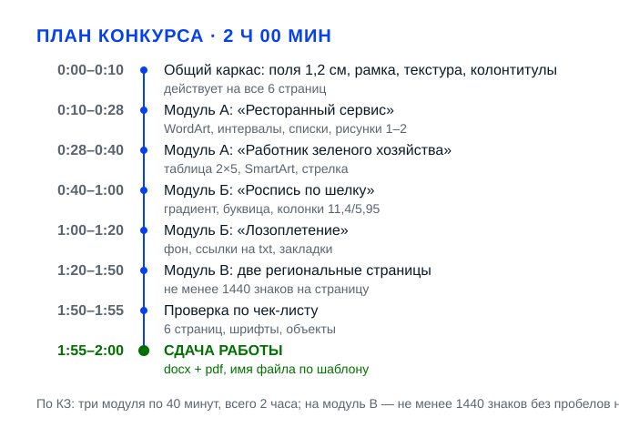
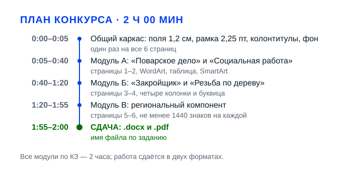
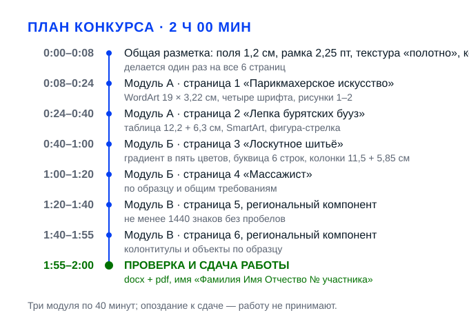

Мастер по обработке текста (Р)
Задания ниже — официальные файлы «Абилимпикс» (источник: abilympics-russia.ru), разложенные по категориям. Решения написаны по тексту задания, регламенту и критериям оценки; в них указано, что именно проверяет эксперт.
Школьник
14–16 лет, базовый уровень заданияВыдержка из официального конкурсного задания: страницы, относящиеся к категории «Школьник» (стр. 4–8 источника).
Пошаговое решение
Категория «Школьники» в компетенции «Мастер по обработке текста» — это шесть страниц информационного контента, набранных и оформленных одним документом Word строго по техническому заданию. Работа разбита на три модуля по сорок минут: модуль А — страницы о ресторанном сервисе и о работнике зелёного хозяйства, модуль Б — о росписи по шёлку и о лозоплетении, модуль В — две страницы о региональных компетенциях, темы участник выбирает сам. Всего на три модуля отводится два часа. Сложность не в наборе, а в точности: задание задаёт поля по 1,2 см, рамку 4,5 пт цветом RGB (142/170/219), положения объектов с точностью до сотых сантиметра и шрифты вроде Sitka Banner и Monotype Corsiva. Ошибка в полпункта контура видна при сверке с образцом, поэтому все значения вводятся числом в диалоговых окнах. Ниже задание разложено на пять задач и пятьдесят шагов — от полей страницы до сдачи двух файлов.

Задача 1. Собрать каркас документа: страницы, рамка, фон, колонтитулыОбщее форматирование · все 6 страниц
Общие пункты задания действуют на весь документ: поля 1,2 см, рамка 4,5 пт, текстура «упаковочная бумага», верхний колонтитул с датой и нижний с фамилией участника. Их делают первыми, потому что от полей зависит ширина полосы набора 18,6 см, а от неё — поместится ли рисунок 14,11 см и встанут ли колонки по 9 см. Каркас, собранный в начале, экономит время в конце: каждый следующий лист уже оформлен, остаётся только набрать и расставить объекты. Здесь же сразу задают имя файла, чтобы не потерять работу при первом же сохранении.
Действие 1.1. Разобрать ресурсы и собрать документ
Шаг 1.1.1
Открываем папку с ресурсами и первым делом создаём свой файл, а не правим чужой: «Файл», затем «Сохранить как», имя «Фамилия Имя Отчество № участника», формат .docx, папка на рабочем столе. Дальше берём текст задания и вставляем его в документ через «Специальную вставку» с параметром «Неформатированный текст»: так в файл придут только буквы и знаки, а чужие шрифты, отступы и цвета не перенесутся. Каждую из шести тем начинаем с новой страницы, а не с серии пустых абзацев — ставим курсор в начало темы и нажимаем Ctrl+Enter.
Пункт 6 общего форматирования требует сдать работу в .docx и .pdf под именем «Фамилия Имя Отчество № участника», и файл с другим именем эксперт просто не найдёт. Вставка без форматирования экономит силы: если тянуть текст «как есть», Word принесёт десятки лишних параметров, и вычищать их придётся по всему документу. Разрыв страницы нужен потому, что при смене полей пустые абзацы уползают и темы перестают начинаться с нового листа.
Внизу окна Word смотрим счётчик страниц: их должно быть ровно шесть. Включаем отображение непечатаемых символов на вкладке «Главная» и проверяем, что между темами стоит один знак разрыва страницы, а не четыре пустые строки подряд. Имя файла сверяем посимвольно с образцом, включая пробелы и знак номера.
Самая частая ошибка — вставить текст обычным Ctrl+V: вместе с ним приходят чужие поля, отступы и цвета, а потом полдня уходит на поиск абзаца, который не выравнивается по ширине. Вторая — разделять темы пустыми абзацами: после смены полей темы съезжают, шестая страница уходит на седьмую.
Эксперт в первые минуты смотрит на имя файла в папке сдачи и на число страниц в строке состояния. Разрывы он проверяет включением непечатаемых символов — именно там видно, собирал участник документ осознанно или тянул текст наугад.
Шаг 1.1.2
Разложив текст, проверяем, что он не потерялся при вставке. На пятой и шестой страницах, где лежит региональный компонент, ставим курсор в начало темы, зажимаем Shift и щёлкаем в конец, затем открываем вкладку «Рецензирование» и кнопку «Статистика»: в строке «Знаков (без пробелов)» должно быть не меньше 1440. Если цифра меньше, добираем текст по теме компетенции, а не растягиваем шрифт и не добавляем пустые строки.
Требование модуля В прямо задаёт не менее 1440 знаков без пробелов на каждой странице, и это единственный пункт задания, который проверяется цифрой, а не глазами. Недобор знаков читается как невыполненный модуль целиком, даже если оформление безупречно. Проверять надо именно без пробелов, потому что счётчик с пробелами даёт прибавку в двести-триста знаков и создаёт ложное чувство, что норма выполнена.
Счётчик показывает 1440 и больше на каждой из двух региональных страниц, а не в сумме по документу. Проверьте отдельно каждую страницу: выделение через Shift и щелчок захватывает ровно одну тему, если текст разбит разрывами, а не пустыми абзацами.
Ошибка — выделить весь документ и увидеть внушительные двадцать тысяч знаков, решив, что требование выполнено: норма считается по странице, а не по файлу. Вторая ошибка — добирать объём пустыми строками или повторением одного предложения: эксперт открывает статистику выделенного фрагмента и видит недобор сразу.
Эксперт выборочно выделяет одну из региональных страниц и открывает статистику. Обычно он берёт шестую, потому что именно на ней участники, экономя время, оставляют текст короче нормы.
Шаг 1.1.3
Раскладываем два часа на три модуля по сорок минут и держим этот график: 0:00–0:40 — страницы 1 и 2, первая половина модуля А; 0:40–1:20 — модуль Б, страницы 3 и 4; 1:20–1:55 — модуль В и финальная сверка; 1:55–2:00 — сохранение в двух форматах и сдача. Записываем эти четыре отметки на листке и кладём рядом с клавиатурой, потому что часы в аудитории видно не всегда, а телефон на конкурсе недоступен.
По заданию на каждый модуль отводится сорок минут, а на все три — два часа, и превышение времени не продлевает работу: сдаёте то, что успели. Опыт конкурсов показывает, что участники теряют время не на сложных объектах, а на бесконечной доводке одного заголовка, поэтому жёсткие внутренние окна нужны заранее. Пятнадцать минут в конце — не роскошь: сохранение в PDF и проверка шрифтов занимают именно столько.
К контрольной отметке 0:40 у вас две готовые страницы модуля А, к 1:20 — четыре страницы, к 1:55 — шесть. Если на 1:20 готовы только три страницы, немедленно упрощайте: доделывайте каркас и оформление по пунктам, а не добивайте мелкий декор.
Типичная ошибка — увлечься первым заголовком с градиентом и отражением на двадцать пять минут: модуль Б остаётся недоделанным, а за него дают не меньше, чем за первый. Вторая ошибка — оставить сохранение на последнюю минуту и получить PDF, в котором не встали шрифты.
Эксперт фиксирует время сдачи по часам и видит, в каком состоянии сданы страницы. Ровный темп и все шесть листов он отмечает как владение планированием, а рывок в конце с недоделанным модулем виден и без расспросов.
Действие 1.2. Задать поля, рамку и текстуру страницы
Шаг 1.2.1
Открываем вкладку «Макет», кнопку «Поля», пункт «Настраиваемые поля» и в окне «Параметры страницы» вводим четыре одинаковых значения: верхнее 1,2 см, нижнее 1,2 см, левое 1,2 см, правое 1,2 см. Перед вводом смотрим на поле единиц измерения — там должны стоять сантиметры, а не дюймы. В списке «Применить» выбираем «Ко всему документу», иначе новые значения лягут только на текущую страницу.
Первый пункт общего форматирования требует поля по 1,2 см со всех четырёх сторон, и от них зависит всё остальное: положение рамки, колонтитулы на 0,3 см от края, ширина полосы набора 18,6 см и место под рисунки шириной 14,11 см. Стандартное левое поле 3 см сжимает текст почти вдвое, рисунок по левому краю поля уезжает к центру, и половина пунктов технического задания перестаёт сходиться с образцом.
После нажатия «ОК» смотрим на линейку: серая зона слева и справа одинаковая и узкая, примерно по 1,2 см. Открываем «Поля» ещё раз и читаем четыре цифры — они должны совпадать во всех строках. Пролистываем документ до шестой страницы: настройка действует на весь файл, а не на первый лист.
Частая ошибка — выставить поля и не тронуть список «Применить»: значения остаются на одной странице, а остальные пять живут со старыми полями, и эксперт видит разную ширину текста на соседних листах. Вторая — оставить дюймы: 1,2 дюйма это 3,05 см, текст уезжает к центру, а рамка обрезает рисунки.
Эксперт открывает «Параметры страницы» на первой странице и сверяет четыре цифры с заданием. Отдельно он смотрит, одинаковая ли ширина текстового блока на странице 2 и на страницах 5–6, потому что там чаще всего остаются старые поля.
Шаг 1.2.2
Ставим рамку: вкладка «Дизайн», кнопка «Границы страниц», в окне «Границы и заливка» выбираем тип «Рамка», в списке «Ширина» — 4,5 пт, в списке «Цвет» — «Другие цвета», вкладка «Спектр», поле «Красный» 142, «Зелёный» 170, «Синий» 219, код HEX 8EAADB. В списке «Применить к» оставляем «Всему документу» и проверяем, что в поле «Рисунок» ничего не выбрано.
Пункт 2 задания задаёт рамку шириной 4,5 пт цветом RGB (142/170/219) — это светло-синий оттенок, который на распечатке выглядит спокойно, а на экране почти сливается с белым. Толщина и цвет проверяются в диалоге, поэтому вводить значения надо числами: подбор на глаз по палитре даёт расхождение в десять-двадцать единиц и заметную разницу с образцом. Рамка привязана к странице целиком, а не к абзацам, иначе она разорвётся на каждой странице.
Рамка видна по краю каждого из шести листов, линия ровная, одинаковой толщины по всем сторонам, отступ от текста примерно 8 пт. Открываем «Границы и заливка» повторно: в полях стоят 4,5 пт и 142/170/219, тип «Рамка», применение «Всему документу».
Ошибка — выбрать рамку из галереи «Границы страниц» готовым набором: там толщина 0,5 или 1,5 пт, а цвет чёрный, и пункт не выполнен, хотя рамка есть. Вторая — применить рамку к «Текущей странице» и получить рамочным только первый лист, остальные пять останутся без рамки.
Эксперт сверяет рамку с образцом и при сомнении открывает диалог границ: там видно и толщину, и способ задания цвета. Смещённую относительно текста рамку он читает как небрежность, даже если толщина верная.
Шаг 1.2.3
Задаём фон: вкладка «Дизайн», кнопка «Цвет страницы», пункт «Заполнение», раскрываем «Текстура» и выбираем «Упаковочная бумага». Если в галерее её нет, идём через «Другие текстуры» и находим файл в папке с ресурсами. После выбора открываем «Цвет страницы» снова, пункт «Параметры заливки» и проверяем, что стоит именно текстура, а не сплошной бежевый цвет, похожий на неё.
Пункт 5 общего форматирования требует текстуру «упаковочная бумага», и это отдельный пункт оценки, а не украшение: однотонный бежевый фон визуально похож, но при сверке в диалоге сразу видно, что текстура не применена. Текстура, в отличие от рисунка, автоматически повторяется и не сдвигается при прокрутке страниц, поэтому на шести листах фон выглядит одинаково.
Прокрутите документ: фон одинаковый на всех шести страницах, видны волокна и лёгкая неоднородность бумаги. Откройте «Параметры заливки»: в списке выбран пункт «Текстура», в поле имени стоит «Упаковочная бумага», масштабирование не изменено.
Ошибка — залить страницу похожим телесным цветом и считать пункт выполненным: в диалоге видно «Сплошная заливка», и балл снимается. Вторая — вставить текстуру как рисунок с обтеканием «За текстом»: она не повторяется на шести листах, при печати съезжает и закрывает колонтитул.
Эксперт смотрит распечатку или PDF, а не экран. Отсутствие текстуры он отмечает как невыполненный пункт общего форматирования независимо от того, насколько аккуратно оформлен текст.
Действие 1.3. Собрать колонтитулы и сохранить файл
Шаг 1.3.1
Дважды щёлкаем по верхнему полю страницы, чтобы открыть верхний колонтитул, и печатаем слово «Интеграл». Рядом ставим дату: вкладка «Вставка», «Дата и время», формат по образцу, галочка «Обновлять автоматически» — тогда в файл встанет поле, а не текст. В «Положении» колонтитула на вкладке «Конструктор» выставляем 0,3 см от верхнего края. Линию под колонтитулом делаем заливкой нижней границы абзаца цветом RGB 227/99/59, толщиной 1 пт.
Пункты 3 и 4 общего форматирования задают колонтитулы с положением 0,3 см и цвет линии 227/99/59 — кирпично-оранжевый, который в образце отделяет шапку от текста. Автоматическая дата нужна потому, что эксперт проверяет именно поле: напечатанные цифры не обновятся при открытии файла на другой машине, и это видно по щелчку. Толщина линии в один пункт на распечатке читается как тонкая подчёркивающая черта.
Щёлкните по дате: если она выделяется серым фоном как поле, всё верно. Откройте «Положение» в «Конструкторе»: 0,3 см от верхнего края. Цвет линии сверяем через «Границы и заливка», поле «Цвет» — 227/99/59.
Ошибка — набрать дату руками: при открытии на другом компьютере она останется прошлой, а поле должно показывать текущую. Вторая — задать линию фигурой или подчёркиванием текста: она не тянется на всю ширину полосы и обрывается на середине строки.
Эксперт щёлкает по дате и смотрит, поле это или текст, затем проверяет цвет линии по диалогу границ. На глаз кирпичный оттенок от оранжевого почти не отличается, поэтому цвет он сверяет по значениям.
Шаг 1.3.2
Переходим в нижний колонтитул и набираем «Интеграл», затем с новой строки или через пробел — фамилию, имя и номер участника. Выделяем всё, ставим шрифт Monotype Corsiva, кегль 16 пт, цвет RGB 0/0/102 через «Другие цвета», вкладка «Спектр». В «Положении» нижнего колонтитула выставляем 0,3 см от нижнего края и проверяем, что колонтитул не наезжает на рамку.
Пункт 4 требует в нижнем колонтитуле именно «Фамилия Имя № участника» шрифтом Monotype Corsiva 16 пт цветом RGB (0/0/102), то есть тёмно-синим. Этот колонтитул — единственная подпись работы: по нему эксперт сопоставляет лист с оценочным листом, и расхождение в одну букву фамилии становится проблемой при сдаче. Рукописный характер Corsiva в 16 пт виден даже на плохой распечатке, поэтому подменять шрифт на Arial нельзя.
Проверьте на каждой из шести страниц: фамилия, имя и номер совпадают с данными в оценочном листе, цвет тёмно-синий, кегль 16, шрифт с наклонным курсивным рисунком. Расстояние от нижнего края листа до строки — 0,3 см, рамка не перекрывает текст.
Ошибка — вписать только фамилию, забыв номер участника: колонтитул не совпадает с заданием, и эксперт тратит время на выяснение, чей файл перед ним. Вторая — поставить 16 пт только на первой странице, а на остальных оставить 12 пт от прежнего шаблона.
Эксперт сверяет фамилию в колонтитуле с фамилией в имени файла и в оценочном листе. Несовпадение или отсутствие номера участника он фиксирует до начала проверки содержания.
Шаг 1.3.3
Сохраняем результат дважды. Первый раз — «Файл», «Сохранить как», тип «Документ Word (.docx)», имя «Фамилия Имя Отчество № участника», папка сдачи. Второй раз — «Файл», «Сохранить как», тип «PDF (*.pdf)», то же имя, в параметрах «Стандарт» и галочка «Структурные теги для удобства работы». Перед сохранением проверяем, что в документе нет режима «Черновик» и скрытого текста: в PDF они выйдут так же, как на экране.
Пункт 6 общего форматирования требует сохранить работу в двух форматах под одним именем, и PDF нужен не для красоты: именно в нём видно, встали ли шрифты Monotype Corsiva и Sitka Banner, не поплыли ли рисунки и не обрезалась ли рамка. На чужом компьютере, где этих шрифтов может не быть, docx выглядит иначе, а PDF сохраняет картинку страницы такой, какой вы её сделали.
В папке сдачи лежат два файла с одинаковым именем и разными расширениями. Откройте PDF: шесть страниц, рамка по краю, фон-текстура, колонтитулы на своих местах, ни одна строка не уехала за поля. Размер файла не нулевой.
Ошибка — сохранить PDF кнопкой «Печать в PDF» и получить файл с обрезанными полями: принтерный драйвер добавляет свои отступы, и рамка уходит за край. Вторая — дать файлам разные имена, например добавив «итог»: эксперт ищет строго по шаблону имени.
Эксперт открывает оба файла: в .docx смотрит настройки, в PDF — внешний вид. Имя сверяет с фамилией в нижнем колонтитуле и в списке участников, поэтому расхождение в одну букву уже заметно.
Задача 2. Сверстать страницу 1 «Ресторанный сервис»Модуль А · 40 минут · страница 1
Самая насыщенная страница документа: заголовок WordArt на двадцать сантиметров с отражением и перспективой, три гарнитуры в трёх абзацах, четыре разных междустрочных интервала, восемь цветных фраз, два списка с разной нумерацией, сноска и два рисунка по 14,11 см с обрезкой по фигуре «перфолента». Времени на неё уходит больше, чем на любую другую, поэтому в плане ей отведена вся первая половина модуля А. Главное здесь — идти сверху вниз по пунктам задания и не возвращаться к уже сделанному объекту.
Действие 2.1. Собрать колонтитул и заголовок в WordArt
Шаг 2.1.1
Ставим курсор на первую страницу, дважды щёлкаем по верхнему колонтитулу и меняем текст: вместо общего «Интеграл» печатаем «Компетенция «Ресторанный сервис»». Выделяем строку и задаём шрифт Bahnschrift, кегль 10,5 пт, полужирный, курсив, цвет RGB 0/0/102 через «Другие цвета», вкладка «Спектр». Линию 227/99/59 и положение 0,3 см оставляем как есть — они общие для всех страниц.
Пункт 1 страницы 1 требует в верхнем колонтитуле название темы шрифтом Bahnschrift 10,5 пт, полужирным курсивом, цветом RGB (0/0/102). Колонтитул работает как ярлык: эксперт листает шесть страниц и по шапке сразу видит, где какая компетенция. Кегль 10,5 меньше основного текста намеренно, чтобы шапка не спорила с заголовком в 50 пт и не разрывала строку на две части.
Пролистайте страницы 1 и 2: в шапке первой стоит «Ресторанный сервис», во второй — своя тема, а слово «Интеграл» и дата остались только там, где заданы общими пунктами. Шрифт в строке шрифта читается как Bahnschrift, начертание — жирный курсив.
Ошибка — править колонтитул сразу на всех страницах, не сняв галочку «Как в предыдущем разделе»: тема первой страницы появится и на второй, и на третьей, и оба модуля смешаются. Вторая — потерять автоматическую дату при замене текста.
Эксперт листает файл и смотрит верхнюю строку каждого листа: название должно совпадать с темой страницы. Он же проверяет, что дата осталась полем, а не превратилась в набранные цифры.
Шаг 2.1.2
Заголовок делаем объектом WordArt: выделяем фразу «Ресторанный сервис» в тексте и применяем экспресс-стиль из галереи «Экспресс-стили» — вариант с заливкой и контуром. В «Формате фигуры» задаём: цвет текста RGB 47/85/151, контур текста RGB 197/90/17, толщина контура 1,5 пт, шрифт Bahnschrift 50 пт. На вкладке «Размер» вводим высоту 3,22 см и ширину 20 см, обтекание «Сквозное», положение по горизонтали «По центру страницы», по вертикали «−0,96 см ниже поля».
Пункт 2 задания расписывает заголовок до десятых: цвет 47/85/151, контур 197/90/17 в 1,5 пт, Bahnschrift 50, объект 3,22 на 20 см, сквозное обтекание и вертикальное смещение −0,96 см. Отрицательное смещение поднимает объект выше поля, и заголовок частично заходит на зону колонтитула — так на образце создаётся эффект крупной плашки поперёк листа. Обтекание «сквозное» обязательно: при «в тексте» объект разорвёт абзац и сдвинет весь набор.
Щёлкните по заголовку: открывается контекстная вкладка «Формат фигуры», в «Размере» стоят 3,22 и 20 см с точностью до сотых, в «Положении» — по центру страницы и −0,96 см. Контур виден как тонкая обводка 1,5 пт, буквы не выходят за рамку страницы.
Ошибка — растянуть заголовок мышью «на глаз»: размер уходит на 3,4 или 19,2 см, и при сверке с образцом заметно, что объект шире полосы набора. Вторая — оставить обтекание «В тексте»: заголовок встаёт посреди абзаца, текст прыгает вниз, и страница перестаёт укладываться в один лист.
Эксперт открывает «Формат фигуры» и сверяет значения на вкладках «Размер» и «Положение». Глазами он оценивает только читаемость и то, насколько заголовок выровнен относительно рамки.
Шаг 2.1.3
Добавляем отражение: в «Формат фигуры» открываем «Текстовые эффекты», раздел «Отражение», выбираем вариант «Среднее отражение» и правим три параметра вручную: смещение 8 пт, прозрачность 50 процентов, размер 50 процентов, расстояние 4,7 пт. Затем в разделе «Формат объёмной фигуры» или «Поворот объёмной фигуры» ставим «Перспектива снизу». Проверяем, что отражение не наезжает на первый абзац и не закрывает строку колонтитула.
Пункт 2 заканчивается требованием эффекта отражения с точными значениями и перспективой снизу. Отражение на пятьдесят процентов прозрачности и половину высоты даёт мягкое продолжение букв, которое видно, но не мешает читать текст под заголовком. Перспектива снизу создаёт ощущение, что надпись стоит на наклонной плоскости, и это единственный эффект, который на образце отличим от плоского отражения.
Смотрим на заголовок в масштабе 100 процентов: под буквами мягкое зеркальное отражение, оно светлее основного текста, расстояние до первого абзаца не меньше двух-трёх строк. В диалоге эффектов стоят 8 пт, 50 процентов, 50 процентов и 4,7 пт.
Ошибка — выбрать отражение из галереи и не править проценты: стандартное отражение плотное, оно залезает на первый абзац и делает текст нечитаемым. Вторая — применить трёхмерный поворот ко всему объекту, а не к тексту: заголовок теряет размер 20 см и вылезает за рамку.
Эксперт смотрит на заголовок с расстояния вытянутой руки и сверяет с образцом: направление перспективы и мягкость отражения видны сразу. Точные значения он проверяет в диалоге, если возникает сомнение.
Действие 2.2. Выставить абзацы, интервалы и шрифты
Шаг 2.2.1
Ставим курсор в первый абзац, открываем «Абзац» через щелчок правой кнопкой и в поле «Первая строка» выбираем «Отступ», значение 1 см. То же самое делаем для третьего абзаца: удобнее выделить оба абзаца с Ctrl и задать значение один раз. Остальные абзацы выделяем и выставляем «Первая строка» — «Нет». Проверяем, что отступ задан именно в параметрах абзаца, а не набран пробелами или табуляцией.
Пункт 3 задания требует абзацный отступ 1 см только у первого и третьего абзацев, остальной текст идёт без отступа — так на образце выделены вводная часть и блок про типы обслуживания. Если отступ сделан пробелами, он не совпадает по ширине от абзаца к абзацу и рассыпается при смене шрифта с Candara на Sitka Banner. Точное значение 1 см проверяется в диалоге, и там же видно, что остальные абзацы его не имеют.
Поставьте курсор в первый абзац и откройте «Абзац»: «Первая строка», «Отступ», 1 см. Затем проверьте второй абзац — там должно стоять «Нет». Включите непечатаемые символы: в начале абзацев не должно быть точек-пробелов и стрелок табуляции.
Ошибка — сделать отступ во всех абзацах «чтобы выглядело ровно»: пункт про остальной текст без отступа не выполнен, и эксперт видит разницу с образцом на второй же странице. Вторая — набрать отступ пробелами: при выравнивании по ширине первый абзац начинается на разном расстоянии от края.
Эксперт ставит курсор в первый и третий абзацы и открывает диалог «Абзац» — там видно значение первой строки. Пробелы вместо отступа он находит включением непечатаемых символов.
Шаг 2.2.2
Работаем с интервалами по абзацам. Первому ставим междустрочный «Одинарный». Второму — «Множитель» 0,8, интервал до 5 пт и после 5 пт. Третьему — множитель 0,9. Всё, что идёт с фразы «Обслуживание официантами» и до конца страницы, выделяем и ставим множитель 1,1. Тут же выставляем выравнивание: основной текст по ширине, второй абзац и фраза «Обслуживание официантами» — по центру.
Пункт 4 задаёт четыре разных интервала на одной странице: одинарный, множитель 0,8 с интервалами по 5 пт, множитель 0,9 и 1,1 после фразы про обслуживание официантами. Это не произвол: плотный второй абзац имитирует врезку, а разреженный нижний блок читается как отдельная часть текста. Пункт 5 добавляет выравнивание, и вместе они дают ту самую ступенчатую плотность, по которой образец и сверяют.
Пройдите по абзацам диалогом «Абзац»: 1 — одинарный, 2 — множитель 0,8 и по 5 пт до и после, 3 — 0,9, нижний блок — 1,1. Второй абзац и фраза «Обслуживание официантами» стоят по центру, остальное — по ширине, правый край ровный.
Ошибка — выделить всю страницу и поставить один интервал: страница становится ровной, но четыре пункта задания оказываются невыполненными. Вторая — задать множитель 1,1 только первому абзацу нижнего блока: остальные остаются с прежним интервалом, и стык виден по разной плотности строк.
Эксперт выборочно открывает три-четыре абзаца и смотрит значения. Плотность строк он оценивает сравнением с образцом, а выравнивание — по ровности правого края и по центровке второго абзаца.
Шаг 2.2.3
Расставляем шрифты. Первому и третьему абзацу — Candara, 11,5 пт. Второму — Cambria, 12 пт, полужирный курсив. Тексту с четвёртого абзаца и до конца — Sitka Banner, 11 пт. Меняем шрифт выделением абзаца целиком, а не по словам, и после каждой замены проверяем, что кегль не сбился: Word иногда тянет за собой прежние 11,5 пт, особенно если абзац заканчивается знаком сноски или номером списка.
Пункт 6 задаёт три гарнитуры на одной странице: Candara 11,5, Cambria 12 полужирным курсивом и Sitka Banner 11 с четвёртого абзаца до конца. Гарнитуры подобраны контрастно — гуманистическая Candara, антиква Cambria и вытянутая Sitka Banner, — и по этому контрасту видно, что участник работал со шрифтами, а не оставил Calibri по умолчанию. Дробный кегль 11,5 проверяется в строке шрифта, поэтому округлять его до 11 или 12 нельзя.
Поставьте курсор в первый абзац: Candara, 11,5. Во второй: Cambria, 12, начертание жирный курсив. В четвёртый: Sitka Banner, 11. Прокрутите страницу — граница между третьим и четвёртым абзацем видна по смене рисунка букв.
Ошибка — применить Cambria ко второму абзацу вместе с полужирным, но забыть курсив: пункт требует «Ж/К» одновременно, и это заметно при сверке. Вторая — оставить в четвёртом абзаце Candara: граница шрифтов проходит не там, где на образце, и весь нижний блок выглядит чужим.
Эксперт ставит курсор в случайные абзацы и смотрит строку шрифта — это занимает секунды. Разнобой он видит и без проверки: у Candara характерный узкий рисунок, а Sitka Banner заметно шире.
Действие 2.3. Расставить цветные акценты, списки и сноску
Шаг 2.3.1
Выделяем фразы «Сервис в ресторане», «Официант», «Бармен» и «Бариста» по одной и ставим кегль 14 пт, полужирный курсив, цвет RGB 128/0/128. Затем находим «Американский тип», «Французский тип», «Русский тип», «Английский тип» и оформляем их иначе: все буквы прописными через «Регистр», кегль 10 пт, полужирный курсив, тот же цвет 128/0/128. Пройдите фразы в порядке появления в тексте, отмечая обработанные карандашом на распечатке образца.
Пункт 7 делит акценты на две группы с разным кеглем: четыре термина идут 14 пт, а четыре типа обслуживания — 10 пт прописными, хотя цвет у всех один, 128/0/128. Прописные буквы при меньшем кегле дают ровную строку-перечисление, которая не разрывает абзац, а крупные термины работают как подзаголовки внутри текста. Цвет этот встречается только здесь, и его легко перепутать с тёмно-синим колонтитула, поэтому сверять надо цифры.
Щёлкните по каждой из восьми фраз и проверьте в строке шрифта кегль и начертание: четыре по 14 пт, четыре по 10 пт прописными. Через «Другие цвета» убедитесь, что стоит 128/0/128, а не 102/0/102 — оттенки близкие, и на глаз их легко спутать.
Ошибка — оформить все восемь фраз одинаково по 14 пт: прописные в 14 пт разрывают строку и выдавливают абзац на вторую страницу. Вторая — набрать типы заглавными вручную: при смене шрифта текст остаётся заглавным, но эксперт видит, что регистр не применён и буквы набраны заново.
Эксперт сверяет цвет по диалогу и смотрит, все ли восемь фраз обработаны. Пропущенная фраза видна сразу: она остаётся чёрной посреди фиолетового перечисления.
Шаг 2.3.2
Фразу «Обслуживание официантами» выделяем и ставим 14 пт, полужирный курсив, цвет RGB 102/0/102. В «Шрифт», вкладка «Дополнительно», поле «Интервал» — «Разреженный», на 2 пт, там же проверяем, что не включено сжатие. Затем в «Текстовые эффекты» добавляем «Тень» с параметром «Смещение вправо» из галереи, не меняя размытие и прозрачность вручную: в галерее это один из четырёх вариантов смещения, и его легко узнать по тёмной полосе справа от букв.
Пункт 8 задаёт для этой фразы отдельное оформление: 14 пт полужирным курсивом, разрежение 2 пт, цвет 102/0/102 и внешнюю тень со смещением вправо. Разрежение в два пункта растягивает фразу почти до ширины полосы, и она читается как разделитель между верхней и нижней частью страницы. Тень со смещением вправо отбрасывает чёткую тёмную полосу справа от букв, и это единственный вариант тени, который на образце отличим от свечения.
Поставьте курсор во фразу: 14 пт, жирный курсив, в диалоге шрифта интервал «Разрешенный 2 пт». Тень видна справа от букв, без размытого ореола вокруг. Цвет — 102/0/102, темнее фиолетового 128/0/128 из предыдущего пункта.
Ошибка — задать разрежение пробелами между буквами: при выравнивании по центру фраза расползается в разные стороны, а при копировании рассыпается. Вторая — взять тень «Снаружи слева» или стандартную снизу: направление тени на образце другое, и пункт не выполнен.
Эксперт открывает диалог шрифта и смотрит значение межзнакового интервала, затем проверяет направление тени. Слишком плотную или слишком разреженную фразу он сразу отмечает как отклонение.
Шаг 2.3.3
Строим два списка. Фразы со слов «Официант» и заканчивая «чай» выделяем и включаем маркированный список, выравнивание по левому краю, затем в «Определить новый маркер» задаём цвет маркера RGB 102/0/102. Фразы со слов «Американский тип» до «гостя» делаем нумерованным списком с римскими цифрами через «Нумерация», «Определить новый формат номера», цвет номера 102/0/102. После этого ставим сноску: ставим курсор после слова «геридоне» и нажимаем «Ссылки», «Вставить сноску».
Пункты 10, 11 и 9 задают два списка с разными типами нумерации и цветом 102/0/102 плюс обычную сноску на слово «геридоне». Маркированный список читается как перечень обязанностей, римские цифры подчёркивают порядок исторических типов, а сноска нужна, чтобы пояснить термин, не разрывая основной текст. Цвет маркера и номера задаётся в настройках списка, а не покраской символов: иначе при добавлении строки цвет не наследуется.
Щёлкните по маркеру: открывается «Определить новый маркер» с цветом 102/0/102. Номера в списке идут I, II, III, IV, выравнивание по левому краю. Сноска стоит внизу страницы, её номер надстрочный, текст сноски набран тем же шрифтом, что основной текст.
Ошибка — набрать римские цифры руками: при правке текста нумерация ломается, а эксперт щёлкает по номеру и видит, что это не список. Вторая — вставить сноску концевую вместо обычной: она уедет в конец документа, и на странице останется только надстрочная цифра.
Эксперт щёлкает по номеру и смотрит, настоящий это список или набранные цифры. Цвет маркера он проверяет в «Определить новый маркер», а сноску — по переходам между знаком и текстом внизу листа.
Действие 2.4. Вставить два рисунка и подписи к ним
Шаг 2.4.1
Вставляем Изображения 1, 2 и 3 из папки ресурсов, выделяем их все с Shift и группируем: правая кнопка, «Группировать», «Сгруппировать». Полученную группу обрезаем по фигуре: «Формат рисунка», «Обрезка», «Обрезать по фигуре», выбираем «Перфолента». Задаём размер 14,11 на 5,31 см, обтекание «Вокруг рамки», положение по левому краю поля и 2,56 см ниже поля.
Пункт 12 требует не три отдельные картинки, а один объект из сгруппированных Изображений 1–3, обрезанный по фигуре «перфолента», размером 14,11 на 5,31 см у левого края поля. Обрезка по фигуре даёт зубчатые края, характерные для киноплёнки, и это единственный способ получить такую рамку средствами Word. Группировка нужна потому, что при обтекании «вокруг рамки» три отдельных рисунка ведут себя независимо и текст обтекает каждый по своему контуру.
Щёлкните по рисунку: рамка выделения одна, вокруг всей группы. В «Размере» 14,11 и 5,31 см, в «Обрезке» выбрана фигура «Перфолента», в «Положении» — по левому краю и 2,56 см. Зубчатые края видны по верхней и нижней кромке.
Ошибка — вставить три картинки рядом и не сгруппировать: при изменении размера они разъезжаются, а зубчатая обрезка применяется к каждой отдельно и режет изображения по-разному. Вторая — обрезать по фигуре до группировки: часть картинок теряет края, и композиция распадается.
Эксперт щёлкает по рисунку и смотрит, выделяется ли группа целиком. Состав он сверяет с заданием: перепутанные изображения — самая частая потеря баллов на этой странице.
Шаг 2.4.2
Повторяем ту же операцию для Изображений 4, 5 и 6: группируем, обрезаем по фигуре «Перфолента», ставим размер 14,11 на 5,31 см. Положение — по правому краю поля и те же 2,56 см ниже поля, обтекание «Вокруг рамки». Проверяем, что второй рисунок не наезжает на первый: между ними должен остаться текстовый коридор шириной около четырёх миллиметров, если полоса набора 18,6 см.
Пункт 13 задаёт второму рисунку те же размеры и ту же вертикальную привязку, но прижимает его к правому краю поля. Два объекта по 14,11 см при полосе 18,6 см не помещаются рядом, поэтому они слегка перекрываются по горизонтали, и Word разводит их по вертикали — на образце это выглядит как два кадра, сдвинутых друг относительно друга. Обтекание «вокруг рамки» оставляет текст только в просветах, поэтому важно не ставить «по контуру».
Второй рисунок прижат к правому краю, его верх совпадает по уровню с первым или чуть смещён, размеры в диалоге — 14,11 и 5,31. Между кадрами нет белой полосы на всю ширину, текст обходит оба объекта, не заходя на зубчатые края.
Ошибка — выровнять второй рисунок по центру или по левому краю: композиция становится симметричной, а на образце кадры разнесены по краям. Вторая — поставить обтекание «За текстом»: текст уходит под рисунки, и нижняя часть страницы оказывается пустой.
Эксперт смотрит на страницу в уменьшенном масштабе: два кадра по краям и текстовый коридор между ними должны читаться сразу. Потом проверяет цифры в диалогах размера и положения.
Шаг 2.4.3
Оформляем границы и подписи. Выделяем каждый рисунок и в «Формат рисунка», «Граница рисунка» ставим цвет RGB 32/56/100 и ширину 3 пт. Под каждым кадром ставим подпись: «Рисунок 1» и «Рисунок 2» с пояснением по образцу, шрифт Monotype Corsiva, 11 пт, полужирный. Подпись ставим отдельным абзацем сразу под кадром и проверяем, что она осталась на той же странице, а не уехала вниз через разрыв.
Пункт 12 и 13 требуют границу цветом RGB (32/56/100) толщиной 3 пт, а пункт 14 — подписи шрифтом Monotype Corsiva 11 пт полужирным. Тёмно-синяя граница в три пункта читается как паспарту и отделяет кадры от бежевой текстуры фона, которая иначе их заглушает. Курсивная подпись в 11 пт — единственный курсив на странице, кроме нижнего колонтитула, и по нему эксперт сразу отличает подпись от основного текста.
Увеличьте масштаб: граница ровная, одинаковой толщины по всем четырём сторонам, цвет тёмно-синий. Подпись стоит под кадром, набрана Monotype Corsiva 11 пт полужирным, не наезжает на текст и не оторвана от рисунка.
Ошибка — применить границу к изображениям до группировки: у каждого из трёх кадров появляется своя рамка, и внутри общего объекта видны лишние линии. Вторая — подписать рисунки обычным Arial 11: пункт про Monotype Corsiva не выполнен, и это видно по прямому рисунку букв.
Эксперт проверяет подписи вместе с рисунками: соответствие шрифта, положение под кадром и отсутствие наложения на текст. Курсивный шрифт он узнаёт сразу, подмену замечает без диалога.
Задача 3. Сверстать страницу 2 «Работник зелёного хозяйства»Модуль А · 40 минут · страница 2
Вторая страница модуля А построена на других приёмах: левое выравнивание вместо ширины, контурные фразы толщиной 0,75 пт, таблица 2 на 5 на всю ширину полосы, рисунок из трёх кадров с обрезкой по разным фигурам, пирамидная схема SmartArt и контурная пятиугольная стрелка с текстом внутри. Ошибки здесь чаще всего арифметические: ширины столбцов 10,95 и 7,55 см должны дать 18,5 см, а высота строк 0,8 см при пяти строках — четыре сантиметра ровно. Проверять эти цифры надо до заполнения таблицы, иначе содержимое придётся переносить заново.
Действие 3.1. Настроить колонтитул, отступы и интервалы
Шаг 3.1.1
Встаём на вторую страницу, открываем верхний колонтитул и заменяем текст на «Компетенция «Работник зеленого хозяйства»». Ставим шрифт Arial Black, кегль 10 пт, полужирный, курсив, цвет RGB 232/241/193 через «Другие цвета». Линию 227/99/59 оставляем: она задана общим пунктом для всех страниц. Проверяем, что шапка первой страницы при этом не изменилась.
Пункт 1 страницы 2 требует Arial Black 10 пт полужирным курсивом цветом RGB (232/241/193) — светло-салатовый оттенок, который на бежевой текстуре читается как тиснение. Гарнитура Arial Black вдвое шире Bahnschrift с первой страницы, поэтому название из трёх слов помещается в одну строку только при 10 пт. Связь с предыдущим колонтитулом снимаем до правки текста, иначе шапка первой страницы тоже изменится.
Шапка второй страницы: Arial Black, 10 пт, жирный курсив, цвет светлый салатовый. Шапка первой страницы осталась с Bahnschrift и тёмно-синим цветом. Название не переносится на вторую строку и не задевает рамку.
Ошибка — править шапку, не сняв кнопку «Как в предыдущем разделе»: тема второй страницы появляется и на первой, и текст модуля А смешивается в одну шапку. Вторая — оставить кегль 10,5 от первой страницы: Arial Black в этом кегле вылезает на вторую строку.
Эксперт сравнивает колонтитул с образцом, прикладывая страницу рядом. Он смотрит и цвет, и то, что название не сползло на вторую строку и не перекрыло линию.
Шаг 3.1.2
Выставляем отступы: у первого и предпоследнего абзаца — первая строка 0,8 см, у остальных «Нет». Затем интервалы: первому и последнему абзацу множитель 1,1 и интервал перед 6 пт; абзацам со слов «Обучающийся…» и заканчивая «…оборудованием» — междустрочный «Минимум» 12 пт и интервал перед 6 пт; всему остальному тексту — одинарный интервал без дополнительных отступов.
Пункты 2 и 3 задают три разных режима интервалов и два значения абзацного отступа, причём «минимум 12 пт» — это не то же самое, что «точно 12 пт»: при минимуме строка может стать выше, если в ней крупный символ, а при «точно» крупный символ подрезается сверху. Задание требует именно минимум, и на образце строки в этом блоке чуть выше остальных. Разнобой интервалов не случаен: он отделяет вводную часть от перечня видов деятельности.
Откройте «Абзац» в первом, в среднем и в последнем абзацах: 1,1 и 6 пт до, «Минимум 12 пт» и 6 пт до, одинарный. Первая строка 0,8 см стоит ровно у первого и предпоследнего. Буквы в строках с минимумом не подрезаны сверху.
Ошибка — поставить «Точно 12 пт» вместо «Минимум 12 пт»: верхушки прописных букв и надстрочные знаки срезаются, и это видно при увеличении до 200 процентов. Вторая — задать отступ 0,8 см всем абзацам сразу, тогда пункт про остальной текст без отступа не выполнен.
Эксперт открывает диалог абзаца в первом и предпоследнем абзацах. Наличие отступа он видит и по линейке, но точное значение и тип интервала берёт из диалога.
Шаг 3.1.3
Оформляем шрифты и выравнивание. Первому и предпоследнему абзацу ставим Monotype Corsiva 14 пт. Основному тексту оставляем гарнитуру по образцу и выравнивание по левому краю — не по ширине, как на первой странице. Фразы «Обучающийся по профессии Рабочий зелёного хозяйства готовится к следующим видам деятельности» и последний абзац выделяем и ставим Times New Roman 14 пт полужирным, цвет текста RGB 21/151/49, контур RGB 43/73/53 толщиной 0,75 пт, выравнивание по центру.
Пункты 4, 7 и 8 задают именно левое выравнивание основного текста и две контурные фразы цветом 21/151/49 с обводкой 43/73/53 в 0,75 пт. Левое выравнивание даёт рваный правый край, и это осознанное отличие от первой страницы, где текст шёл по ширине: так на образце страницы отличаются друг от друга. Тонкий контур в 0,75 пт на зелёном тексте читается как тень и не превращает буквы в плашку.
Правый край основного текста неровный, выравнивание в диалоге — «По левому краю». У двух контурных фраз: Times New Roman 14 полужирный, цвет 21/151/49, обводка 43/73/53 0,75 пт, выравнивание по центру. Первый и предпоследний абзацы — Monotype Corsiva 14.
Ошибка — оставить выравнивание по ширине от предыдущей страницы: правый край становится ровным, и пункт 8 не выполнен. Вторая — задать контур 1,5 пт по привычке с первой страницы: буквы сливаются, а на зелёном фоне обводка съедает весь просвет внутри знаков.
Эксперт смотрит на правый край: у правильно оформленной страницы он неровный. Центрированные фразы он проверяет по положению относительно полосы набора, а контур — по диалогу «Контур текста».
Действие 3.2. Оформить заголовок, контурные фразы и список
Шаг 3.2.1
Заголовок «Работник зеленого хозяйства» оформляем как объект: выделяем фразу, применяем WordArt, в «Формате фигуры» ставим цвет текста RGB 21/151/49, контур RGB 43/73/53 толщиной 0,75 пт, шрифт Arial Black, кегль 29,5 пт, полужирный. Задаём размер объекта по образцу, обтекание «Сквозное» и положение по центру поля, чтобы заголовок не сдвигал первый абзац при правке текста.
Пункт 5 требует для заголовка цвет 21/151/49, контур 43/73/53 в 0,75 пт и Arial Black 29,5 пт полужирным — те же цвета, что у контурных фраз ниже, поэтому заголовок и фразы читаются как одна группа. Кегль 29,5 почти вдвое меньше, чем 50 пт на странице про ресторанный сервис: здесь заголовок из трёх слов, и при большем кегле он занял бы две строки и сдвинул таблицу.
Щёлкните по заголовку: Arial Black, 29,5 пт, полужирный, заливка 21/151/49, обводка 43/73/53 в 0,75 пт. Заголовок стоит по центру, в одну строку, под ним начинается первый абзац, а таблица не съехала.
Ошибка — набрать заголовок обычным текстом и только покрасить его: контур не появится, а при смене кегля строка переразобьётся. Вторая — оставить обтекание «В тексте»: заголовок встраивается в абзац, и после него остаётся пустая строка, из-за которой таблица уезжает на следующую страницу.
Эксперт проверяет толщину контура в диалоге: 0,75 и 1,5 пт различаются, но на глаз при мелком масштабе почти не видны. Он также смотрит, текст это или объект, потому что от этого зависит поведение заголовка при правке.
Шаг 3.2.2
Абзац со слов «Подготовка…» и заканчивая «…оборудованием» оформляем маркированным списком: выделяем, ставим шрифт Times New Roman 13 пт, включаем «Маркированный список» и выравниваем маркер по образцу. Фразы «Обучающийся по профессии Рабочий зелёного хозяйства готовится к следующим видам деятельности» и последний абзац уже оформлены контуром — проверяем, что они остались по центру и не попали в список.
Пункт 6 задаёт для этого блока Times New Roman 13 пт и маркированный список, а пункт 7 — контурные фразы Times New Roman 14 пт полужирным. Разница в один пункт кегля существенна: 13 и 14 рядом дают разную высоту строк, и на образце видно, что перечень идёт мельче вводных фраз. Список нужен потому, что здесь перечисляются виды работ, и каждый пункт должен начинаться с маркера, а не с тире, набранного руками.
В диалоге шрифта у блока стоит Times New Roman 13. Маркеры одинаковые, выровнены по левому краю, текст после маркера начинается на одной вертикали во всех строках. Контурные фразы остались 14 пт и по центру.
Ошибка — оформить перечень тире и пробелами: при изменении текста выключка ломается, а эксперт видит, что список не настоящий. Вторая — применить маркированный список ко всей странице вместе с контурными фразами: у них появляются маркеры и сбивается центрирование.
Эксперт щёлкает по маркеру и смотрит, настоящий это список или набранные вручную тире. Кегль он сверяет в строке шрифта, потому что 13 и 14 пт на бежевом фоне плохо различимы.
Шаг 3.2.3
Собираем таблицу: «Вставка», «Таблица», 2 столбца и 5 строк. Выделяем таблицу и в «Свойства таблицы» задаём высоту строк 0,8 см с режимом «Ровно», ширину первого столбца 10,95 см, второго 7,55 см, выравнивание таблицы по центру. Ширины удобнее вводить на вкладке «Столбец» по одному столбцу, а не тянуть мышью. Затем «Границы и заливка»: ширина 3 пт, цвет RGB 56/86/35, заливка ячеек RGB 201/201/201.
Пункт 10 перечисляет параметры таблицы до сотых: 2 столбца, 5 строк, высота строк 0,8 см, ширины 10,95 и 7,55 см, границы 3 пт цветом 56/86/35 и заливка 201/201/201. Сумма ширин 18,5 см почти равна полосе набора 18,6 см, поэтому таблица встаёт от рамки до рамки и выглядит как врезка на всю ширину. Тёмно-зелёные границы в три пункта и серая заливка дают контраст с бежевой текстурой, иначе таблица сливается с фоном.
Щёлкните в таблице и откройте «Свойства таблицы»: высота 0,8 см ровно, ширины 10,95 и 7,55, выравнивание по центру. В «Границах и заливке» стоят 3 пт и 56/86/35, заливка всех ячеек 201/201/201. Таблица не выходит за рамку.
Ошибка — растянуть столбцы мышью: ширины получаются 10,2 и 8,3 см, сумма вылезает за полосу, и таблица выходит за рамку страницы. Вторая — задать высоту строк «Минимум» вместо «Ровно»: строки растягиваются под текст и таблица перестаёт помещаться на лист.
Эксперт открывает свойства таблицы и смотрит три значения: высоту строк, ширину каждого столбца и выравнивание. Расхождение в сантиметр он видит по линейке.
Шаг 3.2.4
Заполняем таблицу: в первый столбец вставляем текст со слов «Ключевые…» заканчивая «..деталям», во второй — со слов «Где…» заканчивая «..дачи». Ставим шрифт Arial 12 пт, выравнивание по левому краю, междустрочный одинарный. Первую строку оформляем отдельно: по центру, 14 пт, полужирный. Вставляем текст через «Специальную вставку» без форматирования, чтобы не притащить интервалы из основного текста.
Пункт 10 задаёт распределение текста по столбцам и отдельное оформление первой строки: по центру, 14 пт, полужирным. Первая строка работает как шапка врезки, и её крупный кегль отделяет заголовок от содержания; при этом остальной текст идёт Arial 12 с одинарным интервалом, чтобы пять строк по 0,8 см вместили весь объём. Вставка без форматирования нужна потому, что текст взят из основного набора с множителем 1,1 и переносит его в ячейки.
Первая строка по центру, 14 пт, полужирная. Остальной текст Arial 12, по левому краю, строки одинарные, ничего не обрезано по высоте. Текст в столбцах не перепутан: в первом — про ключевые качества, во втором — про место работы.
Ошибка — вставить текст обычным Ctrl+V: в ячейки приходят межстрочные интервалы основного текста, строки вырастают, и таблица выезжает за нижнюю границу листа. Вторая — оформить первую строку тем же кеглем 12: шапка теряется, и таблица выглядит как сплошной массив.
Эксперт читает таблицу построчно и сверяет с образцом, какой текст в каком столбце. Он также смотрит, не разорвана ли таблица между страницами и не обрезан ли текст по высоте строки.
Действие 3.3. Поставить рисунок, SmartArt и фигуру-стрелку
Шаг 3.3.1
Вставляем Изображения 7, 8 и 9, группируем их и обрезаем по фигурам: для Изображения 7 и 9 выбираем «Блок-схема дисплей», для Изображения 8 — «Овал». Задаём размер объекта 3,6 на 14,8 см, обтекание «Сверху и снизу», положение по центру страницы и 2 см ниже поля. Затем «Граница рисунка»: цвет RGB 21/151/49, толщина 3 пт. Обрезку делаем после группировки, иначе размеры кадров разъедутся.
Пункт 9 требует сгруппировать три изображения, обрезать крайние по фигуре «Блок-схема дисплей», а среднее — по овалу, и получить объект 3,6 на 14,8 см с обтеканием «сверху и снизу». Такой набор обрезок даёт композицию из двух прямоугольных кадров и овала между ними, и объект остаётся узким по высоте, не разрывая текст. Обтекание «сверху и снизу» обязательно: при «вокруг рамки» текст заходит в просветы и ломает композицию.
Щёлкните по объекту: выделяется вся группа, в «Размере» 3,6 и 14,8 см, в «Обрезке» у крайних кадров «Блок-схема дисплей», у среднего «Овал». Обтекание «Сверху и снизу», граница зелёная 3 пт, объект стоит по центру и на 2 см ниже поля.
Ошибка — обрезать по одной фигуре все три кадра: овал должен быть только у среднего, иначе композиция теряет смысл. Вторая — поставить обтекание «Вокруг рамки»: текст вклинивается между кадрами, а при печати объект сдвигается и наезжает на таблицу.
Эксперт сверяет форму каждого из трёх кадров с образцом и проверяет, что группа не распадается при выделении. Обтекание он определяет по поведению текста рядом с объектом.
Шаг 3.3.2
Добавляем SmartArt: «Вставка», «SmartArt», категория «Список», макет «Пирамидный список». В «Конструкторе» меняем цвета на «Цикл градиента — Акцент 6». Задаём размер 5,13 на 8,97 см, обтекание «Вокруг рамки», положение по горизонтали по правому краю поля, по вертикали 18,23 см ниже поля. В пять надписей вставляем текст со слов «Любовь..» заканчивая «трудолюбие», шрифт Arial Narrow 10,5 пт полужирным.
Пункт 11 задаёт тип схемы, цветовую схему, размер и точную привязку: пирамидный список в цветах «Цикл градиента — Акцент 6», 5,13 на 8,97 см, по правому краю и 18,23 см ниже поля. Градиентная схема даёт плавный переход по уровням пирамиды, и на образце именно она, а не плоская заливка. Кегль Arial Narrow 10,5 позволяет уложить по строке в каждую надпись: обычный Arial при этом размере обрезает текст.
В «Размере» 5,13 и 8,97 см, положение по правому краю и 18,23 см, обтекание «Вокруг рамки». В схеме ровно пять уровней, все подписи читаются целиком, шрифт Arial Narrow 10,5 полужирный. Цвета идут градиентом от тёмного к светлому.
Ошибка — оставить стандартную цветовую схему SmartArt: цвета не совпадают с «Циклом градиента — Акцент 6», и пункт не выполнен. Вторая — не вписать текст в надписи полностью: Word уменьшает шрифт автоматически, и вместо 10,5 пт получается 8, что видно в диалоге.
Эксперт читает все пять надписей и сверяет их с заданием. Цветовую схему и размеры он проверяет в диалоге объекта, а кегль — в строке шрифта при щелчке по надписи.
Шаг 3.3.3
Вставляем фигуру: «Вставка», «Фигуры», «Пятиугольная стрелка». В «Формате фигуры» убираем заливку полностью, ставим границу цветом RGB 84/130/53 и толщиной 4,5 пт. Размер 3,12 на 9,7 см, обтекание «За текстом», положение по левому краю поля и 19,54 см ниже поля. Внутрь стрелки вписываем текст со слов «Для того..» заканчивая «…качествами» шрифтом Times New Roman 14 пт с отступом слева 0,5.
Пункт 12 задаёт пятиугольную стрелку без заливки с границей 4,5 пт цветом 84/130/53, размером 3,12 на 9,7 см и обтеканием «за текстом». Отсутствие заливки превращает фигуру в контурную рамку, внутри которой лежит текст, а обтекание «за текстом» позволяет вписать абзац прямо в стрелку, не разрывая набор. Отступ слева 0,5 нужен потому, что контур стрелки наклонный и без отступа первые буквы упираются в линию.
Щёлкните по стрелке: заливки нет, граница 4,5 пт, цвет 84/130/53, размер 3,12 и 9,7, обтекание «За текстом», положение по левому краю и 19,54 см. Текст внутри читается целиком, Times New Roman 14, от левой линии есть отступ около полутора сантиметров.
Ошибка — оставить у фигуры стандартную синюю заливку: текст внутри становится нечитаемым, и пункт про отсутствие заливки не выполнен. Вторая — поставить обтекание «Перед текстом» вместо «За текстом»: стрелка закрывает абзац, и часть текста просто исчезает с листа.
Эксперт смотрит, читается ли текст внутри стрелки и не закрывает ли фигура соседний абзац. Тип обтекания он проверяет в диалоге, потому что на глаз «за текстом» и «перед текстом» различить трудно.
Задача 4. Сверстать страницу 3 «Роспись по шёлку»Модуль Б · 40 минут · страница 3
Первая страница модуля Б проверяет работу с цветом и с текстовыми эффектами: заголовок Arial Black 51 пт с линейным градиентом в семи цветах радуги, буквица высотой шесть строк с пятицветной заливкой и рельефом, четыре рисунка с цветным свечением в пять пунктов, неровные колонки 11,4 и 5,95 см и блочный список SmartArt со стилем углубления. Почти все объекты здесь накладываются друг на друга, поэтому порядок действий важнее скорости: сначала текст и колонки, потом рисунки, потом объекты поверх текста.
Действие 4.1. Собрать колонтитул и заголовок с радужной заливкой
Шаг 4.1.1
Открываем верхний колонтитул третьей страницы, снимаем кнопку «Как в предыдущем разделе» и печатаем «Компетенция «Роспись по шелку»». Ставим шрифт Book Antiqua, кегль 11 пт, полужирный, курсив, цвет RGB 0/32/96 через «Другие цвета», вкладка «Спектр». Линию 227/99/59 и положение 0,3 см не трогаем: они общие. Проверяем, что шапки первых двух страниц остались прежними.
Пункт 1 страницы 3 задаёт Book Antiqua 11 пт полужирным курсивом цветом RGB (0/32/96) — тёмно-синий с уходом в ночной оттенок, он темнее, чем 0/0/102 на первой странице. Book Antiqua — антиква с засечками, и в шапке она читается мягче, чем Arial Black предыдущей страницы: это часть замысла, где каждая страница имеет свою гарнитуру. Кегль 11 пт на пункт больше, чем 10 на второй странице, потому что антиква мельче выглядит.
Шапка третьей страницы: Book Antiqua, 11 пт, жирный курсив, цвет тёмно-синий. Название в одну строку, линия 227/99/59 на месте. Откройте вторую страницу: там по-прежнему Arial Black и светлый салатовый цвет.
Ошибка — задать цвет 0/0/102 по памяти с первой страницы: оттенки различаются, и при сверке с образцом видно, что шапка темнее нужного. Вторая — оставить связь колонтитулов: новая шапка появляется на всех предыдущих страницах, и модуль А теряет свои названия.
Эксперт сверяет цвет цифрами в диалоге, потому что два тёмно-синих оттенка на экране почти неразличимы. Гарнитуру он определяет по засечкам: у Book Antiqua они есть, у Arial нет.
Шаг 4.1.2
Заголовок «Роспись по шёлку» выделяем и задаём Arial Black 51 пт полужирным. Затем «Текстовые эффекты», «Градиентная заливка», «Линейный», направление «Вправо» и вручную выставляем семь точек градиента: красный, оранжевый, жёлтый, зелёный, голубой, синий, фиолетовый — по порядку радуги. Дальше «Отражение»: прозрачность 45 процентов, размер 10 процентов, размытие 0 пт, расстояние 1 пт.
Пункт 2 требует Arial Black 51 пт с линейным градиентом в семи цветах радуги вправо и отражением 45 процентов, размером 10 процентов, без размытия, расстояние 1 пт. Семь точек на одну надпись — это семь ползунков, и стандартные заготовки Word дают только три-четыре цвета, поэтому градиент собирают вручную. Отражение в десять процентов высоты — узкая полоска, она читается как глянец, а не как второй заголовок.
Щёлкните по заголовку: Arial Black, 51 пт. В «Градиентной заливке» семь ползунков-точек, направление «Вправо», цвета идут от красного к фиолетовому без разрывов. Отражение узкое, размытия нет, под буквами тонкая полоса.
Ошибка — взять готовый градиент из галереи: там четыре цвета и промежуточные оттенки, которых в радуге нет, и пункт не выполнен. Вторая — задать размытие отражения 5–10 пт: вместо глянцевой полосы появляется мутное пятно, которое перекрывает первый абзац.
Эксперт смотрит на порядок цветов и направление градиента, затем проверяет гарнитуру заголовка. Разницу между Arial и Arial Black в 51 пт он замечает сразу по толщине штрихов.
Действие 4.2. Настроить абзацы, шрифты, фразы и буквицу
Шаг 4.2.1
Выставляем интервалы. В абзаце со слов «Ручная роспись» ставим междустрочный «Точно» 12 пт. Фразу «Роспись по шелку» выделяем и выравниваем по центру, отступ первой строки «Нет». Для фразы «Виды батика» задаём междустрочный множитель 0,9, интервал после 5 пт, без абзацного отступа, выравнивание по центру. Остальные абзацы оставляем с одинарным интервалом.
Пункт 3 задаёт три разных режима на одной странице: «точно 12 пт», множитель 0,9 с интервалом после 5 пт и обычный одинарный, плюс два центрированных фрагмента без отступа. Режим «точно» здесь принципиален: он фиксирует высоту строки независимо от кегля, и блок идёт плотной подборкой, как в образце. Множитель 0,9 с отбивкой 5 пт после нужен, чтобы отделить подзаголовок «Виды батика» от следующего текста, не увеличивая высоту всех строк.
Откройте «Абзац» в блоке «Ручная роспись»: междустрочный «Точно», 12 пт. У «Видов батика» — множитель 0,9 и 5 пт после, первая строка «Нет», по центру. Фраза «Роспись по шелку» тоже по центру и без отступа. В строках с «точно» верхушки букв не срезаны.
Ошибка — поставить «Множитель 0,9» вместо «точно 12 пт»: плотность похожа, но тип интервала другой, и эксперт видит это в диалоге за две секунды. Вторая — забыть снять абзацный отступ у центрированных фраз: они смещаются вправо на 1–1,2 см и перестают стоять по центру.
Эксперт открывает диалог в двух-трёх местах страницы и смотрит тип интервала, а не только число. Подрезанные буквы он замечает сразу — это признак «точно» там, где нужен был «минимум».
Шаг 4.2.2
Расставляем гарнитуры. Основному тексту — Arial, кегль 12 пт, второй абзац выделяем и ставим ему 11 пт. Фразу «Ручная роспись» делаем полужирной, кегль не меняем. Фразу «Виды батика» оформляем Book Antiqua 25 пт полужирным. Затем фразы «Горячий», «Холодный», «Свободная роспись», «Узелковая роспись» ставим Verdana 14 пт полужирным и красим по порядку: тёмно-красный, зелёный, синий, оранжевый — стандартные цвета палитры, без подбора RGB.
Пункты 4, 5 и 6 задают Arial как основную гарнитуру с кеглем 11 у второго абзаца, Book Antiqua 25 для подзаголовка и Verdana 14 для четырёх видов батика с цветами в строгом порядке. Разница между Arial и Verdana видна по ширине знаков, а кегль 25 выделяет подзаголовок сильнее обычного полужирного. Цвета берутся стандартные: DarkRed, Green, Blue, Orange, а не произвольные оттенки.
Поставьте курсор в основной текст: Arial 12. Во второй абзац: Arial 11. «Виды батика»: Book Antiqua 25 полужирный. Четыре вида: Verdana 14 полужирный, цвета по порядку — тёмно-красный, зелёный, синий, оранжевый, и в палитре они отмечены как стандартные, а не как «Другие цвета».
Ошибка — покрасить четыре фразы «на глаз» похожими оттенками: в диалоге будет стоять произвольный RGB, а не стандартный цвет, и пункт не выполнен. Вторая — оставить второй абзац 12 пт: он должен быть на пункт мельче, и это видно по высоте строк в блоке с буквицей.
Эксперт сверяет цвета и порядок слов с образцом, а гарнитуры проверяет в строке шрифта. Verdana узнаётся по широким буквам и отличается от Arial с первого взгляда.
Шаг 4.2.3
Ставим буквицу: выделяем первую букву второго абзаца, открываем «Вставка», «Буквица», «В тексте», в параметрах задаём высоту 6 строк. Затем оформляем её эффектами: «Градиентная заливка» в пяти цветах — красный, фиолетовый, голубой, фиолетовый, красный, направление «Вниз»; контур чёрный, ширина 1,5 пт; рельеф «Угол». Проверяем, что буква не сдвинула первую строку абзаца вниз и не наложилась на заголовок.
Пункт 7 требует буквицу высотой 6 строк с градиентом из пяти цветов по направлению вниз, чёрным контуром 1,5 пт и рельефом «Угол». Пять точек градиента дают симметричный переход от красного через фиолетовый и голубой обратно к красному, и это единственный вариант, который на образце выглядит как объёмная буква. Рельеф «Угол» добавляет скошенную грань, из-за которой контур в 1,5 пт читается как обводка объёма, а не как рамка.
Буквица занимает ровно шесть строк, её верх совпадает с первой строкой абзаца. В «Формате буквицы» стоит «В тексте», 6 строк. Градиент идёт сверху вниз, контур чёрный 1,5 пт, видна скошенная грань. Буква не задевает заголовок и не выходит за поля.
Ошибка — выбрать буквицу «На поле»: она выносится за левый край и обрезается рамкой страницы. Вторая — поставить высоту 2–3 строки: при шести строках буквица должна занимать заметно больше половины абзаца, и на образце видно именно такой размер.
Эксперт считает строки, которые занимает буквица, и смотрит, не срезан ли контур. Направление градиента он проверяет по светлым участкам буквы: сверху вниз они идут от красного к голубому и обратно.
Действие 4.3. Разбить текст на колонки и вставить рисунки
Шаг 4.3.1
Выделяем текст со слов «Горячий» и заканчивая «получается абстрактной и неповторимой» и включаем «Макет», «Колонки», «Дополнительные колонки»: две колонки шириной 11,4 см и 5,95 см, промежуток 1,25 см, галочка «Разделитель». В колонках задаём абзацный отступ 1,2 см, интервал после абзаца 4 пт и кегль 12 пт. Проверяем, что колонки не разорвали заголовок и не задели верхний колонтитул.
Пункт 8 задаёт неравные колонки 11,4 и 5,95 см с промежутком 1,25 см и разделителем: сумма с промежутком даёт 18,6 см, то есть ровно полосу набора при полях 1,2 см. Широкая левая колонка несёт основной текст, узкая правая — рисунки, и разделитель отделяет их друг от друга. Отступ 1,2 см и отбивка 4 пт внутри колонок нужны потому, что при узкой колонке плотный набор слипается, а без отбивки абзацы не читаются.
Откройте «Колонки»: две колонки, 11,4 и 5,95 см, промежуток 1,25, разделитель включён. Между колонками видна вертикальная линия. Абзацы в колонках начинаются с отступа около 1,2 см, между ними небольшая отбивка, текст не заходит за разделитель.
Ошибка — поставить равные колонки по 8,6 см: композиция становится симметричной, а рисунки в правой колонке не помещаются по ширине. Вторая — включить колонки до того, как выставлены отступы: Word пересчитывает ширину и текст выходит за разделитель.
Эксперт открывает диалог колонок и смотрит ширины и промежуток. Наличие разделителя видно по вертикальной линии между колонками, а отступы он проверяет в первом абзаце колонки.
Шаг 4.3.2
Вставляем Рисунки 4, 5, 6 и 7 из папки ресурсов и задаём каждому размер 2,3 на 3,6 см с сохранением пропорций через «Размер» и галочку «Сохранить пропорции». Каждый рисунок ставим с нового абзаца в правой колонке, положение по горизонтали — по центру. Порядок важен: четвёртый рисунок идёт первым, седьмой последним, потому что цвета свечения привязаны к последовательности.
Пункт 9 требует четыре рисунка размером 2,3 на 3,6 см, каждый с нового абзаца и с положением по центру. Новый абзац нужен потому, что в узкой колонке шириной 5,95 см два рисунка подряд без разрыва абзаца слипаются и Word пытается поставить их в одну строку. Пропорции 2,3 к 3,6 — это книжный формат, и при растягивании мышью изображения обрезаются или искажаются.
В «Размере» каждого рисунка стоят 2,3 и 3,6 см, галочка сохранения пропорций включена. Все четыре стоят в правой колонке друг под другом, по центру, между ними есть небольшая отбивка, ни один не выходит за колонку.
Ошибка — вставить рисунки в левую колонку: текст обожмётся в узкую полосу, а правая останется пустой, и композиция разрушится. Вторая — поставить рисунки в один абзац подряд: два первых встают рядом, вылезают за колонку и наезжают на разделитель.
Эксперт проверяет размеры и порядок рисунков, а также то, что каждый начинается с отдельного абзаца. Скученные картинки без отбивки он отмечает как нарушение композиции.
Шаг 4.3.3
Каждому из четырёх рисунков добавляем свечение: «Формат рисунка», «Эффекты рисунка», «Свечение», «Дополнительные параметры свечения» — размер 5 пт, цвет по порядку: тёмно-красный, зелёный, синий, оранжевый. Те же цвета, что у фраз «Горячий», «Холодный», «Свободная роспись», «Узелковая роспись», поэтому рисунок и подпись читаются парой. Проверяем, что ореолы не сливаются между собой.
Пункт 9 требует свечение 5 пт с цветами по порядку, совпадающими с цветами фраз о видах батика. Свечение в пять пунктов даёт тонкий цветной ореол вокруг кадра, и он работает как цветовая метка: по нему видно, какой рисунок к какому виду относится. Если размер свечения увеличить, ореолы соседних кадров сливаются в цветное пятно, и парность теряется.
Щёлкните по каждому рисунку: в параметрах свечения 5 пт и соответствующий цвет. Ореолы не касаются друг друга, цвета идут в том же порядке, что фразы в тексте. При печати ореолы видны, но не затемняют изображения.
Ошибка — задать всем четырём одинаковое свечение: цветовая связка с фразами пропадает, и пункт выполнен только формально. Вторая — поставить свечение 15–20 пт: ореолы сливаются, изображения теряют контур и выглядят размытыми.
Эксперт проверяет порядок цветов свечения и размеры рисунков. Слипшиеся ореолы он отмечает как отклонение от образца, даже если каждый эффект по отдельности задан верно.
Действие 4.4. Поставить блочный список, надпись и фигуру «Волна»
Шаг 4.4.1
Текст со слов «Выполнение шаблона…» и до конца страницы выделяем и вставляем как объект SmartArt «Нисходящий блочный список»: «Вставка», «SmartArt», «Список», нужный макет. Задаём размер 6,31 на 10,54 см. В «Конструкторе» выбираем заливку «Красочный диапазон — контрастные цвета 2-3», в «Формате фигуры» стиль «Трехмерный углубление». Текст в блоках ставим Arial Narrow 8 пт полужирным, разбив его на четыре блока по смыслу.
Пункт 10 требует нисходящий блочный список из четырёх блоков размером 6,31 на 10,54 см с заливкой «Красочный диапазон — контрастные цвета 2-3» и стилем «Трехмерный углубление». Стиль с углублением даёт вдавленную грань по краю блока, и на образце блоки выглядят как ступени, а не как плоские прямоугольники. Кегль Arial Narrow 8 выбран потому, что в блок шириной 6,31 см при большем кегле помещается две-три строки, и текст обрезается.
Щёлкните по объекту: это SmartArt, в схеме четыре блока, размеры 6,31 и 10,54 см. Заливка идёт контрастными цветами диапазона, по краям блоков видна вдавленная грань. Текст в каждом блоке виден целиком, шрифт Arial Narrow 8 полужирный.
Ошибка — набрать блоки вручную прямоугольниками: тогда это не SmartArt, и при изменении текста блоки не перестраиваются, а эксперт проверяет именно объект схемы. Вторая — не вписать весь текст: Word сам уменьшает кегль до 6–7 пт, и вместо 8 пт в строке шрифта стоит другое число.
Эксперт читает все четыре блока и сверяет с исходным текстом, не потерялось ли предложение при переносе в схему. Размер, стиль заливки и эффект углубления он проверяет в диалоге объекта, а кегль — при щелчке в блок.
Шаг 4.4.2
Ставим текстовую надпись: «Вставка», «Надпись», «Нарисовать надпись», в неё печатаем «Последовательность выполнения задания». Убираем границу и заливку через «Формат фигуры»: «Нет линий», «Нет заливки». Задаём положение по горизонтали 2,76 см правее поля, по вертикали 19,75 см ниже поля, обтекание «Перед текстом», текст Arial Narrow 11 пт полужирным.
Пункт 11 требует надпись без границ и заливки с точным положением 2,76 и 19,75 см и обтеканием «перед текстом». Обтекание «перед текстом» нужно потому, что надпись накладывается на область блочного списка и должна остаться видимой сверху. Отсутствие заливки и границы делает её похожей на заголовок раздела, а не на врезку, и это соответствует образцу.
Щёлкните по надписи: заливка «Нет», граница «Нет линий», в «Положении» 2,76 и 19,75 см, обтекание «Перед текстом». Текст читается целиком, Arial Narrow 11 полужирный, надпись не перекрывает текст блоков так, чтобы его нельзя было прочесть.
Ошибка — оставить у надписи стандартную белую заливку и рамку: она закрывает часть блоков и выглядит как чужая врезка. Вторая — поставить обтекание «В тексте»: надпись нельзя свободно двигать, она уезжает при любой правке и положение 19,75 см не выставить.
Эксперт проверяет, что надпись не перекрывает объекты и что заливка убрана. Положение он сверяет в диалоге, потому что на глаз сантиметр разницы не читается.
Шаг 4.4.3
Добавляем фигуру: «Вставка», «Фигуры», «Волна». В «Формате фигуры» в качестве заливки выбираем «Рисунок» и подставляем Изображение 10 из папки ресурсов, масштаб — по размеру фигуры. Задаём размер 6 на 7,86 см, поворот 349 градусов, положение 10,43 см правее поля и 20,43 см ниже поля. Завершаем страницу подписями: Arial 9 пт курсивом под каждым кадром.
Пункт 12 требует фигуру «Волна» с Изображением 10 в качестве фона, размером 6 на 7,86 см, с поворотом 349 градусов и точным положением, а пункт 13 — подписи Arial 9 пт курсивом. Волна с картинкой внутри даёт мягкий край, который на образце связывает страницу с темой ручной росписи. Угол 349 градусов вместо 0 или 360 — намеренный наклон в минус одиннадцать градусов, и его видно по наклону нижнего края.
Щёлкните по фигуре: заливка — рисунок, размер 6 и 7,86 см, в «Повороте» 349 градусов, в «Положении» 10,43 и 20,43 см. Нижний край заметно наклонён. Подписи под рисунками набраны Arial 9 пт курсивом, не наезжают на кадры.
Ошибка — оставить у волны сплошную заливку: изображение не вставится, и пункт про фон фигуры не выполнен. Вторая — поставить поворот 360 или 0: фигура встаёт ровно, наклон исчезает, и на образце это видно сразу по нижней кромке.
Эксперт проверяет поворот по наклону нижнего края волны и размер в диалоге. Подписи он смотрит вместе с рисунками: кегль 9 и курсив должны совпадать у всех.
Задача 5. Сверстать страницу 4 «Лозоплетение» и собрать модуль ВМодули Б и В · 40 + 40 минут · страницы 4–6 и сдача
Последняя четверть работы: страница 4 с фоном на всю полосу, двумя колонками по 9 см, четырьмя группами подзаголовков, гиперссылками на локальные файлы и четырьмя закладками, а затем модуль В — две страницы о региональных компетенциях по 1440 знаков без пробелов каждая. Именно на этих листах теряют баллы из-за спешки: фон ставят поверх текста, закладки забывают отсортировать, а на региональных страницах оставляют стандартные поля. Заканчивается всё проверкой по чек-листу и сдачей двух файлов — .docx и .pdf — под одним именем.
Действие 5.1. Собрать заголовок, текст в колонках и подзаголовки
Шаг 5.1.1
Набираем «Лозоплетение» отдельным абзацем: Century Gothic, 48 пт, выравнивание по центру, цвет RGB 175/122/63. В «Шрифт», вкладка «Дополнительно», ставим интервал «Разреженный» на 1 пт. Затем «Текстовые эффекты», «Отражение»: прозрачность 45 процентов, размер 21 процент, размытие 0, расстояние по умолчанию. Проверяем, что заголовок не задевает верхний колонтитул и остался в одну строку.
Пункт 1 страницы 4 задаёт Century Gothic 48 пт, центрирование, разрежение 1 пт, отражение с прозрачностью 45 процентов и размером 21 процент и цвет 175/122/63 — тёплый коричневый, цвет лозы. Разрежение в один пункт растягивает слово почти на всю полосу и придаёт ему плакатный вид, а отражение на пятую часть высоты поддерживает тему блеска и воды. Коричневый оттенок дальше повторяется в подзаголовках, поэтому страница читается как единая гамма.
Щёлкните по заголовку: Century Gothic 48, по центру, в диалоге шрифта «Разреженный 1 пт», в эффектах 45 и 21 процент. Слово занимает одну строку, отражение мягкое, до первого абзаца остаётся не меньше двух строк просвета.
Ошибка — набрать разрежение пробелами: при смене шрифта слово рассыпается, а при выравнивании по центру пробелы съезжают в одну сторону. Вторая — взять отражение из галереи без правки процентов: стандартное слишком плотное и мешает читать текст под заголовком.
Эксперт открывает «Шрифт», вкладку «Дополнительно», и смотрит значение межзнакового интервала. Отражение он оценивает на глаз: при 21 проценте оно короткое и не мешает набору.
Шаг 5.1.2
Основному тексту ставим Century Gothic 11 пт, выравнивание по ширине, междустрочный множитель 1,45, отступы слева и справа по 0,2 см, первую строку абзацев 1,2 см. Затем «Макет», «Колонки», «Дополнительные колонки»: две колонки по 9 см, промежуток 0,6 см, галочка «Разделитель». Сумма 9 плюс 0,6 плюс 9 даёт 18,6 см — ровно полосу набора, поэтому колонки должны встать от поля до поля без зазора.
Пункты 2, 3 и 5 задают Century Gothic 11, множитель 1,45, отступы по 0,2 см, первую строку 1,2 см и две колонки по 9 см с промежутком 0,6 см. Множитель 1,45 делает набор воздушным, а отступы по 0,2 см не дают тексту прилипнуть к линии разделителя. Ширины колонок проверяются арифметикой: при полосе 18,6 см любые другие значения оставляют пустую полосу справа или выдавливают текст за рамку.
Откройте «Колонки»: 9 и 9 см, промежуток 0,6, разделитель включён. Текст идёт по ширине, междустрочный в диалоге — множитель 1,45, отступы 0,2, первая строка 1,2. Правый край колонок совпадает с полем, слева у рамки зазора нет.
Ошибка — оставить колонки по 8,6 см: справа повисает полоса в сантиметр, и страница выглядит недозаполненной. Вторая — применить колонки до настройки отступов: Word пересчитывает ширину, текст выходит за разделитель и начинается наложение строк.
Эксперт измеряет ширину колонок и промежуток, а множитель 1,45 проверяет по плотности строк: при одинарном интервале страница выглядит заметно теснее.
Шаг 5.1.3
Оформляем подзаголовки четырьмя цветами: «Лозоплетение: искусство…» и «История и традиции» — полужирные, RGB 115/1/47; «Материалы и техники» и «Почему это актуально сегодня?» — полужирные, RGB 104/64/42; «Экологичность», «Практичность», «Уникальность» — полужирные, RGB 73/57/31; «С чего начать?» — полужирный, RGB 161/72/23. Слова «эко-стиль», «прованс» и «лофт» делаем гиперссылками на одноимённые txt-файлы из папки ресурсов, шрифт ссылок Century 12 пт курсивом.
Пункты 4 и 9 задают четыре группы цветов для подзаголовков и три гиперссылки на локальные текстовые файлы. Четыре оттенка коричневого и терракотового создают ощущение природных материалов, а разные цвета помогают различить смысловые блоки внутри колонок. Гиперссылки на файлы рядом с документом проверяют умение работать с относительными путями: при переносе папки на другую машину ссылки должны остаться рабочими.
Сверьте цвета попарно в палитре: четыре разных оттенка, ни один не повторяется. У ссылок при наведении появляется подсказка с относительным путём, а Ctrl с щелчком открывает нужный txt-файл. Шрифт ссылок — Century 12, курсив.
Ошибка — оформить ссылки обычным цветным текстом: пункт не выполнен, хотя внешне всё похоже. Вторая — вставить абсолютный путь вида C:\Ресурсы\лофт.txt: на другой машине ссылка перестаёт работать, и эксперт это проверяет первым делом.
Эксперт щёлкает по ссылке с Ctrl и смотрит, открывается ли файл из папки ресурсов. Цвета подзаголовков он сверяет с образцом попарно, подмену оттенка видит по соседним блокам.
Действие 5.2. Поставить фон, рисунок, списки и закладки
Шаг 5.2.1
Вставляем «фон.jpg» и в «Формат рисунка» задаём высоту 28,95 см и ширину 19,69 см — это чуть меньше листа А4 с полями. Положение: по центру поля и 0,37 см ниже страницы, обтекание «За текстом». Затем в разделе «Цвет» выставляем RGB 248/248/248, температуру 1500, контраст 0, яркость 26 процентов. Проверяем, что фон не сдвинул колонки и не перекрыл колонтитул.
Пункт 6 задаёт размеры фона, положение 0,37 см ниже страницы, обтекание «за текстом», цвет 248/248/248, температуру 1500, контраст 0 и яркость 26 процентов. Яркость в четверть от исходной превращает фотографию в светлую подложку, на которой текст остаётся читаемым; без этого фон перебивает набор. Температура 1500 смещает оттенок в тёплую сторону, чтобы подложка не выглядела синеватой рядом с коричневым текстом.
Щёлкните по фону: размеры 28,95 и 19,69, положение по центру и 0,37 см, обтекание «За текстом». В «Цвете» стоят 248/248/248, 1500, 0 и 26 процентов. Колонки лежат поверх фона, текст читается, колонтитул не закрыт.
Ошибка — оставить яркость 0: фон остаётся тёмным, и текст на нём не читается ни на экране, ни в печати. Вторая — поставить обтекание «В тексте»: фон встаёт в поток и выдавливает колонки на следующую страницу, а закладки перестают совпадать с текстом.
Эксперт сравнивает фон с образцом по светлоте: страница должна выглядеть светлой, а не залитой фотографией. Яркость и температуру он проверяет в диалоге «Цвет».
Шаг 5.2.2
Вставляем рисунок 8: высота 3,78 см, ширина 5,79 см, обтекание «По контуру», положение 11,31 см правее поля и 21,25 см ниже поля. В «Формат рисунка», «Граница рисунка» выбираем простую белую рамку. Затем «Художественные эффекты» и вариант «Маркер». Под рисунком ставим подпись Arial 9 пт полужирным курсивом, как на образце, отдельным абзацем и без отступа, чтобы она встала ровно по центру кадра.
Пункт 7 задаёт рисунок 8 размером 3,78 на 5,79 см с обтеканием «по контуру», положением 11,31 и 21,25 см, простой белой рамкой и художественным эффектом «Маркер», а пункт 8 — подпись Arial 9 пт полужирным курсивом. Белая рамка на светлом фоне работает как паспарту и отделяет кадр от подложки. Эффект «Маркер» даёт штриховку по краям, и на образце именно она, а не «Карандаш» или «Эскиз».
В «Размере» 3,78 и 5,79, в «Положении» 11,31 и 21,25 см, обтекание «По контуру». Рамка белая, эффект «Маркер» виден по штриховке у краёв. Подпись под рисунком: Arial 9, полужирный курсив, не оторвана от кадра.
Ошибка — привязать рисунок к абзацу: при правке текста он уезжает вверх и закрывает колонки. Вторая — выбрать эффект «Эскиз» вместо «Маркера»: штриховка выглядит иначе, и пункт не совпадает с образцом.
Эксперт сравнивает положение рисунка с образцом по линейке и проверяет обтекание по тому, насколько близко подходит текст. Эффект «Маркер» он узнаёт по характеру штриховки.
Шаг 5.2.3
Оформляем два списка. Фразы «Простое плетение… узорное… объёмное…» делаем маркированным списком с отступами слева и справа по 0,5 см. Фразы «Экологичность… Уникальность… Практичность…» — нумерованным списком с отступами по 0,1 см. Затем ставим четыре закладки: на «Лозоплетение – древнейшее», «Искусство зародилось», «Основа – гибкие», «Для первых опытов» — и в «Диспетчере имён» сортируем их по положению.
Пункты 10, 11 и 12 задают два списка с разными отступами и четыре закладки с сортировкой по положению. Разные отступы не случайны: маркированный список стоит внутри колонки и не должен выходить к разделителю, а нумерованный занимает финальный блок. Закладки нужны для навигации по странице, и сортировка по положению ставит их в том порядке, в каком они встречаются в тексте, а не в порядке создания.
В параметрах списков стоят 0,5 и 0,1 см, маркеры и номера на месте. В «Диспетчере имён» ровно четыре закладки, и их порядок совпадает с порядком фраз в тексте. Щелчок по закладке переносит курсор на нужную фразу.
Ошибка — сделать оба списка маркированными: нумерация во втором обязательна, и её отсутствие видно сразу. Вторая — поставить закладку на весь абзац, а не на фразу: сортировка по положению даёт другой порядок, и проверка не сходится.
Эксперт открывает «Диспетчер имён» и проверяет имена и порядок закладок, а также то, что они поставлены на фразы, а не на абзацы. Списки он смотрит по маркерам и отступам в параметрах, а не по внешнему виду строк.
Действие 5.3. Собрать региональные страницы и сдать работу
Шаг 5.3.1
Собираем две страницы модуля В о региональных компетенциях: выбираем две темы, набираем по 1440 знаков без пробелов, применяем к ним те же поля 1,2 см, рамку 4,5 пт и текстуру, что и на первых четырёх листах. Верхний и нижний колонтитулы делаем по правилам общего форматирования: положение 0,3 см, шрифт Monotype Corsiva 16, цвет 0/0/102, фамилия и номер участника. На каждой странице ставим минимум один объект — рисунок или фигуру — и оформляем хотя бы одну фразу на уровне символов.
Модуль В требует на каждой странице не менее 1440 знаков без пробелов, оба колонтитула с заданным форматированием и хотя бы один вставленный объект. Региональный компонент — единственная часть, где тема выбирается самостоятельно, и оценивают здесь не узнаваемость темы, а перенос тех же приёмов на новый материал. Общие пункты про поля, рамку и текстуру действуют на все шесть страниц.
Выделите текст каждой страницы и откройте «Статистику»: 1440 и больше без пробелов. Поля и рамка совпадают с первыми листами, текстура та же, колонтитулы с фамилией и номером на месте. На каждой странице есть объект и хотя бы одна фраза с изменённым шрифтом или цветом.
Ошибка — оставить региональные страницы с полями 3 см и без рамки: они выбиваются из документа, и общий пункт форматирования считается невыполненным по всему файлу. Вторая — набрать 1200–1300 знаков, посчитав объём с пробелами.
Эксперт листает пятую и шестую страницы последними и сравнивает их каркас с первыми. Статистику он проверяет выборочно, обычно на шестой странице, где текст набирают в спешке.
Шаг 5.3.2
Финальная проверка и сдача. Проходим по чек-листу: шесть страниц, поля 1,2 см, рамка 4,5 пт цвета 142/170/219, текстура на всех листах, оба колонтитула, четыре шрифтовые группы, все объекты на своих позициях, подписи, списки, закладки. Затем сохраняем в .docx и .pdf под именем «Фамилия Имя Отчество № участника» и сдаём в окно за пять минут до конца, а не в последнюю секунду.
Задание требует сдать работу в двух форматах, а общее время всех модулей — два часа, и опоздание к сдаче работу не спасает. Проверка по чек-листу занимает десять минут и ловит именно те ошибки, которые не видны во время работы: сбитый кегль на одной странице, потерянную сноску, съехавшую подпись. PDF при этом нужен как контрольная копия: в нём видно, как работа выглядит в печати, независимо от шрифтов на машине эксперта.
Оба файла лежат в папке сдачи с одинаковым именем. В PDF шесть страниц, рамка не обрезана, фон на месте, объекты видны, ни один текст не уехал за поля. Время сдачи зафиксировано внутри окна, а не на его границе.
Ошибка — сдавать только docx: половина требований оформления проверяется по внешнему виду, а на чужой машине без шрифтов он поплывёт. Вторая — доделывать последний объект после сигнала: работу не принимают, и весь модуль уходит в ноль.
Эксперт принимает файлы, сверяет имя с фамилией в колонтитуле и открывает PDF первым: по нему видно, как работа выглядит в печати. Время сдачи он записывает по часам.
Студент
учащиеся колледжей и техникумовВыдержка из официального конкурсного задания: страницы, относящиеся к категории «Студент» (стр. 4–5, 8–12 источника).
Пошаговое решение
Задание категории «Студенты» — шесть страниц информационного контента, набранных и оформленных в Word по техническому заданию: три модуля по две страницы, по сорок минут каждый, всего два часа. Первый модуль даёт страницы о «Поварском деле» и «Социальной работе», второй — о «Закройщике» и «Резьбе по дереву», третий — две страницы регионального компонента, где текста в задании нет и всё держится на требованиях: свои колонтитулы, не менее 1440 знаков без пробелов на страницу, форматирование и объекты. Сложность не в отдельных приёмах, а в плотности: почти все пункты заданы числами — поля 1,2 см, рамка 2,25 пт, разрежение 2 пт, контур 0,75 пт, координаты в сантиметрах от поля. Поэтому работа идёт по правилу «сверить каждое число с заданием»: сначала каркас из шести общих пунктов, потом страницы по порядку, в конце — проверка по чек-листу и сдача с запасом.

Задача 1. Собрать каркас документа: файл, поля, рамка, фон, колонтитулыОбщие пункты КЗ · шесть пунктов · старт 0:00
Первые пятнадцать минут уходят не на текст, а на каркас: файл с правильным именем, поля 1,2 см со всех сторон, рамка 2,25 пт цвета RGB(45/27/111), текстура «почтовая бумага» и два колонтитула с положением 0,3 см от края. Эти шесть пунктов общего форматирования действуют на всех шести страницах сразу, поэтому делать их нужно до набора текста: править их потом придётся в каждом разделе отдельно, а время в модулях расписано по сорок минут.
Действие 1.1. Создать файл и задать страницу
Шаг 1.1.1
Создаём новый документ Word и сразу сохраняем его в папку работы под именем «Фамилия Имя Отчество № участника» — именно в таком порядке и с номером участника, как требует пункт 6 общих требований. Затем Макет → Параметры страницы: формат А4, книжная ориентация, все четыре поля по 1,2 см. В списке «Применить» выбираем «ко всему документу» и только после этого нажимаем ОК.
Поля 1,2 см — пункт 1 общего форматирования, и от них отсчитывается всё остальное: положение рамки, колонтитулов и каждого объекта, у которого в задании написано «2,56 см ниже поля» или «11,31 см правее поля». Если оставить стандартные 2 см, каждый такой объект встанет примерно на 8 мм мимо, а пересчитывать координаты придётся на всех шести страницах и по каждому рисунку отдельно.
Линейка сверху показывает границу текста на 1,2 см от края, а в диалоге «Параметры страницы» все четыре поля равны 1,2 см при формате А4. Пролистайте документ до конца: граница текста должна стоять одинаково на каждой странице, без страниц с другим отступом.
Самая частая ошибка — согласиться со значением «Обычное», где поля 2 см: внешне документ выглядит прилично, но все привязанные к полю объекты съезжают, и расхождение с образцом видно на первом же рисунке. Вторая ошибка — применить поля только к текущему разделу, когда разделов уже несколько.
Эксперт открывает «Параметры страницы» в первые минуты и смотрит цифры, а не общий вид листа: 1,2 см должны стоять во всех четырёх полях. Отдельно он смотрит, не заданы ли поля только для первого раздела: в этом случае на пятой странице они молча вернутся к двум сантиметрам.
Шаг 1.1.2
Ставим рамку: Дизайн → Границы страниц, вкладка «Страница», тип «Рамка», ширина 2,25 пт, цвет — через «Другие цвета» на вкладку «Обычные», где вводим 45, 27 и 111. В «Параметрах» ставим выравнивание по краю страницы и отступ 24 пт, чтобы линия не наезжала на колонтитул. Применяем «ко всему документу» и пролистываем до конца: на новых разделах рамка сама не появится.
Рамка — пункт 2, и здесь проверяются сразу три параметра: тип, толщина и цвет в системе RGB. Толщина 2,25 пт выбрана так, чтобы линия читалась и в печати, и в pdf, а цвет 45/27/111 — тёмно-фиолетовый; если взять «синий» из стандартной палитры, оттенок выйдет заметно светлее и на фоне почтовой бумаги потеряется.
Рамка видна на всех шести страницах, линия ровная, нигде не обрезана и не пересекает нижний колонтитул. В диалоге границ в поле ширины стоит 2,25 пт, а образец цвета выглядит тёмно-фиолетовым, а не синим.
Ставят рамку с применением «только к текущему разделу» — и на пятой странице её нет. Вторая ошибка — выбрать тип «Тень» вместо «Рамки»: сверху и слева линии не будет, и пункт считается невыполненным целиком, даже если цвет и толщина совпали.
Эксперт смотрит рамку на каждой странице и отдельно проверяет по pdf, не срезал ли её край листа при печати. Толщину он смотрит в диалоге границ: на глаз 2,25 пт от 2 пт не отличается, а рядом с образцом разница видна.
Шаг 1.1.3
Заливаем страницу текстурой: Дизайн → Цвет страницы → Способы заливки → вкладка «Текстура» → «почтовая бумага», ОК без изменения масштаба и без прозрачности. Затем идём в Файл → Параметры → Экран и включаем «Печать цветов и рисунков», иначе в pdf фон уйдёт белым. Прозрачность текстуры не трогаем: в задании она не оговорена, а осветление фона снижает контраст чёрного текста.
Фон — пункт 5 общего форматирования, единственный пункт, который проверяется по названию текстуры, а не по числу. «Почтовая бумага» даёт лёгкий бежевый фон с волокнами, и на нём одинаково хорошо читаются и чёрный текст, и цветные выделения, заданные в модулях точными значениями RGB.
В диалоге заливки в строке текстуры написано «Почтовая бумага», фон виден на всех страницах, включая пятую и шестую, текст остаётся читаемым. Откройте будущий pdf заранее: фон должен быть и в нём. Листайте именно в предпросмотре печати: в окне редактора фон виден всегда, а в pdf и на бумаге он может пропасть.
Выбирают сплошную заливку похожего бежевого цвета или узор — название текстуры не совпадает, и пункт не выполнен. Вторая ошибка — не включить «Печать цветов и рисунков»: на экране всё красиво, а в сданном pdf страницы белые.
Эксперт сверяет название текстуры в диалоге и открывает pdf: фон должен сохраниться в обоих файлах. Он же сверяет название текстуры с заданием: «почтовая бумага» и «пергамент» выглядят похоже, но это разные пункты.
Действие 1.2. Поставить верхний и нижний колонтитулы
Шаг 1.2.1
Идём в Макет → Параметры страницы → вкладка «Источник бумаги» и включаем «Различать колонтитулы четных и нечетных страниц», а в полях положения ставим 0,3 см для верхнего и 0,3 см для нижнего. Дальше Вставка → Колонтитулы → Верхний колонтитул, переходим на чётную страницу, набираем «Движение», справа вставляем дату через Вставка → Дата и время с галочкой «Автоматически обновлять».
Верхний колонтитул описан в пункте 3 и состоит из четырёх частей: слово «Движение», привязка к чётной странице, автоматическая текущая дата и положение 0,3 см от верхнего края. Дата должна быть именно полем, а не набранной руками: файл открывают на другой машине, и дата обязана обновиться сама, иначе видно, что её вписали вручную.
На второй, четвёртой и шестой страницах сверху стоят «Движение» и сегодняшняя дата, на нечётных этого текста нет. Положение проверяется в «Параметрах страницы»: 0,3 см от верхнего края, а не 1,25 см по умолчанию.
Включают различие колонтитулов и забывают заполнить чётный — он остаётся пустым, и половина страниц идёт без шапки. Вторая ошибка — вписать дату текстом: при проверке на другом компьютере она останется вчерашней.
Эксперт листает документ и смотрит чередование: шапка на чётных, на нечётных свой текст, заданный в модулях. Положение 0,3 см он тоже проверяет числами: по умолчанию Word ставит 1,25 см, и разница видна по отступу шапки от края листа.
Шаг 1.2.2
Открываем Вставка → Нижний колонтитул и набираем строку «Интеграл», затем через пробел свои фамилию и имя, затем номер участника. Выделяем абзац целиком, ставим Monotype Corsiva 16 пт и цвет через «Другие цвета» — 0/0/102, выравнивание по центру. Положение 0,3 см от нижнего края уже задано, здесь его проверяем. Строку набираем одним абзацем, без табуляции: при смене шрифта отступы поплывут.
Нижний колонтитул — пункт 4, и он же единственное место в документе, по которому работу идентифицируют: фамилия, имя и номер обязаны совпадать с регистрацией, иначе при проверке пачку файлов просто не разберут. Monotype Corsiva 16 пт и цвет 0/0/102 заданы точно, потому что рукописный шрифт в образце заметно отличается от основного текста страниц.
На каждой из шести страниц внизу стоят «Интеграл», ваши данные и номер, всё набрано Monotype Corsiva 16 пт тёмно-синим. Отдельно проверьте шестую страницу: у неё свой колонтитул, и связь с предыдущим там могла отключиться не полностью.
Набрать слова-заглушки «Имя Фамилия» вместо своих данных — работа формально обезличена. Вторая ошибка — оформить колонтитул стилем «Обычный»: Monotype Corsiva тогда не применится ни к одному символу, а в образце разница видна сразу.
Эксперт смотрит нижний колонтитул на первой и последней странице и сверяет фамилию с ведомостью участников. Если фамилия в колонтитуле набрана в другом регистре, чем в ведомости, он просит поправить: идентификация идёт по буквам.
Шаг 1.2.3
Проверяем, что «Особый колонтитул для первой страницы» выключен: Конструктор → галочка «Особый колонтитул для первой страницы» должна быть снята. Затем щёлкаем по колонтитулу двойным щелчком и убеждаемся, что он не «плавает» в тексте, а стоит в своей области. Закрываем колонтитулы кнопкой «Закрыть окно колонтитулов». После закрытия документ вернётся в обычный режим, и текст снова станет доступен.
Галочка особого колонтитула первой страницы — типичный подарок от шаблона или от случайного нажатия: с ней первая страница молча теряет и шапку, и подпись, а заодно и номер участника, по которому работу опознают. Пункты 3 и 4 требуют колонтитулов на всех страницах без исключений.
На первой странице сверху и снизу всё на месте. Пролистайте все шесть страниц и убедитесь, что ни на одной нет пустой полосы сверху или снизу. Если на какой-то странице полоса сверху пустая, значит, у её раздела не заполнен колонтитул — ищите причину именно там.
Оставить особый колонтитул включённым: первая страница выглядит нормально, пока не сравнишь с образцом, а работа уже потеряла идентификацию. Вторая ошибка — вставлять колонтитул как надпись поверх текста: он не повторяется на страницах и сдвигает абзацы.
Эксперт открывает режим колонтитулов и смотрит, что оба заполнены и не отвязаны от раздела. Отдельно он смотрит колонтитул второй страницы: при копировании шапки связь с предыдущим часто восстанавливается сама.
Действие 1.3. Разбить документ на разделы и включить рабочие режимы
Шаг 1.3.1
Ставим курсор в конец первой страницы и делаем Макет → Разрывы → «Со следующей страницы» — это разрыв раздела, а не страницы. Повторяем так шесть раз. В каждом разделе открываем колонтитул и отжимаем «Связь с предыдущим», иначе шапка потянется дальше, а номер раздела в строке состояния покажет, что разрыв сработал.
Шесть страниц отличаются и колонтитулами, и оформлением заголовков, а колонтитул в Word принадлежит разделу, а не странице. Пока раздел один, шапка «Компетенция «Поварское дело»» стоит на всех шести страницах, и убрать её с остальных, не испортив первую, невозможно — придётся переделывать всю структуру в конце модуля.
В режиме непечатаемых знаков на границе страниц видна двойная пунктирная линия с подписью «Разрыв раздела (со следующей страницы)». В колонтитуле каждой страницы кнопка «Связь с предыдущим» отжата, то есть подсвечена как неактивная.
Ставят обычный разрыв страницы Ctrl+Enter: страницы на месте, разделов нет, все шапки одинаковые. Исправлять это на последних минутах — самое дорогое занятие на конкурсе, потому что вместе с разделителями придётся заново расставлять все объекты с обтеканием.
Эксперт включает непечатаемые знаки и смотрит, каким типом разрыва разделены страницы: именно разрывом раздела, а не разрывом страницы. Ещё он смотрит, не осталось ли пустых абзацев рядом с разрывами: они дают лишние пустые строки сверху страниц.
Шаг 1.3.2
Включаем Главная → ¶ (Ctrl+Shift+8) и Вид → Линейка, чтобы видеть абзацные отступы и пустые абзацы. В Файл → Параметры → Правописание отключаем автозамену кавычек и дефисов: в задании есть фразы в кавычках-ёлочках, а автозамена превратит их в другой вид. Проверку орфографии оставляем включённой, она ловит опечатки в наборе. Ещё включаем Область навигации: по заголовкам видно, все ли страницы на месте.
Почти все пункты задания измеряются в сантиметрах и пунктах: первая строка 1,2 см, отступы слева и справа 0,2 см, интервал после абзаца 3 пт. Без линейки и знаков абзаца эти значения ставятся вслепую, а лишний пустой абзац сдвигает объект, привязанный к абзацу, на строку вниз, и потом приходится ловить сдвиг на миллиметры.
В тексте видны точки между словами, знаки абзаца и стрелки табуляции, линейка показывает отступы в сантиметрах. Кавычки остались теми же, что в задании, а не превратились в лапки. Если точки между словами не появились, режим не включился: нажмите ¶ в ленте ещё раз.
Работать без знаков абзаца и «на глаз»: пустые абзацы и двойные пробелы копятся, и к концу модуля выясняется, что первая строка стоит 1,2 см не во всех абзацах, а найти виновника в шести страницах уже некогда.
Эксперт включает непечатаемые знаки при проверке — лишние пустые абзацы и двойные пробелы видны ему сразу, без всяких измерений. Лишние пробелы и двойные интервалы он видит в том же режиме, поэтому убирать их лучше по ходу набора.
Задача 2. Модуль А: страница 1 «Поварское дело» и страница 2 «Социальная работа»Модуль А · 40 минут
Первый модуль — это две страницы с самой плотной разметкой: на одной слово-заголовок в стиле WordArt с отражением и перспективой, четыре разных шрифта в четырёх абзацах, два списка с цветными маркерами, сноска, два рисунка с обрезкой по фигуре и подписями. На второй странице добавляются таблица с точными ширинами столбцов, SmartArt и фигура-стрелка с текстом. Модуль рассчитан на сорок минут, поэтому текст набирается один раз, а оформление идёт сверху вниз по пунктам КЗ.
Действие 2.1. Оформить заголовок и абзацы страницы 1
Шаг 2.1.1
Открываем колонтитул первой страницы и набираем «Компетенция «Поварское дело»», шрифт Bahnschrift 10,5 пт, полужирный, курсив, цвет RGB(0/0/102), выравнивание по центру. Текст шапки «Движение» и дату с чётных страниц сюда не переносим: здесь нужна именно строка с названием компетенции, как в пункте 1 модуля А. Рамку колонтитула не трогаем: вторая линия вокруг шапки испортит вид.
Шапка страницы — первое, что видит эксперт при листании, и она же служит проверкой того, что разделы собраны правильно. Bahnschrift 10,5 пт с курсивом и полужирным — узкий шрифт, который в шапке читается как подпись, а не как заголовок текста, и цвет 0/0/102 связывает все шесть страниц с нижним колонтитулом.
На первой странице сверху стоит ровно «Компетенция «Поварское дело»» без переносов и без точки, шрифт Bahnschrift, размер 10,5, начертание полужирный курсив. На второй странице такой строки быть не должно — там своя.
Набрать название без слова «Компетенция» или в кавычках другого вида — в задании кавычки-ёлочки, и это отдельный признак при проверке. Вторая ошибка — оформить шапку через WordArt: объект с обтеканием сдвинет первый абзац вниз.
Эксперт смотрит шапку первой страницы вместе с шапками остальных: набор текста и начертание должны совпадать с заданием посимвольно. Он сверяет шапку посимвольно, включая кавычки-ёлочки вокруг названия компетенции.
Шаг 2.1.2
Вставляем Вставка → WordArt, выбираем простой стиль заливки, пишем «Поварское дело», шрифт Bahnschrift 50 пт. В средствах рисования задаём цвет текста RGB(47/85/151), контур — RGB(197/90/17) толщиной 1,5 пт. Размер объекта 3,22 на 20 см, обтекание «сквозное», положение по центру страницы и 0 см ниже поля. Если объект встал криво, не подтягивайте мышью: введите числа заново.
WordArt — заголовок страницы, и именно он задаёт первое впечатление от листа. Размер 3,22 на 20 см почти равен ширине полосы набора, поэтому заголовок читается как плашка, а обтекание «сквозное» позволяет тексту свободно идти под ним; при «вокруг рамки» абзацы начнут обтекать контур букв и поедут влево.
Объект стоит по центру, его верх совпадает с верхним полем, ширина около 20 см при высоте 3,22 см. Контур виден как тонкая оранжевая линия 1,5 пт, заливка — синяя, оттенок ближе к RGB(47/85/151), чем к стандартному синему.
Оставляют размер по умолчанию, когда объект выходит за поля или, наоборот, висит маленьким пятном посреди листа. Вторая ошибка — обтекание «вокруг рамки»: первый абзац обожмётся вокруг объекта, и текст на странице встанет лесенкой.
Эксперт открывает «Размер и положение» объекта и сверяет четыре числа: высоту, ширину, положение по горизонтали и по вертикали. Отдельно он смотрит, не заходит ли плашка на верхний колонтитул: при высоте 3,22 см это частая беда.
Шаг 2.1.3
Добавляем к заголовку эффекты: Формат фигуры → Текстовые эффекты → Отражение, вариант «Среднее отражение», смещение 8 пт, прозрачность 50%, размер 50%, расстояние 4,7 пт. Затем Текстовые эффекты → Формат трёхмерной фигуры → Поворот объёмной фигуры, пресеты «Перспектива» и вариант «Перспектива справа». Эффекты применяем именно к тексту внутри объекта, а не к рамке WordArt: в диалоге это разные разделы.
Отражение и перспектива — не украшение, а два отдельных требования пункта 2 с точными числами: 8 пт смещения, 50% прозрачности, 50% размера, 4,7 пт расстояния. В образце отражение читается как мягкая тень под буквами, а перспектива справа наклоняет плашку так, что правый край уходит вглубь листа.
Под буквами видно отражение, у него полупрозрачный вид, и оно не наезжает на первый абзац. Плашка наклонена вправо: правый край короче левого. Поверните страницу в режиме чтения — эффекты должны выглядеть так же, как в образце.
Оставляют отражение «Полное» с прозрачностью 60%: отражение достаёт до текста и читается как второй заголовок. Вторая ошибка — «Перспектива слева» вместо правой: наклон идёт в другую сторону, и это видно при сравнении с образцом.
Эксперт сравнивает заголовок с образцом рядом: смотрят направление наклона и глубину отражения. Он сравнивает направление наклона и глубину отражения, прикладывая образец рядом с экраном.
Шаг 2.1.4
Расставляем абзацные отступы: у первого и третьего абзацев первая строка 1 см, у остальных отступа нет. Дальше интервалы: первому — одинарный, второму — множитель 0,8 и по 10 пт до и после, третьему — множитель 0,9, а начиная с фразы «Классификация поваров» и до конца — множитель 1,1. Выравнивание по ширине, но второй абзац и фразу «Классификация поваров» ставим по центру.
Пункты 3, 4 и 5 задания расписывают интервалы по абзацам, и это самая частая потеря баллов: Word применяет параметры абзаца целиком, поэтому «с фразы «Классификация поваров» до конца» означает, что этот абзац уже идёт с множителем 1,1, а не 0,9. Разнобой в интервалах виден на глаз как рябь по высоте строк.
Проверьте каждый абзац по отдельности через Главная → Интервал: у второго множитель 0,8 и оба интервала по 10 пт, у третьего 0,9, у четвёртого и следующих 1,1, у первого — одинарный. Слева видна красная метка первой строки только у первого и третьего абзацев.
Применить множитель 0,8 ко всему тексту «для компактности» — тогда страница не доберёт высоту и объекты поедут. Вторая ошибка — поставить отступ 1 см всем абзацам: пункт требует его только у первого и третьего, и расхождение видно линейкой.
Эксперт ставит курсор в каждый абзац и смотрит диалог «Абзац»: значение множителя и отступа первой строки читаются прямо в нём. Он проверяет первый абзац и абзац с фразы «Классификация поваров»: именно там интервалы чаще всего не совпадают с заданием.
Действие 2.2. Задать шрифты, выделения и списки на странице 1
Шаг 2.2.1
Выделяем первый и третий абзацы и ставим Candara 11,5 пт; второй абзац — Cambria 12 пт, полужирный, курсив; всё с четвёртого абзаца до конца — Sitka Banner 11 пт. Если шрифта нет в списке, проверяем его установку, а не подменяем похожим: Cambria, Candara и Sitka Banner входят в пакет Office. После смены шрифта перечитайте абзац: переносы встанут иначе.
Пункт 6 задаёт три разных шрифта на одной странице, и это сознательная проверка аккуратности: нужно уметь выделять абзацы точно, не задевая соседние. Смена шрифта меняет ширину символов, поэтому после этого шага обязательно перепроверяют интервалы — они могли «поплыть» вместе с переносами.
Ставим курсор в каждый абзац и смотрим поле шрифта: Candara 11,5 в первом, Cambria 12 в втором, Sitka Banner 11 в четвёртом. Границы абзацев не размыты: ни одного символа чужим шрифтом. Отдельно проверьте первую букву четвёртого абзаца: при выделении она часто остаётся в старом шрифте.
Выделяют абзац вместе с концом предыдущего — и половина соседнего абзаца получает чужой шрифт. Вторая ошибка — заменить Sitka Banner на Times New Roman «он похож»: в образце этот шрифт узнаётся по широким засечкам, подмена видна сразу.
Эксперт проверяет шрифт по абзацам, начиная с четвёртого: именно там чаще всего остаётся Cambria от предыдущего выделения. Он смотрит шрифт по абзацам, начиная с четвёртого: там чаще всего остаётся Cambria от предыдущего выделения.
Шаг 2.2.2
Оформляем разряды: фразы «Повар», «3 разряд», «4 разряд», «5 разряд», «6 разряд» — 14 пт, полужирный, курсив, цвет RGB(68/58/130). Фразы «Повар-кулинар», «Повар-технолог», «Су-шеф», «Шеф-повар» — прописными буквами (Главная → Регистр → ПРОПИСНЫЕ), 10 пт, полужирный, курсив, цвет RGB(69/27/69). Цвет ставим через «Другие цвета» тремя числами, а кегль 10 пт проверяем на увеличении 150%.
Здесь проверяется умение работать с форматом символа отдельно от абзаца: те же строки входят в списки, поэтому цвет и кегль надо задать именно символам, иначе маркер и номер перекрасятся вместе с текстом и цвет маркера из пункта 10 не совпадёт с заданным.
Все пять фраз первого ряда одного цвета и одного кегля, все четыре названия специальностей — прописными. Сверьте пипеткой или диалогом цвета: 68/58/130 против 69/27/69 различаются на глаз, первый фиолетово-синий, второй ближе к сливовому.
Писать «3 разряд» со строчной буквы — в задании строчная, а фраза «Повар» с заглавной, и путаница здесь встречается постоянно. Вторая ошибка — применить цвет ко всему абзацу: тогда чёрный текст вокруг станет цветным, и страница потеряет вид.
Эксперт сверяет цвет и кегль по нескольким фразам, а не по одной: важно, что обработаны все перечисленные в задании. Он сверяет цвет и кегль по нескольким фразам, а не по одной: важно, что обработаны все перечисленные.
Шаг 2.2.3
Фразу «Классификация поваров» оформляем отдельно: 14 пт, полужирный, курсив, разреженный межзнаковый интервал 2 пт (Шрифт → Дополнительно → Интервал: разреженный, 2 пт), цвет RGB(102/0/102), текстовый эффект «Тень» снаружи со смещением вправо. Абзац при этом остаётся выровненным по центру. Разрежение задаётся в диалоге шрифта, а не пробелами: пробелы при выравнивании по центру дадут рваные промежутки.
Разрежение 2 пт и тень — два независимых требования, и оба легко забыть, потому что цвет и кегль видны сразу, а разрежение замечаешь только при сравнении с образцом. Тень снаружи со смещением вправо даёт тот самый эффект отпечатка, который в образце отличает этот подзаголовок от остальных.
Буквы в подзаголовке стоят заметно свободнее, чем в соседнем тексте, тень уходит вправо-вниз. В диалоге шрифта на вкладке «Дополнительно» стоит «разреженный 2 пт», в текстовых эффектах — тень снаружи.
Ставят разрежение в 2 пт через пробелы между буквами: при выравнивании по центру текст расползётся, а при проверке видно лишние пробелы. Вторая ошибка — тень «внутренняя»: выглядит как вдавленный текст, а не как отпечаток.
Эксперт открывает диалог шрифта и смотрит именно вкладку «Дополнительно», где видно межзнаковый интервал. Он открывает вкладку «Дополнительно» в диалоге шрифта: там видно и значение разрежения, и единицы.
Шаг 2.2.4
Делаем маркированный список из фраз со слов «3 разряд» и до слова «народов»: выделяем абзацы, Главная → Маркеры, затем цвет маркера RGB(102/0/102), выравнивание списка по левому краю. Следом нумерованный список римскими цифрами из фраз со слов «Повар-кулинар» до слова «работники»: Главная → Нумерация → формат I, II, III, цвет номера RGB(102/0/102).
Списки в этом задании различаются не только типом, но и цветом маркера: маркер и номер должны быть 102/0/102, тем же, что и подзаголовок, — так страница держит единый акцент. Нумерация римскими нужна потому, что разрядов пять, и в образце они идут I–V, а не 1–5.
Маркеры одного размера и одного цвета, текст списка выровнен по левому краю, отступ текста одинаковый. Во втором списке номера идут I, II, III, IV в правильном порядке и тоже цветные. Оба списка начинаются с той фразы, что указана в задании, и не захватывают лишний абзац.
Оформить списки стандартными маркерами и номерами: цвет остаётся чёрным, и два пункта из двенадцати теряются молча. Вторая ошибка — сделать нумерацию арабскими: цифры встанут другого вида, а в образце именно римские.
Эксперт проверяет границы списков — первую и последнюю строку каждого, потому что именно там чаще всего захвачен лишний абзац. Он проверяет границы обоих списков — первую и последнюю строку, потому что там чаще всего захвачен лишний абзац.
Шаг 2.2.5
Ставим сноску: находим последнее предложение страницы, ставим курсор сразу после слова «звездами» и жмём Ссылки → Вставить сноску. Внизу страницы появляется область сноски, набираем текст пояснения и оставляем оформление по умолчанию, чтобы номера и разделитель не разъехались. Текст пояснения набираем в области сносок под разделителем, обычным кеглем: он меньше основного, и это нормально для сноски.
Сноска — отдельный пункт задания, и она проверяет сразу два навыка: точную постановку знака и работу с областью сносок, которая живёт вне основного текста. Если поставить знак после запятой или в конце предложения, ссылка будет относиться к другому слову, а по заданию она привязана именно к слову «звездами».
В тексте после слова «звездами» стоит маленькая цифра, внизу страницы — разделитель и тот же номер с текстом пояснения. Знак стоит до точки и до запятой, вплотную к слову, без пробела. Знак сноски стоит вплотную к слову, без пробела, и до точки: в задании он привязан именно к слову «звездами».
Поставить сноску в конце предложения — формально ссылка есть, но привязана не к тому слову. Вторая ошибка — набрать пояснение обычным текстом внизу страницы: это не сноска, и при изменении текста она уедет на другую страницу.
Эксперт смотрит, где именно стоит знак сноски, и открывает область сносок внизу страницы. Он смотрит, где стоит знак сноски, и открывает область внизу страницы: пояснение должно быть там, а не в тексте.
Действие 2.3. Собрать рисунки 1 и 2 с обрезкой по фигуре
Шаг 2.3.1
Вставляем Изображения 1, 2 и 3 из папки ресурсов, выделяем все три рамкой и группируем: Средства работы с рисунками → Группировать. Получился Рисунок 1 — применяем обрезку по фигуре «Перфолента» (Формат рисунка → Обрезка → Обрезать по фигуре), задаём размер 14,11 на 5,31 см, положение по левому краю поля и 2,56 см ниже поля, обтекание «вокруг рамки», границу RGB(32/56/100) толщиной 3 пт.
Группировка нужна потому, что три картинки должны вести себя как один объект: иначе при сдвиге текста они разъедутся по странице, и вы получите три рисунка в разных углах. Обрезка по фигуре «Перфолента» даёт зубчатый край, который в образце отличает этот рисунок от обычной рамки, а толщина 3 пт задана именно для границы группы.
Все три картинки двигаются вместе, размер по линейке 14,11 на 5,31 см, левый край совпадает с полем, верх — на 2,56 см ниже верхнего поля. Край рисунка зубчатый, граница тёмно-синяя, толщиной около 3 пт.
Обрезают каждую картинку по отдельности: фигура ложится на каждую, и стыки видно. Вторая ошибка — обтекание «вокруг текста» вместо «вокруг рамки»: текст начнёт облегать зубцы, и абзац распадётся на рваные строки.
Эксперт проверяет, что объект именно сгруппирован: щёлкает по рисунку и смотрит, выделяется он рамкой целиком или одной картинкой. Он щёлкает по рисунку: если выделяется вся группа одной рамкой, значит, группировка выполнена правильно.
Шаг 2.3.2
То же самое для Рисунка 2: вставляем Изображения 4, 5, 6, группируем, обрезаем по фигуре «Перфолента», размер 14,11 на 5,31 см, граница RGB(32/56/100) 3 пт. Разница только в положении: по правому краю поля и те же 2,56 см ниже поля, обтекание «вокруг рамки». Следим, чтобы пропорции при обрезке сохранялись: если потянуть за угол с Shift, рисунок не исказится.
Два рисунка стоят на одной высоте и симметрично относительно полосы набора — это композиция страницы, а не два независимых объекта. Правый край должен совпасть с правым полем, поэтому положение задаётся от правого края, а не от левого с подобранным вручную отступом: при изменении ширины объекта подбор развалится.
Оба рисунка на одной линии по верху, левый прижат к левому полю, правый — к правому, зазор между ними примерно равен ширине двух колонок текста. Границы одинаковой толщины и цвета. Зазор между рисунками примерно равен ширине двух колонок текста, а верхние края стоят на одной линии.
Привязать второй рисунок к левому полю и сдвинуть вправо на глаз: при печати зазор окажется неравным, а на другом принтере правый рисунок уйдёт за поле. Вторая ошибка — разная высота рисунков из-за того, что при обрезке не сохранили пропорции.
Эксперт измеряет положение обоих рисунков в диалоге «Размер и положение» и сравнивает верхние границы. Он измеряет положение обоих рисунков в диалоге «Размер и положение» и сравнивает верхние границы.
Шаг 2.3.3
Подписываем рисунки по образцу: под каждым ставим строку вида «Рисунок 1. ...» с названием из образца, шрифт Monotype Corsiva 11 пт, полужирный, выравнивание по центру рисунка. Подпись лучше вставлять в тот же абзац, что и рисунок, либо сразу под ним, чтобы она не оторвалась при правке текста. Названия для подписей берём из образца, а не придумываем: в задании они заданы дословно.
Подпись — самостоятельный элемент пункта 13, и её шрифт не совпадает с основным текстом страницы: Monotype Corsiva 11 пт полужирным читается как аккуратная подпись под иллюстрацией. Если подпись сделана стилем «Обычный», она сольётся с текстом и потеряет роль пояснения к рисунку.
Под каждым из двух рисунков стоит подпись нужным шрифтом и кеглем, по центру относительно рисунка, без точки в конце. Номер подписи совпадает с номером рисунка в задании. Номер в подписи совпадает с номером рисунка в задании, а точка в конце не ставится.
Оставить подписи набранными тем же шрифтом, что и основной текст: пункт 13 не выполнен. Вторая ошибка — подпись, привязанная к другому абзацу: при добавлении строки она уезжает на следующую страницу отдельно от рисунка.
Эксперт смотрит шрифт подписи и её положение относительно рисунка: смещение вбок заметно сразу. Он смотрит шрифт подписи и её положение относительно рисунка: смещение вбок заметно сразу.
Действие 2.4. Собрать страницу 2 «Социальная работа»
Шаг 2.4.1
Открываем колонтитул второго раздела, отжимаем «Как в предыдущем разделе» и набираем «Компетенция «Социальная работа»»: Arial Black 10 пт, полужирный, курсив, цвет RGB(45/27/111). Проверяем, что на первой странице при этом осталась своя шапка с Bahnschrift. Кегль 10 пт у Arial Black выглядит крупнее, чем 10,5 у Bahnschrift, поэтому шапка второй страницы кажется плотнее — так и в образце.
Шапки двух страниц модуля отличаются и шрифтом, и цветом, и это единственный способ убедиться, что разделы действительно независимы. Цвет 45/27/111 — тот же, что у рамки страницы, поэтому шапка выглядит частью общего оформления, а не случайной надписью.
На второй странице сверху Arial Black 10 пт, на первой — Bahnschrift 10,5 пт. Отключение связи видно в конструкторе колонтитулов: кнопка «Как в предыдущем разделе» не подсвечена. Шапки двух страниц различаются и шрифтом, и цветом, и кеглем: 10,5 пт против 10 пт.
Забыть отжать связь — и шапка первой страницы автоматически появится на второй, а ваша новая строка встанет второй строкой в том же колонтитуле. Вторая ошибка — поменять шапку первой страницы, решив, что «так правильнее»: тогда не проходит пункт 1 модуля А.
Эксперт листает первые две страницы подряд и сравнивает шапки: они должны различаться и шрифтом, и цветом. Он листает первые две страницы подряд и сравнивает шапки: разница должна читаться сразу.
Шаг 2.4.2
Расставляем абзацы: у первого и предпоследнего первая строка 0,8 см, у остальных отступа нет. Интервалы: первому и последнему абзацу множитель 1,1 и 6 пт перед, абзацам со слов «Обучающийся» и до «взаимодействие» — минимум 12 пт (Параметры → Интервал: минимум, 12 пт), всему остальному — одинарный. Шрифт первого и предпоследнего абзацев — Monotype Corsiva 14 пт.
Пункты 2, 3 и 4 описывают три разных режима интервалов на одной странице, и «минимум 12 пт» здесь принципиально отличается от «точно 12 пт»: при минимуме строка может стать выше, если в ней крупный символ, и это правильно, а «точно» обрежет высокие буквы.
Красная метка первой строки стоит только у первого и предпоследнего абзацев, в диалоге «Абзац» у них 0,8 см. У группы абзацев про виды деятельности в поле интервала выбрано «минимум» и 12 пт, у остальных — «одинарный».
Поставить «точно 12 пт» вместо «минимум»: в строках с курсивом Monotype Corsiva верхушки букв срежутся. Вторая ошибка — задать отступ 0,8 см всем абзацам, и тогда страница выглядит ровной, но не соответствует заданию.
Эксперт ставит курсор в первый абзац и в абзац из середины, сравнивая тип интервала в диалоге. Он ставит курсор в первый абзац и в абзац из середины, сравнивая тип интервала в диалоге.
Шаг 2.4.3
Фразу «Социальный работник» оформляем как заголовок страницы: цвет текста RGB(170/86/128), контур RGB(43/73/53) толщиной 2,25 пт, шрифт Arial Black 39 пт, полужирный. Контур ставим через Формат фигуры → Контур текста → Другие контуры, а не через наложение второй копии текста. Контур применяем к тексту, а не к рамке абзаца: в диалоге это разные вкладки, и перепутать их легко.
Пункт 5 задаёт цвет и контур с точностью до сотых: 2,25 пт — заметная толщина, при которой зелёный контур вокруг розовых букв читается как обводка, а не как размытие. Именно контур делает заголовок похожим на образец, и его чаще всего просто пропускают.
Буквы розовые с отчётливым зелёным контуром по краю, толщина которого видна на глаз. В диалоге контура стоит 2,25 пт и цвет 43/73/53, шрифт Arial Black 39 пт. Толщина обводки видна на глаз как заметная линия, а не как лёгкая тень по краю букв.
Сделать контур «по умолчанию» тонким, 1 пт: он почти не виден, и заголовок выглядит плоским. Вторая ошибка — вместо контура продублировать текст со сдвигом: получится грязь на буквах, а при изменении размера всё разъедется.
Эксперт смотрит заголовок страницы рядом с образцом: толщина обводки — первое, что различается. Он смотрит заголовок рядом с образцом: толщина обводки — первое, что различается.
Шаг 2.4.4
Абзац со слов «Выявление» и до «взаимодействие» оформляем Times New Roman 13 пт и делаем маркированным списком по образцу с выравниванием по центру. Фразы «Обучающийся по профессии «Социальный работник» готовится к следующим видам деятельности» и последний абзац — Times New Roman 14 пт, полужирный, цвет RGB(92/15/107), контур RGB(43/73/53) толщиной 0,75 пт.
Здесь контур в четыре раза тоньше, чем у заголовка, — 0,75 пт, и это не опечатка задания: тонкая обводка на мелком тексте работает как акцент, а толстая превратила бы абзац в нечитаемое пятно. Список и контурный текст соседствуют, поэтому важно не перекрасить весь абзац целиком, а задать формат именно этим фразам.
Список начинается и заканчивается там, где указано, маркеры выровнены, текст по центру. У двух контурных фраз цвет 92/15/107 и обводка 0,75 пт, при этом сам текст остаётся читаемым на фоне почтовой бумаги.
Применить контур 2,25 пт, как у заголовка: мелкий текст сливается в пятно, и это хорошо видно на печати. Вторая ошибка — оформить список вместе с вводным абзацем: маркер появится у фразы, которая должна идти обычным текстом.
Эксперт проверяет границы списка и толщину контура на мелком тексте, часто с лупой или на увеличении 200%. Он проверяет границы списка и толщину контура на мелком тексте, часто на увеличении 200%.
Шаг 2.4.5
Вставляем Рисунок 3: Изображения 7, 8 и 9 группируем, затем обрезаем Изображение 7 и 9 по фигуре «Блок-схема дисплей», а Изображение 8 — по фигуре «Овал»; обрезка применяется к каждой картинке внутри группы отдельно. Задаём размер 3,6 на 14,8 см, положение по центру страницы и 1,72 см ниже поля, обтекание «сверху и снизу», границу RGB(45/27/111) 3 пт.
Обрезка внутри группы — самый неочевидный приём модуля: щёлкать нужно дважды, чтобы войти в группу, иначе фигура применится ко всей группе и обрежет её по одному контуру. Обтекание «сверху и снизу» нужно потому, что рисунок узкий и высокий: при «вокруг рамки» текст обхватит его с боков и разорвётся на короткие строки.
Внутри группы три разные фигуры: два экрана и овал, границы группы тёмно-фиолетовые 3 пт. Рисунок стоит по центру, текст идёт над ним и под ним, а не сбоку. Внутри группы видны три разные фигуры: два экрана и овал, а граница общая, тёмно-фиолетовая.
Обрезать всю группу одной фигурой: край станет общим, и внутренние картинки потеряют свои очертания. Вторая ошибка — обтекание «вокруг рамки»: текст обожмётся по бокам узкого рисунка и рассыплется. Оставить у всех трёх картинок общий контур: в образце края каждого изображения читаются отдельно.
Эксперт входит в группу и смотрит, к каким именно изображениям применена обрезка. Он входит в группу двойным щелчком и смотрит, к каким именно изображениям применена обрезка.
Шаг 2.4.6
После первого абзаца вставляем таблицу 2 столбца на 5 строк, высота строк 0,8 см, ширина первого столбца 8,45 см, второго 10,05 см, таблица по центру. Границы 3 пт цвета RGB(8/31/114), заливка RGB(201/201/201), шрифт Arial 12 пт. В первый столбец идёт текст со слов «Основные направления» до «работа», во второй — со слов «Где работает» до «занятости», первая строка 14 пт полужирным по центру.
Таблица с точными ширинами столбцов проверяет умение задавать размеры числами, а не перетаскиванием мышью: 8,45 плюс 10,05 ровно заполняют полосу набора при полях 1,2 см. Заливка 201/201/201 — светло-серая, на фоне почтовой бумаги она читается как аккуратная подложка, а не как цветной блок.
Ширины столбцов в диалоге «Свойства таблицы» совпадают с заданием, высота каждой строки 0,8 см, таблица стоит по центру. Границы видны толщиной 3 пт, заливка серая, текст Arial 12, первая строка жирная и по центру.
Задать заливку только первой строке или только заголовкам: в задании заливка у таблицы, и половина ячеек останется прозрачной. Вторая ошибка — выставить ширину перетаскиванием и не заметить, что сумма не совпадает с полосой набора, из-за чего таблица съедет вбок.
Эксперт открывает «Свойства таблицы» и сверяет ширины столбцов и высоту строк по числам. Он смотрит ещё и выравнивание таблицы: по центру страницы, а не по левому краю поля.
Шаг 2.4.7
Вставляем SmartArt: Вставка → SmartArt → Список → «Пирамидный список», стиль заливки «Цикл градиента Акцент 5». Размер 5,13 на 8,97 см, обтекание «вокруг рамки», положение 9,56 см правее поля и 17,74 см ниже поля. В пять надписей вписываем слова со «Эмпатия» до «Инициативность», шрифт Arial Narrow 10,5 пт, полужирный. Текст вписываем по одному блоку, сверяя порядок слов с заданием.
SmartArt проверяет два навыка сразу: работу с объектом-схемой и умение попасть в точные координаты. Пять уровней пирамиды заданы содержимым из текста, и порядок слов в образце важен — от базового качества к вершине. Полужирный Arial Narrow 10,5 выбран потому, что в узких блоках пирамиды другой шрифт не влезает без переносов.
Пирамида пятиуровневая, все пять надписей на месте и без обрезки, стиль заливки градиентный. Габариты и положение совпадают с заданием: левый край правее поля на 9,56 см, верх ниже поля на 17,74 см. Все пять блоков заполнены, текст не обрезан по краям фигур и не уменьшен вручную.
Оставить текст-заглушку в блоках: в образце там конкретные слова, и пустые блоки сразу видно. Вторая ошибка — увеличить шрифт до 12 пт, чтобы «читалось»: текст вылезет за границы фигур. Поставить кегль больше 10,5, чтобы текст «читался»: в узких блоках пирамиды строки обрежутся по краям.
Эксперт смотрит на заполненность всех пяти блоков и на их порядок сверху вниз. Он проверяет и стиль заливки SmartArt: в списке должен стоять «Цикл градиента Акцент 5».
Шаг 2.4.8
Вставляем фигуру «Стрелка пятиугольник» без заливки: Вставка → Фигуры, затем Формат фигуры → Заливка → Нет заливки, контур RGB(14/113/158) толщиной 4,5 пт. Размер 3 на 10 см, положение 0,12 см правее поля и 19,38 см ниже поля, обтекание «за текстом». Внутрь добавляем текст со слов «Для того» до «качествами», Times New Roman 14 пт, отступ слева 0,5 см, и подпись Monotype Corsiva 11 пт полужирным.
Стрелка без заливки — прозрачный контейнер: текст должен читаться сквозь неё на фоне страницы, поэтому заливка именно «нет», иначе фигура закроет абзац серым или синим. Обтекание «за текстом» нужно, чтобы стрелка не расталкивала строки, а лежала под ними как графический акцент.
Контур стрелки виден, внутри читается текст Times New Roman 14, фон сквозь фигуру не перекрыт. В диалоге фигуры заливка «нет», контур 4,5 пт цвета 14/113/158, обтекание «за текстом». Толщина 4,5 пт видна как заметная линия, а не как волосяная.
Оставить заливку по умолчанию: фигура закроет часть абзаца, и текст под ней исчезнет. Вторая ошибка — обтекание «перед текстом»: стрелка перекроет строки сверху, и прочитать их будет нельзя. Оставить фигуру поверх текста: строки под ней исчезнут, и абзац придётся восстанавливать по памяти.
Эксперт щёлкает по фигуре и проверяет порядок наложения: она должна уходить за текст, а не лежать поверх. Он смотрит и текст внутри фигуры: отступ слева 0,5 см и Times New Roman 14 видны в диалоге абзаца.
Задача 3. Модуль Б: страница 3 «Закройщик» и страница 4 «Резьба по дереву»Модуль Б · 40 минут
Второй модуль сложнее первого по объектам: на третьей странице четыре колонки с разделителем, буквица высотой шесть строк с градиентом и рельефом, объект «Ломаный список со смещёнными рисунками», надпись и фигура с картинкой в качестве фона. Четвёртая страница — про работу с фоном, художественными эффектами и гиперссылками на локальные файлы. Здесь важно не застрять на одной странице: сорок минут на две страницы означают по двадцать минут на каждую.
Действие 3.1. Оформить заголовок и буквицу страницы 3
Шаг 3.1.1
Открываем третий раздел, отжимаем связь с предыдущим и набираем «Компетенция «Закройщик»»: Cambria 14 пт, полужирный, курсив, цвет RGB(176/28/116). Проверяем, что на предыдущих страницах шапки остались своими — Bahnschrift и Arial Black. Кегль 14 пт у шапки заметно крупнее, поэтому проверяем, что она не наезжает на заголовок «Закройщик». Между шапкой и заголовком оставляем пустой абзац, иначе плашка наедет на шапку.
Шапка третьей страницы — третья по счёту с другим шрифтом и цветом, и она же индикатор того, что разрывы разделов расставлены правильно. Cambria 14 пт полужирным курсивом выглядит крупнее шапок модуля А, и это соответствует образцу: у «Закройщика» шапка заметнее, потому что страница насыщена объектами.
Сверху третьей страницы стоит ровно «Компетенция «Закройщик»» шрифтом Cambria 14 пт, цвет малиново-розовый. Кнопка «Как в предыдущем разделе» не подсвечена, шапки первых двух страниц не изменились. Цвет шапки малиново-розовый, а не фиолетовый: 176/28/116 отличается от цвета рамки.
Скопировать шапку со второй страницы и поменять только текст: останется Arial Black 10 пт, и пункт 1 модуля Б не выполнен. Вторая ошибка — не отжать связь, тогда новая шапка поедет на все последующие страницы.
Эксперт сравнивает шапки всех страниц подряд: у каждой свой шрифт и цвет, и подмену видно при первом же листании. Он сравнивает шапки всех страниц подряд: у каждой свой шрифт и цвет, и подмену видно при листании.
Шаг 3.1.2
Заголовок «Закройщик» набираем отдельным абзацем: Arial Black 60 пт, выравнивание по центру, абзацного отступа нет. Затем применяем градиентную заливку текста: Формат → Текстовые эффекты → Заливка → Градиент → Другие градиенты, тип линейный, направление вправо, пять точек — синий, сиреневый, темно-красный, сиреневый, синий. Пять маркеров градиента ставим вручную: по умолчанию Word даёт только два.
Градиент в пять цветов с симметричной серединой — точное требование пункта 2, и симметрия здесь не случайна: в образце слово читается как объёмная вывеска, где тёмная полоса проходит по центру букв. Направление «вправо» задаёт переход слева направо, поэтому первый и последний цвета должны совпадать, иначе градиент будет выглядеть обрезанным.
Буквы идут от синего через сиреневый к тёмно-красному в середине и обратно к синему. В диалоге градиента пять маркеров, тип линейный, угол 0 градусов. Кегль 60, шрифт Arial Black, абзац по центру без отступа.
Сделать градиент из двух цветов: слово выглядит полосатым, но не так, как в образце, и пункт считается невыполненным. Вторая ошибка — залить градиентом не текст, а рамку абзаца: получится цветная плашка вместо цветных букв.
Эксперт открывает диалог градиента и считает маркеры: их должно быть пять, и крайние совпадают по цвету. Он открывает диалог градиента и считает маркеры: их должно быть ровно пять, а крайние совпадать по цвету.
Шаг 3.1.3
К тому же заголовку добавляем отражение: Текстовые эффекты → Отражение → параметры, прозрачность 30%, размер 9%, размытие 0 пт, расстояние 1 пт. Отражение включается после градиента, иначе Word сбросит часть настроек заливки при смене пресета. Отражение ставим после градиента, отдельным заходом в текстовые эффекты, и проверяем, что заливка не сбросилась.
Параметры отражения 30/9/0/1 пт отличаются от тех, что были на первой странице, и это проверка внимательности: у «Поварского дела» было 50/50/0/4,7, здесь отражение почти незаметное, потому что кегль 60 сам по себе крупный. Размытие 0 пт делает отражение чётким, как в образце, а не дымкой.
Под буквами видна узкая полоса отражения высотой около 9% от кегля, резкая, без размытия, на расстоянии 1 пт. В диалоге эффекта стоят именно эти четыре числа. Отражение узкое и чёткое, высотой около 9% от кегля, без размытия и почти без прозрачности.
Оставить отражение от предыдущего заголовка: 50% прозрачности и 50% размера дают крупное бледное пятно, которое съедает полстраницы. Вторая ошибка — поставить размытие 5 пт «чтобы мягче»: в образце отражение чёткое.
Эксперт сверяет числа в диалоге, а не только внешний вид: 30, 9, 0 и 1. Он сверяет числа в диалоге отражения: 30, 9, 0 и 1 — именно в таком порядке, без округления.
Шаг 3.1.4
Фразу «Категории закройщиков» оформляем Franklin Gothic Medium Cond 23 пт, полужирным, межстрочный множитель 0,9, интервал после 5 пт, без абзацного отступа, по центру. Основной текст страницы — по ширине, второй абзац с интервалом «точно 12 пт», первый абзац 14 пт, фраза «Это специалист» жирным. Основной шрифт — Cambria.
Пункты 3, 4 и 5 задают плотность страницы: узкий Franklin Gothic в подзаголовке контрастирует с широкой Cambria в тексте, а множитель 0,9 поджимает строки, чтобы подзаголовок не разваливался на две высоты. «Точно 12 пт» во втором абзаце — фиксированная величина, при которой строки стоят как по линейке.
В подзаголовке шрифт Franklin Gothic Medium Cond 23 пт, строки плотные, после абзаца 5 пт. Второй абзац в диалоге «Абзац» имеет интервал «точно» 12 пт, первый — 14 пт, фраза «Это специалист» полужирная.
Поставить «минимум 12 пт» вместо «точно»: строки встанут свободнее, и весь второй абзац сдвинется вниз, из-за чего объекты, привязанные к абзацам, уедут. Вторая ошибка — оформить подзаголовок обычной Cambria: он потеряется среди текста.
Эксперт ставит курсор во второй абзац и смотрит тип интервала: «точно» или «минимум» — это разные пункты задания. Он ставит курсор во второй абзац и смотрит тип интервала: «точно» или «минимум» — это разные пункты.
Шаг 3.1.5
Ставим буквицу во втором абзаце: курсор в начало абзаца, Вставка → Буквица → Параметры буквицы, положение «В тексте», высота 6 строк. Затем к самой буквице применяем текстовый эффект: градиентная заливка в пяти цветах с направлением вниз, контур чёрный 2 пт, рельеф сверху — «Абстрактная живопись». Высоту буквицы задаём в диалоге, а не растягивая букву мышью: при ручном растяжении текст не обтекает её.
Буквица — отдельный объект, а не просто увеличенная буква: она живёт в рамке и к ней применяются собственные текстовые эффекты. Высота в шесть строк означает, что первая буква занимает шесть строк абзаца, и текст обтекает её справа. Градиент вниз и рельеф дают объём, который в образце отличает буквицу от остального текста.
Первая буква второго абзаца крупная, занимает ровно шесть строк, справа от неё идёт текст без разрыва. У буквы видна градиентная заливка сверху вниз и чёрный контур 2 пт, поверхность выглядит рельефной.
Сделать буквицу «в поле»: она выйдет за левое поле, и весь абзац сместится. Вторая ошибка — применить градиент к абзацу, а не к буквице: тогда цветным станет весь текст, и страница развалится. Оставить буквицу плоской: в образце буква объёмная и цветная, и разница видна с первого взгляда.
Эксперт щёлкает по буквице отдельно от текста: если она выделяется как часть абзаца, значит, это не буквица, а просто крупная буква. Он щёлкает по буквице отдельно от текста: если она выделяется как часть абзаца, это не буквица.
Действие 3.2. Разложить текст в четыре колонки и поставить рисунки 4–7
Шаг 3.2.1
Выделяем текст с фразы «Закройщик массовой одежды» и до «кожа, мех и т.д.», затем Макет → Колонки → Другие колонки: четыре колонки, ширина каждой 4,42 см, промежуток 0,3 см, галочка «Разделитель». В этом же диалоге нажимаем «Применить к выделенному тексту», чтобы колонки не распространились на всю страницу. После применения проверяем, что текст не перескочил на другую страницу.
Четыре колонки по 4,42 см с промежутком 0,3 см дают в сумме 18,58 см — это ровно полоса набора при полях 1,2 см, поэтому текст заполняет страницу без остатка. Разделитель обязателен: без вертикальных линий колонки сливаются, и в образце границы видны.
Текст идёт в четыре узкие колонки с тонкими вертикальными линиями между ними, ширина колонки по линейке около 4,42 см. Колонки начинаются и заканчиваются там, где указано в задании, а не на всей странице.
Применить колонки ко всему документу: тогда в четыре колонки встанут все шесть страниц, и придётся отменять форматирование по разделам. Вторая ошибка — не поставить разделитель: границы колонок не видны, и пункт 8 не выполнен.
Эксперт открывает диалог «Колонки» и смотрит число колонок, ширину, промежуток и наличие разделителя. Он открывает диалог «Колонки» и смотрит число колонок, ширину, промежуток и наличие разделителя.
Шаг 3.2.2
Внутри колонок расставляем параметры текста: абзацный отступ 0,5 см, интервал после абзаца 3 пт, шрифт Franklin Gothic Book 11,5 пт. Вставляем Рисунки 4, 5, 6 и 7 из ресурсов, размер каждого 2,19 на 3,9 см, ставим их в колонки и выравниваем по нижнему краю, чтобы нижние границы картинок стояли на одной линии. Рисунки вставляем по одному, каждый в свою колонку.
Рисунки в колонках — самая неустойчивая конструкция в Word: картинка шире колонки выдавливает текст, и колонка разъезжается. Размер 2,19 см подобран под ширину 4,42 см с запасом, а выравнивание по нижнему краю нужно потому, что в образце все четыре иллюстрации стоят на одной линии независимо от высоты картинки.
Каждая картинка целиком внутри своей колонки, текст не обрезан, нижние края всех четырёх рисунков на одном уровне. Ширина колонок не изменилась после вставки. Ширина колонок после вставки рисунков не изменилась, текст вокруг них не обрезан.
Вставить рисунки шире колонки: Word разорвёт колонку и перенесёт картинку вниз, оставив в тексте дыру. Вторая ошибка — выравнивать по верхнему краю: при разной высоте картинок нижняя линия получится рваной.
Эксперт смотрит линию низа рисунков и то, не разорваны ли колонки вокруг них. Он смотрит линию низа рисунков и то, не разорваны ли колонки вокруг них.
Шаг 3.2.3
К рисункам применяем эффекты: тень, прозрачность 60%, размер 110%, размытие 5 пт, цвет тени по порядку — темно-синий, сиреневый, темно-красный, синий. Подписи под рисунками оформляем Cambria 9 пт, курсивом, по образцу, каждую под своим рисунком в той же колонке. Подписи ставим в той же колонке, что и рисунок: иначе при правке текста подпись уедет в соседнюю.
Четыре разных цвета тени повторяют палитру градиента заголовка, поэтому страница выглядит собранной: тёмно-синий, сиреневый, тёмно-красный и синий идут в том же порядке, что и цвета в заголовке. Прозрачность 60% делает тень мягкой, а размытие 5 пт убирает резкий край, который в печати выглядит как грязь.
У каждого рисунка своя тень нужного цвета, смещённая и размытая, не перекрывающая соседнюю колонку. Подписи набраны Cambria 9 пт курсивом и стоят под своими рисунками. Тени размытые, полупрозрачные, не перекрывают соседнюю колонку и не выходят за её границы.
Применить одинаковый цвет тени всем четырём: последовательность из задания нарушена, и это видно при сравнении с образцом. Вторая ошибка — тень с прозрачностью 30%: она тёмная и плотная, картинки выглядят как наклейки.
Эксперт проверяет цвет тени у каждого рисунка по порядку, слева направо. Он проверяет цвет тени у каждого рисунка по порядку, слева направо, сверяя с заданием.
Действие 3.3. Добавить ломаный список, надпись и фигуру с фоном
Шаг 3.3.1
Выделяем текст со слов «Процесс нанесения контуров деталей» и до конца страницы и преобразуем его в объект: Вставка → SmartArt → Список → «Ломаный список со смещёнными рисунками», четыре блока. Размер объекта 6,02 на 18,58 см, заливка «Красочный — контрастные цвета», стиль «Слабый эффект», положение по правому краю поля и 15,67 см ниже поля. Текст переносим из готового набора: SmartArt разложит его по уровням сам.
Ломаный список со смещёнными рисунками — один из четырёх блоков этого задания, и он выбирается не по красоте, а по названию в списке SmartArt: похожие макеты отличаются числом блоков и расположением картинок. Высота 18,58 см почти равна высоте полосы набора, поэтому объект занимает правую половину листа и текст рядом идёт слева.
Четыре блока идут ступенями, каждый со своей картинкой, заливка из контрастных цветов, эффект слабый, без тяжёлых теней. Габариты 6,02 на 18,58 см, правый край прижат к правому полю. Блоки идут ступенями, у каждого своя картинка, заливка контрастная и без тяжёлых теней.
Выбрать «Список рисунков» или «Вертикальный список»: число блоков совпадёт, но макет другой, и расположение картинок не соответствует образцу. Вторая ошибка — оставить заливку по умолчанию синей: в задании красочная контрастная схема.
Эксперт открывает SmartArt и смотрит название макета в списке, а не только вид объекта. Он открывает SmartArt и смотрит название макета в списке, а не только внешний вид объекта.
Шаг 3.3.2
Фразу «Основные обязанности закройщика включают» выносим в надпись: Вставка → Надпись, вставляем текст, убираем границы и заливку (Формат фигуры → Линия: нет, Заливка: нет). Положение по центру страницы, 15,63 см ниже поля, обтекание «перед текстом», шрифт Cambria 12 пт, полужирный. Текст в надпись вставляем через двойной щелчок, а не поверх фигуры: иначе он ляжет отдельным объектом.
Надпись без границ и заливки нужна, чтобы текст можно было поставить в произвольную точку поверх колонок и объектов: обычный абзац туда не встанет, а надпись с обтеканием «перед текстом» ляжет сверху. Отступ 15,63 см отсчитывается от поля, и это на два миллиметра выше, чем у ломаного списка, — так в образце надпись выглядит заголовком над блоком.
Текст виден на странице, рамки и фона вокруг него нет, шрифт Cambria 12 пт полужирный. В диалоге фигуры заливка и линия отключены, обтекание «перед текстом». Надпись не перекрывает текст колонок и стоит точно над ломаным списком, без зазора в сантиметр.
Оставить видимую рамку надписи: белый прямоугольник с тонкой линией закроет часть колонок. Вторая ошибка — обтекание «вокруг рамки»: надпись расталкивает колонки, и они съезжают. Не убрать у надписи заливку: белая плашка закроет часть колонок, и текст под ней пропадёт.
Эксперт проверяет, что надпись не перекрывает текст и стоит точно над ломаным списком. Он проверяет, что надпись не перекрывает текст и стоит точно над ломаным списком.
Шаг 3.3.3
Вставляем фигуру «Прямоугольник: скругленные противолежащие углы», в качестве фона — Изображение 10 из папки ресурсов (Формат фигуры → Заливка → Рисунок). Размер 4,69 на 18,25 см, контур 1,5 пт сиреневого цвета, положение по центру страницы и 21,04 см ниже поля. Перед выбором картинки фигуру выделяем отдельно: заливка применится только к активному объекту.
Фигура с картинкой вместо заливки — проверка на умение работать с заливкой-рисунком: картинка должна заполнить контур, а не встать рядом. Скруглённые противолежащие углы дают характерный силуэт из образца: два угла скруглены, два прямые. Контур 1,5 пт отделяет фигуру от почтовой бумаги, иначе её край теряется на фактурном фоне.
Фигура вытянута вертикально, внутри видна картинка, края скруглены с двух противоположных углов. Контур тонкий, сиреневый, около 1,5 пт. В диалоге заливки выбран «Рисунок», а не «Текстура». Внутри фигуры видна картинка целиком, без искажений и обрезки по краям контура.
Вставить картинку как отдельный объект поверх фигуры: при сдвиге фигуры картинка останется на месте. Вторая ошибка — залить фигуру сплошным сиреневым цветом, решив, что картинка «не нужна»: пункт 12 не выполнен.
Эксперт щёлкает по фигуре и смотрит тип заливки в диалоге: «Рисунок» или «Текстура». Он щёлкает по фигуре и смотрит тип заливки в диалоге: «Рисунок» или «Текстура».
Действие 3.4. Собрать страницу 4 «Резьба по дереву»
Шаг 3.4.1
Заголовок «Резьба по дереву» — Century Gothic 48 пт, по центру, межзнаковый интервал разреженный 1 пт, цвет RGB(175/122/63), текстовый эффект «Отражение» с прозрачностью 45% и размером 21%. Абзацам задаём первую строку 1 см, основной текст Century Gothic 11 пт, по ширине, множитель 1,45, отступы слева и справа по 0,2 см. Разрежение задаём только заголовку: применить его ко всему тексту легко и потом трудно отменить.
Заголовок повторяет приём со страницы 4 школьной категории, но с другим цветом: 175/122/63 — тёплый коричневый, он же цвет дерева, и он задаёт всю палитру страницы. Множитель 1,45 делает текст воздушным, что при кегле 11 и двух колонках необходимо: плотные строки в узкой колонке читаются хуже.
Заголовок коричневый, буквы разрежены, под ним мягкое отражение 45% прозрачности. Основной текст Century Gothic 11 пт с множителем 1,45 и отступами 0,2 см, первая строка каждого абзаца сдвинута на 1 см.
Оставить отражение по умолчанию: прозрачность 50% и размер 50% дают крупное пятно, которое налезает на первый абзац. Вторая ошибка — применить разрежение ко всему тексту, а не к заголовку: строки расползутся и не влезут в колонки.
Эксперт сверяет кегль и разрежение заголовка, а в тексте — множитель интервала. Он сверяет кегль и разрежение заголовка, а в тексте — множитель интервала и отступы по 0,2 см.
Шаг 3.4.2
Красим подзаголовки по заданию: «Резьба по дереву: искусство, оживляющее древесину» и «Виды резьбы» — полужирный, RGB(115/1/47); «Материалы и инструменты», «Базовый набор инструментов», «Техника и безопасность» — полужирный, RGB(104/64/42); «Современное применение» — полужирный, RGB(161/72/23). Цвет ставим только символам подзаголовка, не абзацу целиком.
Три оттенка одной тёплой гаммы различаются по назначению: тёмно-бордовый для смысловых разделов, коричневый для инструментов, оранжевый для финального блока. Такая схема позволяет читателю ориентироваться в двух колонках, где нет места крупным заголовкам, и в образце именно она создаёт структуру страницы.
Все шесть подзаголовков полужирные и окрашены в свои цвета, окружающий текст остался чёрным. Сверьте два похожих оттенка: 104/64/42 темнее, 161/72/23 заметно оранжевее. Окружающий текст остался чёрным, а не приобрёл оттенок подзаголовка при выделении.
Покрасить абзацы целиком: половина текста станет цветной, и страница потеряет читаемость. Вторая ошибка — перепутать оттенки, потому что они близки: на глаз это видно только рядом с образцом. Не снять выделение с соседнего абзаца: текст между подзаголовками тоже станет цветным.
Эксперт проверяет цвет у двух-трёх подзаголовков, начиная с первого: он задаёт тон. Он проверяет цвет у двух-трёх подзаголовков, начиная с первого: он задаёт тон всей странице.
Шаг 3.4.3
Ставим текст в две колонки: Макет → Колонки → Другие колонки, две колонки шириной 9 см, промежуток 0,6 см, разделитель, «применить к выделенному тексту». Затем вставляем фон.jpg: размер по высоте 28,95 см и ширине 19,69 см, положение по центру поля и 0,37 см ниже страницы, обтекание «за текстом», цвет RGB(248/248/248), температура 1500, контраст 0, яркость 26%.
Фон на всю страницу — единственный объект, который перекрывает и колонки, и рисунки, поэтому обтекание «за текстом» обязательно: иначе он вытолкнет текст. Коррекция цвета 248/248/248 с яркостью 26% делает фон почти белым с еле заметной фактурой, чтобы текст оставался читаемым поверх картинки.
Фон закрывает всю страницу от края до края, текст лежит сверху и читается, колонки шириной 9 см с линией-разделителем. В диалоге рисунка видно обтекание «за текстом» и точные габариты 28,95 на 19,69 см.
Оставить обтекание «вокруг рамки»: фон разорвёт текст на две части и сдвинет колонки. Вторая ошибка — не применить цветокоррекцию: исходный фон слишком тёмный, и чёрный текст на нём не читается. Оставить исходную яркость: фон получится тёмнее образца, и текст на нём будет проваливаться.
Эксперт проверяет порядок наложения и читаемость текста на фоне, особенно в местах с тёмными участками картинки. Он проверяет порядок наложения и читаемость текста на самых тёмных участках картинки.
Шаг 3.4.4
Вставляем Рисунок 8 из ресурсов: высота 4,34 см, ширина 7,37 см, обтекание «по контуру», положение 10,63 см правее поля и 21,05 см ниже поля, рамка простая белая. Применяем художественный эффект «Текстуры» и подпись под рисунком — Arial 9 пт, полужирный курсив. Рамку ставим до художественного эффекта: после него настройки границы иногда сбрасываются.
Обтекание «по контуру» учитывает не прямоугольник картинки, а её видимый силуэт, поэтому текст подходит к изображению вплотную и не оставляет пустых полос. Белая рамка на тёмном фоне работает как паспарту, а художественный эффект «Текстуры» смягчает фотографию, чтобы она не спорила с фоном страницы.
Рисунок стоит справа от колонок, текст обтекает его по силуэту, рамка белая и видна на фоне. Подпись набрана Arial 9 пт полужирным курсивом и стоит под рисунком. Подпись стоит под рисунком, набрана Arial 9 пт полужирным курсивом, без отрыва от картинки.
Оставить обтекание «вокруг рамки»: вокруг рисунка образуется пустой прямоугольник, и в колонке появится провал. Вторая ошибка — забыть про рамку: на тёмном фоне край рисунка растворяется. Поставить рамку другого цвета: в образце она белая, и на тёмном фоне это заметно сразу.
Эксперт смотрит, как текст подходит к рисунку: при обтекании по контуру строки повторяют силуэт. Он смотрит, как текст подходит к рисунку: при обтекании по контуру строки повторяют силуэт.
Шаг 3.4.5
Оформляем гиперссылки: выделяем слово «липа», жмём Вставка → Гиперссылка → файл, в этом компьютере, выбираем lipa.txt из папки ресурсов; то же для «осина», «дуб» и «орех». Текст ссылок — Verdana 10 пт, курсив. После вставки убираем подчёркивание, если оно не предусмотрено образцом, но цвет ссылки не меняем на синий по умолчанию. Файлы .txt берём в папке ресурсов, а не на рабочем столе.
Ссылки на локальные файлы — отдельный пункт, и они проверяются по наличию привязки, а не по подчёркиванию: в образце ссылки выглядят как обычный текст Verdana 10 пт курсивом. Путь должен быть относительным или указывать на папку ресурсов, иначе на другом компьютере ссылка не откроется.
Все четыре слова стали ссылками: при наведении виден путь к .txt-файлу, при Ctrl и щелчке файл открывается. Шрифт Verdana 10 пт курсив, вид не выбивается из абзаца. У всех четырёх слов есть привязка, а подчёркивание убрано, если его нет в образце.
Оформить ссылки вручную, покрасив текст и подчеркнув его: привязки нет, и пункт не выполнен. Вторая ошибка — указать абсолютный путь на своём диске: у эксперта ссылка не откроется. Оставить подчёркивание и синий цвет ссылки: в образце текст выглядит обычным, только курсивом.
Эксперт наводит курсор на каждую ссылку и смотрит всплывающую подсказку с путём. Он наводит курсор на каждую ссылку и смотрит всплывающую подсказку с путём к файлу.
Шаг 3.4.6
Делаем списки: фразы «Плосковыемчатая», «Геометрическая», «Контурная», «Рельефная», «Скульптурная» и фразы «фиксировать», «держать», «работать» — маркированные списки с отступами слева и справа 0,2 см. Фразы «стамески», «ножи-косяки», «резцы», «киянки» — нумерованный список с отступами 0,1 см. Затем ставим закладки на четыре фразы из задания и сортируем их по положению.
Списки в двух колонках требуют особенно аккуратных отступов: 0,2 см и 0,1 см — это разные величины, и на узкой колонке разница в миллиметр видна как смещение маркеров. Закладки нужны для навигации по документу, и Word сортирует их по положению автоматически, если не переименовывать вручную.
Маркированные списки начинаются и заканчиваются точно по заданию, нумерованный идёт 1–4. В области закладок четыре записи, и они стоят в порядке появления в тексте: по дереву, виды, материалы, применение.
Сделать один список вместо двух: пункт требует и маркированные, и нумерованный, и потеря здесь двойная. Вторая ошибка — поставить закладки с именами по умолчанию и не отсортировать: в списке они окажутся вразнобой.
Эксперт открывает Вставка → Закладки и смотрит имена и порядок: их должно быть ровно четыре, по одному на каждую фразу. Он открывает Вставка → Закладки и смотрит имена и порядок: их должно быть ровно четыре.
Задача 4. Модуль В: страницы 5 и 6 и сдача работыМодуль В · 40 минут · региональный компонент
Третий модуль отличается от первых двух тем, что конкретного текста в задании нет: даны только требования — свои колонтитулы на пятой и шестой страницах с указанием содержания, положения и форматирования, не менее 1440 знаков без пробелов на каждой странице, форматирование уровня страницы и символов, вставка и оформление объектов. Значит, здесь оценивают не повторение образца, а умение построить страницу по описанию и выдержать её в том же стиле, что и предыдущие.
Действие 4.1. Сделать колонтитулы пятой и шестой страниц
Шаг 4.1.1
Открываем колонтитул пятого раздела, отжимаем связь с предыдущим и набираем строку колонтитула: название региональной компетенции и номер страницы, тем же приёмом, что и на страницах модулей, — шрифт из своей палитры, кегль 10–11 пт, цвет из общего набора. То же для шестого раздела, но с другим названием компетенции. Положение оставляем общим: 0,3 см от верхнего края и 0,3 см от нижнего.
В задании модуля В прямо сказано, что должно быть предусмотрено наличие верхнего и нижнего колонтитулов пятой и шестой страниц с указанием содержания, положения и форматирования. Это значит, что колонтитулы здесь такие же полноценные элементы оценки, как на страницах модулей А и Б, и пустая полоса сверху считается невыполненным пунктом.
На пятой и шестой страницах сверху стоит своя шапка с названием компетенции, внизу — «Интеграл» с вашими данными. Положение 0,3 см сохранилось, шапки предыдущих страниц не изменились. Положение 0,3 см видно в «Параметрах страницы» и не съехало после вставки шапки.
Оставить пятую и шестую страницы без шапок, посчитав, что раз текста в задании нет, то и колонтитул не нужен: теряется целый пункт модуля. Вторая ошибка — скопировать шапку четвёртой страницы: на шестой, чётной, должен работать другой колонтитул.
Эксперт доходит до пятой и шестой страниц при листании и смотрит именно их шапки: чаще всего участники останавливаются на четвёртой. Он доходит до пятой и шестой страниц при листании и смотрит именно их шапки: до них доходит не каждый.
Шаг 4.1.2
Проверяем всю цепочку колонтитулов сразу: листаем шесть страниц подряд и смотрим, что на каждой сверху и снизу. На чётных работает «Движение» с датой, на нечётных — названия компетенций; внизу везде «Интеграл», фамилия, имя и номер. Если на какой-то странице шапка пропала, возвращаемся в её раздел и проверяем связь с предыдущим. Начинать лучше с середины документа, а не с первой страницы: так видны случайные отвязки.
Проверка цепочки занимает минуту, но именно она ловит самую обидную ошибку: на одной из шести страниц колонтитул молча отвязался, и страница выглядит «голой». Эксперт листает документ целиком, поэтому такая страница видна сразу, а исправлять её в конце — значит перебирать разделы под давлением времени.
Шесть страниц, шесть верхних и шесть нижних колонтитулов, все на своих местах и с правильным содержимым. Даты на чётных страницах совпадают и соответствуют текущему дню. Подписи внизу одинаковы по шрифту и цвету на всех шести страницах, без разнобоя в кегле.
Проверить только первую и последнюю страницы: пропуск в середине останется незамеченным. Вторая ошибка — поправить пропавшую шапку копированием с соседней страницы, не отвязав связь: тогда она задвоится.
Эксперт листает документ от начала до конца, не пропуская страниц: проверка колонтитулов у него построчная. Он листает документ от начала до конца, не пропуская страниц: проверка колонтитулов у него построчная.
Действие 4.2. Набрать текст пятой и шестой страниц
Шаг 4.2.1
Набираем текст регионального компонента: на каждой странице — о компетенции, распространённой в республике, с заголовком, двумя-тремя абзацами и хотя бы одним объектом. Объём считаем заранее: не менее 1440 знаков без пробелов на страницу, то есть примерно 240–260 слов, или около половины страницы А4 при кегле 11 и множителе 1,45. Заголовок страницы ставим отдельным абзацем, а не строкой внутри текста.
Требование 1440 знаков без пробелов — единственный измеримый порог в модуле В, и он считается по символам, а не по строкам: при кегле 11 и полуторном интервале 1440 знаков занимают примерно половину страницы, остальное место уходит под заголовок и объекты. Набирать надо с запасом, потому что часть знаков уйдёт в подписи и колонтитулы, а они в подсчёт страницы не входят.
Откройте Рецензирование → Статистика: на каждой из двух страниц «знаков без пробелов» не менее 1440. Текст разбит на абзацы, заголовок оформлен, страница не выглядит полупустой. Каждая страница начинается заголовком и занимает не меньше половины листа, без провалов внизу.
Набрать 1440 знаков на обе страницы вместе, а не на каждую: требование постраничное, и одна страница окажется вдвое короче. Вторая ошибка — считать знаки с пробелами: цифра в статистике будет больше, а фактический объём меньше.
Эксперт открывает статистику по выделенной странице и смотрит строку «знаков без пробелов». Он открывает статистику по выделенной странице и смотрит строку «знаков без пробелов».
Шаг 4.2.2
Если после набора объём меньше нормы, добираем не водой, а содержанием: добавляем абзац о том, где компетенция применяется в республике, какие есть площадки подготовки и какие требования к специалисту. Затем пересчитываем статистику и проверяем, что текст не рассыпался на лишние страницы. Добавлять текст лучше целым абзацем, а не отдельными фразами: тогда он ложится в общий ритм страницы.
Добирать объём осмысленным текстом нужно потому, что эксперту видно и качество набора: повторяющиеся фразы и растянутые пробелы читаются как попытка обойти требование. Кроме того, лишний текст легко перекидывает седьмую страницу, а документ должен остаться ровно шестистраничным.
Статистика по каждой странице больше 1440 знаков без пробелов, документ по-прежнему занимает шесть страниц, седьмая не появилась. В тексте нет повторов одного и того же предложения. Лишних страниц не появилось: документ по-прежнему шесть страниц, седьмая не началась.
Растягивать текст пробелами и разрывами строк: количество знаков не изменится, а страница станет рыхлой. Вторая ошибка — дописать текст, не заметив, что он ушёл на седьмую страницу: лишняя страница в задании не предусмотрена.
Эксперт смотрит не только счётчик, но и сам текст: качество набора входит в общую оценку работы с документом. Он смотрит не только счётчик, но и сам текст: качество набора входит в общую оценку.
Действие 4.3. Оформить страницы 5 и 6 в общем стиле
Шаг 4.3.1
Форматируем страницы в стиле предыдущих: заголовок компетенции — тем же приёмом, что и на страницах модулей (крупный кегль, цвет из палитры, по центру), основной текст — по ширине, первая строка 1 см, отступы слева и справа 0,2 см, множитель интервала 1,4–1,45. Цвета подзаголовков берём из тех же трёх оттенков, что на четвёртой странице, и не вводим новых.
Задание модуля В требует форматирования на уровне страницы и символов, то есть проверяется, что вы умеете переносить найденный стиль на новый материал, а не только копировать готовое оформление. Единая палитра и одинаковые отступы на всех шести страницах — это и есть видимый признак цельного документа.
Пятая и шестая страницы по плотности и цвету не отличаются от третьей и четвёртой: те же отступы, тот же множитель, те же оттенки подзаголовков. Поля, рамка и фон на месте. Плотность и цвет пятая-шестая страницы не выбиваются из третьей и четвёртой: те же отступы и оттенки.
Оформить новые страницы «как получится»: документ читается как склейка из разных файлов, и оценка за целостность теряется. Вторая ошибка — скопировать оформление вместе с текстом четвёртой страницы, и на пятой остаются чужие подзаголовки.
Эксперт листает документ целиком и смотрит, держится ли единый ритм от первой страницы до последней. Он листает документ целиком и смотрит, держится ли единый ритм от первой страницы до последней.
Шаг 4.3.2
Добавляем на страницы 5 и 6 объекты: по одному рисунку из ресурсов с подписью тем же шрифтом, что подписи на страницах модулей, и, если остаётся место, небольшую таблицу или фигуру. Для каждого объекта задаём обтекание, положение и границу по тем же правилам: обтекание не «в тексте», положение в сантиметрах от поля, граница одной толщины с предыдущими.
Требование вставки и форматирования объектов в модуле В означает, что объект должен быть вставлен осознанно: с обтеканием, координатами и границей, а не брошен посреди абзаца. Именно по набору этих параметров эксперт видит, работал ли участник с диалогами или просто перетаскивал картинку мышью.
На обеих страницах есть минимум один объект, у него задано обтекание и положение числами, граница совпадает по толщине с границами других рисунков. Подпись набрана тем же шрифтом, что и на предыдущих страницах.
Вставить картинку «в тексте»: она разорвёт абзац и уедет вместе со строкой при любой правке. Вторая ошибка — сделать границу толще, чем на других страницах: документ теряет единство. Обойтись без границы у объекта: в образце она есть, и на светлом фоне рисунок выглядит наклейкой.
Эксперт открывает «Размер и положение» объекта на пятой странице и сравнивает с объектами модулей А и Б. Он открывает «Размер и положение» объекта на пятой странице и сравнивает с объектами модулей А и Б.
Действие 4.4. Проверить документ и сдать работу
Шаг 4.4.1
Проходим по чек-листу из общих пунктов: поля 1,2 см, рамка 2,25 пт цвета 45/27/111, верхний колонтитул с «Движением» и датой на чётных, нижний с «Интегралом» и вашими данными, текстура «почтовая бумага». Затем по модулям: по очереди открываем каждый пункт задания и ставим галочку на бумаге. Всё, что не сходится, исправляем сразу, пока не начали сохранение.
Чек-лист по пунктам нужен потому, что задание состоит примерно из пятидесяти мелких требований, и запомнить их все невозможно: глаз привыкает к своей работе и перестаёт видеть расхождения. Проверка по списку, а не по памяти, — это единственный способ поймать пропущенный пункт вроде разрежения 2 пт или толщины контура 0,75 пт.
В чек-листе отмечены все пункты, ни одного не осталось без галочки. Каждый проверенный пункт подтверждён взглядом в диалог, а не «помню, что делал». Ни один пункт не остался без галочки, и каждый подтверждён взглядом в диалог, а не памятью.
Проверять «на глаз», листая страницы: половина расхождений — это числа, которые с листа не видны. Вторая ошибка — начать проверку с последней страницы и не дойти до первой. Сверять только крупные пункты вроде рамки и полей: мелочи вроде 4,7 пт или 0,75 пт теряются.
Эксперт проверяет работу по тому же принципу, по пунктам, поэтому ваша последовательность проверки должна совпадать с порядком заданий. Он проверяет работу по пунктам, поэтому порядок вашей проверки должен совпадать с порядком заданий.
Шаг 4.4.2
Сохраняем документ дважды: Файл → Сохранить как → docx, затем Файл → Экспорт → Создать PDF. Имя файла в обоих случаях «Фамилия Имя Отчество № участника» — без лишних слов, без «копия» и без даты. Pdf проверяем сразу: открываем и листаем все шесть страниц. Перед экспортом закройте лишние документы Word: pdf иногда собирается из активного файла, а не из нужного.
Пункт 6 общих требований требует именно двух форматов, и pdf — не формальность: в нём видно, как документ поведёт себя при печати, и именно по нему чаще всего смотрят работу, если Word на машине эксперта откроет файл с другими шрифтами. Проверка pdf сразу, а не после сдачи, ловит поехавшие объекты и пропавший фон.
Есть два файла, имена совпадают и содержат фамилию, имя, отчество и номер. Pdf открывается на шести страницах, фон и рамка на месте, объекты стоят там же, где и в docx. Отдельно проверьте шрифты: Monotype Corsiva и Sitka Banner должны отобразиться, а не замениться системными.
Сохранить только docx, посчитав pdf излишним: пункт 6 не выполнен, и работу могут не принять к оценке. Вторая ошибка — сохранить pdf с другим именем или из другого файла, который остался открытым. Отдать только docx без pdf: в зачёт идёт именно пара файлов с одинаковым именем.
Эксперт открывает оба файла и сверяет имена: расхождение в одну букву уже осложняет идентификацию. Он открывает оба файла и сверяет имена: расхождение в одну букву уже осложняет идентификацию.
Шаг 4.4.3
Делаем финальный визуальный контроль: включаем режим предварительного просмотра печати и смотрим каждую страницу как лист бумаги, а не как окно редактора. Проверяем, что ничего не вылезло за поля, подписи не оторвались от рисунков, таблица не разорвана между страницами, а на шестой странице нет одинокой строки сверху. В предпросмотре листаем страницы по одной: мелочи видно только так.
Просмотр печати показывает то, что увидит эксперт, и скрывает то, что мешает оценке: границы полей, синие линии разметки и привязки объектов. Оторванная подпись или разорванная таблица в редакторе выглядят нормально, а на листе превращаются в явный дефект вёрстки.
Все шесть страниц в просмотре выглядят законченными: объекты внутри полей, подписи под рисунками, таблица целиком на одной странице, ни одна страница не заканчивается пустотой на две трети. Внизу страниц нет пустых полос, а таблица целиком укладывается на одну страницу.
Проверять только в окне редактора: часть дефектов там не видна. Вторая ошибка — оставить на странице лишний пустой абзац, который в просмотре даёт пустую полосу внизу. Не проверить разрывы таблицы: полоса внизу страницы читается как небрежность вёрстки.
Эксперт смотрит работу на экране в масштабе всей страницы, то есть примерно так же, как вы в режиме предпросмотра. Он смотрит работу в масштабе всей страницы, то есть примерно так же, как вы в предпросмотре.
Шаг 4.4.4
Сдаём работу заранее: закладываем пять минут до объявленного времени, копируем оба файла в папку сдачи и проверяем, что они открываются с флешки или из сетевой папки. Если что-то пошло не так с сохранением, у вас остаётся время пересохранить, а не объясняться после звонка. Копируем файлы, а не ярлыки: при копировании ярлыка эксперт получит пустую ссылку вместо документа.
Последние пять минут — самая дорогая страховка на конкурсе: файл, сохранённый в спешке, может не открыться, а документ, сданный после объявленного времени, не оценивают вовсе. Копирование в папку сдачи отдельным действием нужно потому, что автосохранение Word пишет в свою папку, и путь к ней эксперту не нужен.
Оба файла лежат в папке сдачи, открываются с любого компьютера, дата и время изменения — сегодняшние. Вы назвали эксперту, что работа сдана, до объявления времени. Время изменения файлов сегодняшнее, и они открываются с компьютера, а не только с вашего.
Доделывать последний объект до последней секунды: одна незакрытая скобка не стоит потери всей работы. Вторая ошибка — сдать файл, не открыв его с нового места: половина проблем с кодировкой и шрифтами видна только там.
Эксперт фиксирует время сдачи и проверяет, что файлы на месте: по правилам опоздание означает, что работу не принимают. Он фиксирует время сдачи и проверяет, что оба файла на месте и открываются.
Специалист
работающие профессионалыВыдержка из официального конкурсного задания: страницы, относящиеся к категории «Специалист» (стр. 4–5, 12–14 источника).
Пошаговое решение
Конкурсное задание категории «Специалисты» — шесть страниц информационного контента о компетенциях чемпионатного движения, набранных и оформленных в Word по техническому заданию. Работа разбита на три модуля по 40 минут: в первом идут «Парикмахерское искусство» и «Лепка бурятских бууз», во втором — «Лоскутное шитьё» и «Массажист», в третьем — региональные компетенции. Вся работа занимает 2 часа, и время здесь решает больше, чем навык: на каждой странице по 12–14 пунктов оформления, от толщины рамки 2,25 пт до свечения рисунка 8 пт, и почти все они проверяются измеримо — по значениям в диалогах, а не на глаз. Поэтому план простой: сначала общая геометрия документа и колонтитулы, затем страница за страницей в порядке «текст, потом объекты», и в конце десять минут на проверку и два сохранения — docx и pdf с именем «Фамилия Имя Отчество № участника».

Задача 1. Разметить документ целиком: поля, рамка, фон, колонтитулыВсе модули · 6 страниц за 2 ч 00 мин
Общие требования технического задания действуют на все шесть страниц сразу, поэтому они выполняются один раз и до набора текста: поля 1,2 см, рамка 2,25 пт цвета RGB 112/76/96, текстура «полотно» и два колонтитула с заданными расстояниями до края. Если оставить эту часть на конец, придётся перекраивать готовый документ — а на два модуля даётся по 40 минут, и любая переделка съедает время у объектов. Сначала геометрия листа, потом содержание.
Действие 1.1. Задать поля и разложить шесть страниц
Шаг 1.1.1
Открываем документ и сразу задаём геометрию листа: вкладка «Макет», группа «Параметры страницы», кнопка «Поля», внизу списка — «Настраиваемые поля». В открывшемся окне во всех четырёх верхних строках ставим одно и то же число 1,2 см — верхнее, нижнее, левое, правое, — а в списке «Применить» выбираем «ко всему документу». Ни одно поле не оставляем «по умолчанию»: Word охотно возвращает 2 см сверху и снизу, и тогда вся разметка страницы уезжает вместе с объектами.
Поля по 1,2 см со всех сторон — первый пункт общих требований, и от них зависит вся арифметика макета: ширина полосы набора получается 18,6 см (21 см листа минус два поля), а это ровно сумма столбцов таблицы 12,2 + 6,3 см и колонок 11,5 + 5,85 + 1,25 см. Если поля чуть шире, объекты не встанут по краям и участник начнёт двигать их вручную, теряя минуты из сорока.
Наведите курсор на линейку: серые зоны по краям должны быть одинаковыми и занимать по 1,2 см. Точнее проверить на вкладке «Макет» в «Параметрах страницы»: все четыре значения 1,2 см, ориентация книжная, формат А4. Ширина полосы набора по верхней линейке — 18,6 см.
Первая ошибка — задать поля только для выделенного фрагмента, если в документе уже стояли разрывы разделов: тогда вторая половина страниц остаётся с прежними полями. Вторая — «подтянуть» поля под объект, который не влез: эксперт увидит 1,5 см вместо 1,2 и снимет пункт целиком, а объект всё равно придётся переставлять.
Эксперт открывает «Параметры страницы» на первой и на последней странице — значения должны совпадать. Смотрит он и на линейку: если текст начинается не от 1,2 см, значит поля правили вручную для отдельных абзацев отступами.
Шаг 1.1.2
Раскладываем шесть страниц по модулям: страницы 1–2 — «Парикмахерское искусство» и «Лепка бурятских бууз», 3–4 — «Лоскутное шитьё» и «Массажист», 5–6 — региональный компонент. В конце каждой страницы ставим разрыв страницы (Ctrl+Enter), а не пустые абзацы, и сразу проверяем объём: в «Рецензировании» кнопка «Статистика» показывает знаки без пробелов, на странице их должно быть не менее 1440 — это требование регионального модуля, и на нём чаще всего теряют баллы, когда текст «не дотягивает» из-за крупных объектов.
Разрыв страницы, а не десять пустых строк, нужен потому, что при правке интервалов пустые абзацы сдвигают всё вниз и «съедают» место под рисунки. Объём в 1440 знаков без пробелов — измеримый порог: он гарантирует, что страница останется информационной, а не превратится в одну иллюстрацию с подписью.
В режиме «Несколько страниц» на вкладке «Вид» видно шесть листов и ровные границы между ними. Щёлкните по каждой странице и вызовите «Статистику»: цифра «Знаков без пробелов» не ниже 1440, а пустых абзацев в конце страницы нет.
Набивать пустые абзацы до конца листа, чтобы «дотянуть» страницу: при смене шрифта они соберутся в кучу и уведут разрыв на середину. Вторая ошибка — ставить разрыв раздела там, где нужен разрыв страницы: раздел создаёт лишний пустой лист, и нумерация страниц съезжает.
Эксперт листает документ в режиме «Несколько страниц»: шесть страниц, ни одной полупустой, объём каждой проверяется статистикой выборочно на двух-трёх страницах.
Шаг 1.1.3
Сразу выравниваем абзацы по границам полей: выделяем весь текст и в «Абзац» ставим отступы слева и справа 0 см, а «первая строка» — «нет». Только после этого можно считать, что полоса набора действительно 18,6 см. Отдельно отключаем «Автоподбор» у рамки текста: в «Параметрах страницы» на вкладке «Источник бумаги» не должно быть галочки, которая подгоняет поля под содержимое.
Пока абзацы имеют свои отступы слева и справа, объект, поставленный «по левому краю поля», визуально повисает в воздухе: он выровнен по полю, а текст — по отступу. Из-за этого возникает ощущение «поехавшей» вёрстки, хотя формально каждый пункт выполнен. Один раз обнулив отступы, вы получаете базу, к которой потом добавляете отступы только там, где задание их требует: 1 см на первой странице, 0,8 см на второй, 1,1 см в колонках.
Выделите весь документ и откройте «Абзац»: в полях «слева» и «справа» нули, первая строка — «нет». Поставьте курсор в любое место и нажмите на линейке: верхний треугольник должен стоять на границе поля, а не правее.
Типичная ошибка — тащить ползунок линейки «на глаз», чтобы абзац выглядел ровно: значение получается 0,98 или 1,03 см, и в отчёте это уже другой отступ. Вторая — оставить включённым автоподбор, и тогда при вставке крупного рисунка поля сами станут шире.
Эксперт смотрит на левую границу текста относительно рамки: если текст стоит ровно, а рамка сдвинута — вопрос к рамке, а не к абзацам, и это видно сразу.
Действие 1.2. Поставить рамку страницы и фон «полотно»
Шаг 1.2.1
Открываем в «Дизайне» «Границы страниц» и на вкладке «Страница» выбираем тип «Рамка». Ширину ставим 2,25 пт — не «2,5» и не «3», а именно двухсотое с четвертью значение из списка. Цвет задаём через «Другие цвета», вкладка «Настраиваемые»: R 112, G 76, B 96; в списке «Применить к» — «всему документу». Затем кнопка «Параметры»: «Измерять от» — края страницы, поля рамки 0 пт, галочка «Всегда отображать на переднем плане» включена.
Рамка — это не украшение, а проверяемый пункт с тремя параметрами: тип, толщина 2,25 пт и цвет RGB 112/76/96. Цвет легко «поймать» неправильный: если взять похожий из палитры «Стандартные», значение уедет на пару единиц, и эксперт, сверяющий RGB, этого не примет.
Первую страницу откройте в масштабе 100% и посмотрите на линию: она сплошная по всем четырём сторонам, толщиной примерно в один волос, без разрывов на углах. Проверьте значение в диалоге «Границы страниц» на вкладке «Страница»: в поле ширины 2,25 пт, в поле цвета образец тёмно-сливовый.
Самая частая ошибка — применить рамку «к этому разделу», и тогда на страницах, где стоят разрывы разделов, рамки нет вовсе. Вторая — поставить цвет из темы: он меняется при смене темы оформления, и к моменту сдачи цвет уже другой.
Эксперт сверяет цвет пипеткой или по диалогу: RGB 112/76/96 и ширина 2,25 пт. Отдельно отмечает, не наезжает ли рамка на колонтитул — это видно на границе верхнего поля.
Шаг 1.2.2
Ставим фон: в «Дизайне» открываем «Цвет страницы», затем «Текстура», и в галерее текстур выбираем «Полотно» — именно его, а не похожие «Холст» и «Ткань», у них другая фактура и другой оттенок. Текстура применяется сразу ко всему документу, отдельной настройки для раздела у Word нет, поэтому попытка «покрасить только первые страницы» приведёт к лишним действиям и к расхождению между листами.
Фон «полотно» — пункт общих требований, и он влияет на читаемость: тёмный текст на фактуре читается хуже, поэтому подписи и мелкие шрифты 8–9 пт приходится проверять отдельно. Если текстура не встала, причина почти всегда одна: был включён режим ограниченной функциональности или открыт файл в режиме совместимости.
Прокрутите документ: фактура должна быть одинаковой на всех шести страницах, без шва на границе разделов и без «квадрата» вокруг текста. Откройте «Цвет страницы» повторно — в списке текстур «Полотно» должен быть подсвечен.
Ошибка — залить фон цветом вместо текстуры: визуально похоже, но при проверке «Заливка» вместо «Текстура» видна сразу. Вторая — поставить текстуру только на первую страницу через «Применить к: этому разделу», и остальные пять останутся белыми.
Эксперт смотрит на просвет между текстом и рамкой: если фон «обрывается» полосой, значит текстуру ставили на часть документа. Полосу эту видно и на распечатке, и в PDF.
Шаг 1.2.3
Включаем печать фона, иначе вся работа с текстурой не дойдёт до проверки: в меню «Файл» открываем «Параметры», затем «Экран» и ставим галочку «Печать цветов и изображений фона». После этого нажимаем Ctrl+P и смотрим предварительный просмотр: текстура и цвет рамки должны быть видны на листах, а не только на экране. Галочка сохраняется вместе с файлом, поэтому её достаточно поставить один раз на первой странице.
Word по умолчанию не печатает фоновые заливки, и это самая обидная потеря: на экране всё есть, а в PDF уходит белый лист, и пункт «цвет страницы — текстура полотно» не засчитывается. Галочка в параметрах действует на весь документ и сохраняется вместе с ним, поэтому её нужно поставить до экспорта, а не после.
В предварительном просмотре видно шесть листов с текстурой, рамкой и колонтитулами; нижний колонтитул не обрезан, рамка не выходит за край. Если текстуры нет — вернитесь в «Параметры» и проверьте галочку, а не переставляйте фон заново.
Ставить галочку уже после создания PDF: файл сохранился без фона, и переделывать экспорт придётся в цейтноте. Вторая ошибка — печатать в режиме «Экономия тонера», который принудительно убирает заливки.
Эксперт открывает именно PDF: отсутствие текстуры в файле читается как невыполненный пункт, даже если в docx всё на месте. Такую ошибку замечают только на финальном просмотре, когда правки уже дороги.
Действие 1.3. Собрать верхний и нижний колонтитулы
Шаг 1.3.1
Дважды щёлкаем по верхнему полю или открываем во «Вставке» «Верхний колонтитул» и нажимаем «Изменить верхний колонтитул». Набираем слово «Интеграл» — это название темы колонтитула из задания, и оно должно быть на всех страницах. Рядом ставим автоматическую дату: во «Вставке» нажимаем «Дата и время», выбираем формат, ставим галочку «Обновлять автоматически» и нажимаем «ОК». Потом задаём положение: снова «Вставка», «Верхний колонтитул», пункт «Положение», строка «Положение верхнего колонтитула от края», вводим 0,9 см.
Автоматическая дата — это поле, а не набранные цифры: только поле обновляется при открытии и печати, и только оно считается выполнением пункта «автоматическая текущая дата». Расстояние 0,9 см от верхнего края — отдельный измеримый параметр; при значении по умолчанию 1,25 см колонтитул уезжает вниз и наезжает на первую строку текста.
Войдите в колонтитул и щёлкните по дате: она должна подсветиться серым, как поле, а в контекстном меню быть пункт «Обновить поле». Проверьте положение в «Параметрах страницы» на вкладке «Источник бумаги»: в строке «Верхний колонтитул» 0,9 см.
Набрать дату руками: она не обновится, и на следующий день документ будет датирован неверно — эксперт видит это по серому фону поля. Вторая ошибка — тянуть колонтитул мышью вместо ввода числа: получится 0,88 или 0,93 см, что не совпадает с заданием.
Эксперт щёлкает по дате и смотрит, поле это или текст, и измеряет расстояние от края линейкой в режиме разметки. Смотрит он это на первой странице, а потом сверяет с последней: колонтитул не должен исчезнуть на шестой.
Шаг 1.3.2
Переходим в нижний колонтитул: во «Вставке» открываем «Нижний колонтитул» и в галерее берём образец «Ion (тёмный)» — он даёт готовую линию и место под текст. Вписываем «Имя Фамилия № участника» именно в этом порядке, подставляя свои данные. Выделяем текст, ставим шрифт Monotype Corsiva 12 пт и цвет RGB 0/0/102 (настраиваемый тёмно-синий). Линию колонтитула перекрашиваем в RGB 255/229/153, а положение задаём 0,3 см от нижнего края.
Порядок «имя, фамилия, номер» — не прихоть: по нему эксперт ищет работу в общей папке, и перестановка слов считается ошибкой оформления. Monotype Corsiva с засечками и наклоном заметно отличается от остального текста страницы, поэтому одинаковый кегль 12 пт на всех шести листах читается как единый элемент.
Щёлкните по нижнему колонтитулу: текст виден на каждой странице, шрифт в строке формул — Monotype Corsiva, размер 12 пт, цвет тёмно-синий. В «Параметрах страницы» значение нижнего колонтитула 0,3 см, линия идёт сплошной полосой песочного цвета.
Ошибка — оставить в образце «Ion» его собственные поля (название организации, номер страницы) и дописать свои рядом: лишний текст в колонтитуле читается как небрежность. Вторая — задать цвет 0/0/128 «на глаз» вместо 0/0/102: разница в оттенке на печати видна.
Эксперт смотрит на нижний колонтитул последней страницы: он должен быть таким же, как на первой, — исчезновение текста на последнем листе типичная потеря балла.
Шаг 1.3.3
Разводим страницы по разделам, чтобы у каждой было своё название компетенции в верхнем колонтитуле: ставим курсор в конец страницы и на вкладке «Макет» открываем «Разрывы» и выбираем «Со следующей страницы». В новом разделе щёлкаем по верхнему колонтитулу и на вкладке «Конструктор» снимаем кнопку «Как в предыдущем разделе» — иначе колонтитул останется общим и правка первой страницы перепишет все остальные.
Без разрывов разделов на шести страницах невозможно выполнить два требования одновременно: общий колонтитул «Интеграл» с датой и отдельное название компетенции для каждой страницы. Отключённая связь с предыдущим разделом — единственный способ сделать верхний колонтитул первой страницы непохожим на вторую, сохранив при этом общие элементы.
Прокрутите документ и проверьте: «Интеграл» и дата есть на всех шести страницах, а строка с названием компетенции меняется. В «Конструкторе» у каждого раздела, где колонтитул свой, кнопка «Как в предыдущем разделе» должна быть отжата.
Снять связь сразу во всех разделах и потерять «Интеграл» с датой: потом их придётся вписывать шесть раз, и на одной из страниц обязательно останется пропуск. Вторая ошибка — править колонтитул, стоя на середине страницы: Word применит изменение к текущему разделу, а соседние останутся прежними.
Эксперт листает документ и сравнивает верхние колонтитулы страниц: наличие «Интеграла» и даты проверяется на каждой, а не только на первой. Начинает он с первой страницы и доходит до шестой, отмечая пропуски.
Задача 2. Собрать страницу 1 — «Парикмахерское искусство»Модуль А · 40 минут на две страницы
Первая страница — самая насыщенная по оформлению: на ней заголовок-арт размером 19 на 3,22 см, четыре разных шрифта, два списка, сноска и пара сгруппированных рисунков с обрезкой по фигуре. Порядок здесь важнее скорости: сначала заголовок и абзацные параметры, потому что они задают высоту строк, потом текстовые акценты, и только в конце рисунки — их положение считается от поля и не зависит от текста.
Действие 2.1. Поставить колонтитул страницы и заголовок WordArt
Шаг 2.1.1
Открываем верхний колонтитул первой страницы и добавляем в него вторую строку: «Компетенция «Парикмахерское искусство»». Шрифт Bahnschrift, 10 пт, полужирный курсив, цвет RGB 0/0/102. Строку центрируем, а «Интеграл» с датой оставляем первой строкой сверху — так общее требование к колонтитулу не нарушается. Связь с предыдущим разделом к этому моменту уже снята, поэтому правка касается только первой страницы.
Название компетенции в колонтитуле — обязательный элемент каждой содержательной страницы, и он же служит ориентиром для эксперта, который листает PDF: по колонтитулу видно, какая страница перед ним. Кегль 10 пт выбран в задании не случайно: при 11–12 пт строка начинает конкурировать с заголовком и отъедает место у рисунков.
Проверьте, что в колонтитуле именно Bahnschrift, а не подставленный вместо него системный шрифт: в списке шрифтов у названия не должно быть пометки «отсутствует». Строка не переносится на две, а весь колонтитул по высоте не заходит на текст страницы.
Ошибка — набрать название обычным начертанием: полужирный курсив в задании указан явно, и проверяется по диалогу «Шрифт». Вторая — вписать название в колонтитул первой страницы, забыв снять связь с предыдущим разделом: надпись появляется на всех шести страницах и перечёркивает оформление остальных.
Эксперт открывает колонтитул и смотрит три параметра: гарнитуру, размер, начертание. Отдельно проверяет, что «Интеграл» и дата остались на месте. Если «Интеграл» пропал, это первое, что он отмечает в протоколе.
Шаг 2.1.2
Ставим заголовок: во «Вставке» нажимаем «WordArt», выбираем самый простой стиль без готовых эффектов и вписываем «Парикмахерское искусство». Затем в «Формат текста» задаём заливку: «Заливка текста», затем «Другие цвета», вкладка «Настраиваемые», R 47, G 85, B 151. Шрифт Bahnschrift, размер 38 пт. Контур включаем отдельно: «Контур текста» ведёт к тому же выбору цвета, ставим RGB 197/90/17 и толщину 1,5 пт.
Порядок «заливка, потом контур» важен: если сначала поставить контур, а потом заливку, Word зальёт и сам контур, и обводка исчезнет. Цвета из задания — тёмно-синий текст и оранжево-коричневый контур — дают контраст на текстуре «полотно», которая сама по себе светлая и с фактурой; без контура тонкие штрихи букв теряются.
Выделите объект и откройте «Формат текста»: в полях заливки и контура стоят нужные RGB, толщина линии 1,5 пт. На экране при 100% буквы читаются, контур не «съедает» внутренние просветы в буквах «а» и «р».
Работать не с WordArt, а с обычным текстом и «Текстовыми эффектами»: тогда объект нельзя свободно двигать и поворачивать, а размер 19 см не задать. Вторая ошибка — взять готовый стиль WordArt с тенью и свечением: лишние эффекты останутся и будут видны рядом с отражением.
Эксперт смотрит на сам объект, а не на текст: он должен быть именно фигурой WordArt — только тогда проверяются размер, обтекание и поворот. Маркеры выделения сразу показывают, фигура это или строка текста.
Шаг 2.1.3
Задаём геометрию объекта. На вкладке «Формат фигуры» в группе «Размер» вводим высоту 3,22 см и ширину 19 см — в задании порядок «3,22 на 19 см», то есть сначала высота. Обтекание переключаем на «Сквозное». Положение: «Дополнительные параметры разметки», вкладка «Положение», по горизонтали «Выравнивание» — «По центру» относительно «Страницы», по вертикали «Абсолютное» −0,96 см.
Размер 3,22 на 19 см при ширине полосы набора 18,6 см означает, что объект шире текста и выступает за поля на 2 мм с каждой стороны — это задумано, поэтому обтекание «сквозное»: текст не должен обтекать заголовок по контуру букв. Отрицательное смещение −0,96 см сажает заголовок вплотную к колонтитулу, и при значении 0 он сдвинет первый абзац вниз.
Откройте «Размер» и «Положение» повторно: 3,22 × 19 см, по горизонтали «по центру страницы», по вертикали −0,96 см. Заголовок стоит симметрично относительно рамки, а между ним и колонтитулом остаётся узкий просвет.
Ошибка — перепутать высоту и ширину и получить узкую вертикальную надпись: Word при вводе 19 в поле высоты растянет объект на полстраницы. Вторая — выровнять объект «по центру поля» вместо «по центру страницы»: при полях 1,2 см это разные оси, и заголовок сместится.
Эксперт измеряет объект инструментом «Размер» и смотрит на выравнивание относительно рамки: смещение влево или вправо на 2–3 мм уже заметно. Он смотрит на это до того, как оценивает текст, — при первом же проходе по странице.
Действие 2.2. Настроить абзацы, интервалы, шрифты и выравнивание
Шаг 2.2.1
Ставим абзацный отступ первой строки 1 см только у первого и третьего абзацев: выделяем абзац, открываем на вкладке «Главная» диалог «Абзац», в поле «первая строка» выбираем «Отступ» и вводим 1 см. У остальных абзацев значение оставляем «нет». Проще настроить первый абзац и перенести его параметры на третий «Образцом форматирования». Отступ считается от левого поля страницы.
В задании отступ задан выборочно — ровно у двух абзацев, — и это осознанный приём: страница должна выглядеть как журнальная колонка, где вводные абзацы начинаются с отступа, а остальные идут вровень. Если отступ появится везде, вёрстка станет монотонной и, главное, сдвинется высота строк, из-за чего рисунки, поставленные на 1,93 см ниже поля, начнут перекрывать текст.
Поставьте курсор в первый абзац: на линейке верхний треугольник стоит на 1 см от левого поля. В третьем — так же. Во втором и четвёртом треугольник стоит на границе поля, а в диалоге «Абзац» в поле первой строки — «нет».
Ошибка — настроить отступ в стиле «Обычный»: тогда он применяется ко всему тексту страницы сразу и снять его выборочно уже не получится. Вторая — задать отступ пробелами или табуляцией: при смене шрифта «отступ» рассыпается, и эксперт видит рваную левую границу.
Эксперт ставит курсор в каждый абзац и смотрит значение в «Абзаце»: 1 см должно быть ровно у двух абзацев, у остальных — «нет». Сверяет он это на первом проходе, пока абзацы ещё не сдвинуты рисунками.
Шаг 2.2.2
Задаём междустрочные интервалы по абзацам. У первого — «Одинарный». У второго — «Множитель» 0,8 и интервалы «до» и «после» по 5 пт. У третьего — множитель 0,9. И отдельно выделяем фрагмент с фразы «Можно выделить следующие специализации…» до конца страницы — там множитель 1,1. Множитель вводится в поле рядом со списком междустрочных, а не выбирается из готовых значений: 0,8 и 0,9 в списке отсутствуют.
Четыре разных интервала на одной странице — это проверка аккуратности: множитель 0,8 уплотняет второй абзац, который по заданию идёт более крупным шрифтом Cambria 12, а 1,1 разрежает финальную часть, где текст мельче. Если применить один интервал ко всему, страница либо не влезет в лист, либо будет выглядеть разреженной, а объекты, привязанные к абсолютным сантиметрам, останутся на своих местах и наедут на текст.
Пройдите по абзацам с открытым диалогом «Абзац»: 1-й — «Одинарный», 2-й — «Множитель 0,8» и по 5 пт до и после, 3-й — 0,9, финальная часть — 1,1. Визуально: второй абзац заметно плотнее первого, а последняя часть дышит свободнее.
Ошибка — выставить «Точно 12 пт» вместо множителя: при смене шрифта строки начинают обрезаться сверху. Вторая — применить множитель 0,8 ко всему документу, забыв, что он касается только второго абзаца.
Эксперт проверяет два-три абзаца выборочно и обязательно смотрит на стык: там, где заканчивается один интервал и начинается другой, не должно быть «прыжка».
Шаг 2.2.3
Назначаем шрифты. Первому и третьему абзацу — Candara 11,5 пт: размер вводится вручную, половинные кегли в списке не всегда видны. Второму абзацу — Cambria 12 пт, полужирный курсив. Четвёртому абзацу и всему, что идёт до конца страницы, — Sitka Banner 11 пт. Основной набор делаем один раз на весь текст, а потом правим по абзацам, чтобы не собирать настройки заново на каждой строке.
Три гарнитуры на одной странице — требование задания, и оно проверяется по каждому абзацу. Candara и Sitka Banner близки по рисунку, поэтому ошибка «не тот шрифт» видна только в диалоге: у Sitka Banner заметно выше строчные буквы. Cambria с полужирным курсивом выделяет второй абзац как врезку, и именно на нём чаще всего забывают снять курсив с последующих абзацев.
Выделите первый абзац и откройте «Шрифт»: Candara, 11,5. Второй — Cambria, 12, полужирный, курсив. Четвёртый и далее — Sitka Banner, 11. Пробегитесь по строке состояния: она показывает шрифт в позиции курсора, и это быстрее, чем открывать диалог.
Ошибка — поставить 11,5 пт как «11 пт + увеличенный масштаб»: в диалоге будет 11, и размер не совпадёт. Вторая — оставить курсив включённым после второго абзаца: следующий текст уйдёт наклонным, и его придётся выправлять в спешке перед сдачей.
Эксперт открывает «Шрифт» на каждом из четырёх фрагментов — значения сверяются буквально, включая половинные кегли. Смотрит он их подряд, чтобы убедиться, что настройки не «переехали» с абзаца на абзац.
Шаг 2.2.4
Выставляем выравнивание: основной текст — «По ширине», второй абзац и две фразы — «Можно выделить следующие специализации:» и «Почему профессия востребована:» — «По центру». Фразы центрируем по отдельности, не разрывая абзац: ставим курсор в строку и нажимаем кнопку центрирования, а следующая строка возвращается к ширине. Проверяем, что при центрировании фраза не «съехала» на отдельную строку с пустым абзацем после неё.
Выравнивание по ширине растягивает строки до обеих границ и даёт ровный блок, но у коротких строк появляются огромные пробелы — поэтому заголовочные фразы в задании выровнены по центру. Если этого не сделать, фраза «Почему профессия востребована:» растянется на всю ширину и потеряет вид подзаголовка, а эксперт сверит выравнивание именно у неё.
Включите отображение знаков абзаца (Ctrl+Shift+8): у центрированных строк маркер абзаца стоит по центру, у остальных — у правого края. Правая граница текста ровная, за исключением центрированных фраз.
Ошибка — центрировать весь абзац, в котором начинается фраза, вместе с продолжением: полстраницы уезжает в центр. Вторая — выровнять по ширине подписи под рисунками, из-за чего они растягиваются и теряют читаемость.
Эксперт смотрит на правую границу блока и на центрированные фразы: они должны стоять симметрично, без «висящих» пробелов. Он проверяет это до того, как рисунки встанут на свои места на 1,93 см ниже поля.
Действие 2.3. Оформить акценты, списки и сноску
Шаг 2.3.1
Выделяем названия специализаций — «Парикмахер», «Парикмахер-универсал», «Барбер», «Парикмахер-колорист», «Парикмахер-стилист» — и ставим им 14 пт, полужирный курсив, цвет RGB 152/43/28. Цвет задаём через «Другие цвета», вкладка «Настраиваемые», а не из палитры темы: палитра даёт близкий кирпичный, но с другими значениями. Пять слов оформляем подряд, не пропуская.
Эти пять слов — смысловые опоры страницы: по ним читатель пробегает текст глазами. Цвет 152/43/28 подобран так, чтобы читаться на текстуре «полотно» и не сливаться с контуром заголовка. Полужирный курсив при 14 пт делает слово заметным, но не превращает его в подзаголовок, поэтому абзац сохраняет структуру и не разваливается на части.
Проверьте каждое из пяти слов: 14 пт, полужирный, курсив, цвет одинаковый у всех. Между словами и следующим текстом не должно появиться лишних интервалов — в диалоге «Абзац» значения «до» и «после» остались прежними.
Ошибка — применить формат к фразе вместе с точкой и запятой: тогда знак препинания тоже становится 14 пт и цветным, что видно на печати. Вторая — задать 14 пт только первому слову и размножить формат по остальным «по образцу», пропустив одно.
Эксперт выборочно щёлкает по двум-трём названиям: значения должны совпадать, включая цвет — его он сверяет по диалогу, а не на глаз. Проверяет он это на цветной распечатке, где разница в оттенке видна.
Шаг 2.3.2
Второй акцент — пять фраз «Постоянная потребность», «Развитие индустрии», «Творческая самореализация», «Социальная значимость», «Гибкость». Им нужны прописные буквы: выделяем фразу, на вкладке «Главная» открываем «Регистр» и берём «ПРОПИСНЫЕ», либо ставим галочку «все прописные» в диалоге «Шрифт». Затем 10 пт, полужирный курсив, цвет RGB 100/0/19. Пять фраз идут подряд, поэтому удобнее оформить первую и размножить формат по остальным.
Прописные при кегле 10 пт — классический приём для рубрик: строчные буквы такого размера на фактуре «полотно» читаются хуже, а капитель держит строку. Цвет 100/0/19 — тёмный бордовый, он тяжелее основного текста и визуально отделяет перечисление от абзаца. Если сделать регистр «Каждая с заглавной», эффект теряется и эксперт отметит невыполненный пункт.
Все пять фраз начинаются с прописной и целиком набраны прописными, кегль 10 пт, начертание полужирный курсив, цвет одинаковый. Проверить регистр можно в диалоге «Шрифт» по галочке, а не по внешнему виду — иногда шрифт сам выглядит «капитальным».
Ошибка — набрать фразы заново руками в верхнем регистре: тогда при проверке регистр формально «обычный», а текст просто состоит из заглавных букв, и правка «Регистр» уже не работает. Вторая — забыть одну фразу из пяти, обычно последнюю, «Гибкость».
Эксперт проверяет регистр в диалоге, а не глазами: для него важно, что применено преобразование, а не то, что буквы выглядят большими. Смотрит он на это при первом проходе по странице, вместе с остальными акцентами.
Шаг 2.3.3
Фразу «Почему профессия востребована во все времена:» выделяем и ставим 14 пт, полужирный курсив, цвет RGB 88/25/16. Разрежение — 2 пт: в диалоге «Шрифт» открываем вкладку «Дополнительно», в списке «Интервал» берём «Разреженный» и ставим 2 пт. Тень добавляем через «Текстовые эффекты»: открываем «Тень», затем «Параметры тени» и выбираем смещение вправо, убирая лишнее размытие, если оно появилось по умолчанию.
Разрежение 2 пт — единственный параметр в задании, который нельзя увидеть на глаз без сравнения: при значении 1 пт фраза выглядит нормально, но задание требует именно 2. Тень со смещением вправо придаёт подзаголовку объём и отличает его от остальных цветных фраз.
Откройте в «Шрифте» вкладку «Дополнительно»: интервал «Разреженный», 2 пт. В «Текстовых эффектах» тень включена, смещение по горизонтали положительное. На печати тень не превращается в грязное пятно и не мешает читать буквы.
Ошибка — поставить разрежение «на глаз» между буквами пробелами: при смене шрифта пробелы собьются, а в диалоге останется «Обычный». Вторая — включить готовый стиль тени с размытием 4 пт: фраза «поплывёт» и станет хуже читаться на текстуре.
Эксперт открывает в «Шрифте» вкладку «Дополнительно» и смотрит значение интервала: это одна из немногих цифр, которые проверяются буквально в диалоге. Проверяет он это на фразе, которая стоит отдельной строкой, — там разрежение видно лучше.
Шаг 2.3.4
Делаем два списка. Первый — маркированный: фрагмент со слов «Парикмахер-универсал» и до слова «фигуры» выделяем и нажимаем «Маркеры», затем «Определить новый маркер», в диалоге «Шрифт» ставим цвет маркера RGB 102/0/102. Второй — нумерованный римскими цифрами: фрагмент с «Постоянная…» до «график», тип нумерации I, II, III, цвет номера RGB 88/25/16. Последнее предложение страницы завершаем сноской на слово «Паж»: в «Ссылках» нажимаем «Вставить сноску».
Маркеры и номера — часть оформления, и цвет у них свой, не совпадающий с цветом текста: фиолетовый маркер 102/0/102 и коричневый номер 88/25/16 подобраны под акценты страницы. Сноска на слово «Паж» проверяет умение работать со сносками: она автоматически уходит вниз страницы и нумеруется, а не пишется вручную в скобках.
В первом списке у каждой строки стоит маркер фиолетового цвета, отступ слева одинаковый. Во втором — римские цифры I–V, цвет номера коричневый, текст выровнен по левому краю. Внизу страницы появилась сноска с номером 1, а в тексте у слова «Паж» — надстрочный знак.
Ошибка — набрать маркеры вручную символами: при правке текста они «поедут» и перестанут быть списком. Вторая — оформить сноску обычным текстом мелким кеглем: она не отделится линией и не будет связана со словом.
Эксперт проверяет списки через кнопки «Маркеры» и «Нумерация» — они должны быть подсвечены, — и щёлкает по сноске, чтобы увидеть переход к слову «Паж».
Действие 2.4. Собрать рисунки 1 и 2 и подписать их
Шаг 2.4.1
Собираем Рисунок 1 из Изображений 1, 2 и 3: вставляем три картинки из папки ресурсов, выделяем их все при нажатой Shift, на вкладке «Формат рисунка» нажимаем «Группировать». То же самое делаем для Рисунка 2 из Изображений 4, 5 и 6. Каждой группе задаём размер: высота 14,11 см, ширина 5,31 см — в задании порядок «14,11 на 5,31». Пропорции при этом снимаем, иначе Word подгонит одну сторону и размер не совпадёт.
Группировка нужна, чтобы три изображения вели себя как один объект: иначе обрезка по фигуре применится только к последней картинке, а остальные останутся прямоугольными. Размер 14,11 на 5,31 см — вертикальный прямоугольник, и он специально не совпадает с пропорциями исходных картинок: именно поэтому нужна обрезка по фигуре перфоленты, которая срезает края и придаёт блокам вид киноплёнки.
Щёлкните по группе: в «Размере» 14,11 см по высоте и 5,31 см по ширине, в строке состояния тип объекта — «Группа». Внутри группы три картинки, и перетаскиванием за угол они не разъезжаются. Размер проверяется по «Формату рисунка», а не по линейке.
Ошибка — группировать после обрезки: обрезка «по фигуре» применяется к группе целиком и обрезает её по одной фигуре, из-за чего средняя картинка выпадает. Вторая — оставить пропорции включёнными: Word выставит одну сторону по другой, и вместо 5,31 см получится около 9 см.
Эксперт щёлкает по рисунку и смотрит тип объекта: группа из трёх изображений, а не три отдельные картинки, поставленные рядом. Отдельно он смотрит, что внутри группы ровно три изображения.
Шаг 2.4.2
Применяем обрезку: на вкладке «Формат рисунка» открываем «Обрезка», затем «Обрезать по фигуре» и берём «Перфолента». Затем граница: «Граница рисунка», цвет RGB 32/56/100, толщина 2,25 пт. Обтекание — «Вокруг рамки». Положение задаём в «Дополнительных параметрах разметки»: Рисунок 1 — по левому краю поля, Рисунок 2 — по правому краю поля, оба по вертикали 1,93 см ниже поля. Подписи набираем Monotype Corsiva 11 пт полужирным и ставим по образцу — под рисунком.
Симметричная пара рисунков по краям поля — композиционный приём: текст идёт между ними, и именно поэтому обтекание должно быть «вокруг рамки», а не «по контуру» и не «сквозное». Толщина границы 2,25 пт совпадает с толщиной рамки страницы, и это связывает рисунки с общим оформлением.
Оба рисунка стоят на одной горизонтали, края совпадают с границами полей, зазор до текста одинаковый. Откройте «Положение» у каждого: 1,93 см ниже поля, выравнивание — левое и правое соответственно. Подписи не оторвались от рисунков при прокрутке.
Ошибка — ставить рисунки «по центру» и растаскивать их вручную: при изменении текста они съедут. Вторая — привязать подпись к тексту, а не к рисунку: после правки абзаца подпись останется на месте, а картинка уедет.
Эксперт проверяет симметрию пары и совпадение краёв рисунков с рамкой: смещение на 3–4 мм видно сразу, особенно на фоне ровной линии рамки. Проверяет он это после того, как текст уже набран, иначе края съедут.
Задача 3. Собрать страницу 2 — «Лепка бурятских бууз»Модуль А · вторая страница, 40 минут на модуль
Вторая страница устроена иначе: здесь три объекта разной природы — сгруппированный рисунок с двумя разными обрезками, таблица 12,2 на 6,3 см и SmartArt-пирамида, которую надо поставить так, чтобы она не наехала на таблицу. Плюс четыре разных междустрочных интервала и контурные фразы. Работаем в порядке «заголовок, абзацы, рисунок, таблица, объекты»: объекты ставятся по абсолютным сантиметрам от поля и не терпят, когда текст под ними ещё меняет высоту.
Действие 3.1. Поставить колонтитул и заголовок страницы
Шаг 3.1.1
В верхнем колонтитуле второй страницы, во второй строке под «Интегралом», набираем «Компетенция «Лепка бурятских бууз»». Шрифт Arial Black, 10 пт, полужирный курсив, цвет RGB 45/27/111. Связь с предыдущим разделом к этому моменту снята, поэтому правка не дотянется до страницы 1. Если Arial Black в системе не установлен, Word подставит Arial Bold — это видно по отсутствию пометки у названия в списке шрифтов.
Arial Black при 10 пт выглядит тяжелее остальных колонтитулов, и это оправдано: страница про буузы оформлена крупными контрастными элементами, и колонтитул должен ей соответствовать. Цвет 45/27/111 — тёмно-фиолетовый, он же используется в заголовке страницы, поэтому верх страницы читается как единый блок.
Проверьте гарнитуру и начертание в «Шрифте»: Arial Black, 10, полужирный курсив, цвет задан через настраиваемый. Строка не переносится, колонтитул не выходит за отведённую высоту и не наезжает на заголовок «Бурятские буузы».
Ошибка — набрать название обычным Arial и включить только полужирный: Arial Black — отдельная гарнитура, и подмена видна по толщине штрихов. Вторая — забыть снять связь раздела: надпись про буузы появится на всех страницах документа.
Эксперт сверяет гарнитуру по списку шрифтов, а не на глаз: подмену Arial Black на Arial Bold он замечает именно там. Сверяет он её вместе с кеглем и начертанием, на первой же странице модуля.
Шаг 3.1.2
Заголовок «Бурятские буузы» набираем обычным текстом, без WordArt: выделяем, ставим Arial Black 28 пт, полужирный, выравнивание по центру. Цвет текста — RGB 170/86/128 через «Другие цвета», вкладка «Настраиваемые». Контур включаем в «Текстовых эффектах»: «Контур текста», цвет RGB 184/140/0, толщина 1 пт. После заголовка оставляем интервал «после» 6 пт, чтобы строка не наезжала на рисунок.
В задании для этой страницы заголовок оформлен именно текстовыми эффектами, а не объектом WordArt — значит, он должен остаться в потоке текста, чтобы участвовать в абзацных настройках. Розово-лиловый 170/86/128 в паре с золотистым контуром 184/140/0 даёт контраст, которого не добиться одной заливкой: буквы читаются на текстуре и не сливаются с рисунком 3, стоящим ниже.
Заголовок стоит по центру, контур тонкий, 1 пт, золотистый. Уменьшите масштаб до 60% и посмотрите на строку целиком: контур не должен превращаться в сплошную обводку, а буквы «Б» и «у» — слипаться. Толщина контура в диалоге — ровно 1 пт.
Ошибка — сделать заголовок объектом WordArt: тогда он выпадает из потока и абзацные настройки страницы к нему не применяются. Вторая — поставить контур 2–3 пт «чтобы было видно»: при 28 пт он съедает просветы внутри букв.
Эксперт смотрит, остался ли заголовок текстом: он должен выделяться как строка, а не как фигура с маркерами. Смотрит он на это до того, как оценивает рисунок и таблицу ниже.
Действие 3.2. Задать абзацные отступы и четыре разных интервала
Шаг 3.2.1
Абзацный отступ первой строки 0,8 см ставим только второму и предпоследнему абзацу: выделяем абзац, в диалоге «Абзац» поле «первая строка», значение «Отступ», 0,8 см. У всех остальных — «нет». Предпоследний абзац на этой странице — тот, что идёт перед последним и содержит слова «Актуальность…»; его легко перепутать с последним, поэтому ориентируйтесь по смыслу, а не по счёту строк.
В задании отступ 0,8 см, а не привычный 1,25 см: страница плотнее, и меньший отступ сохраняет единство с колонкой таблицы шириной 12,2 см. Если отступ появится у всех абзацев, высота текста вырастет на несколько строк, а рисунок и пирамида привязаны к сантиметрам — они наедут на текст, и переставлять придётся уже на этапе проверки.
Поставьте курсор во второй абзац и в предпоследний: на линейке верхний треугольник стоит на 0,8 см. В остальных абзацах он на границе поля. В диалоге «Абзац» значение первой строки 0,8 см ровно у этих двух абзацев.
Ошибка — отсчитать отступ пробелами или табуляцией: при смене шрифта Monotype Corsiva пробелы дают другой размер. Вторая — назначить отступ последнему абзацу вместо предпоследнего: оба выделены цветом и контуром, и их легко перепутать.
Эксперт ставит курсор в абзацы и смотрит значение: важны именно два абзаца из задания, лишний отступ тоже считается ошибкой. Сверяет он их на второй странице, где абзацев больше всего.
Шаг 3.2.2
Раскладываем интервалы. Второму абзацу и абзацу со слов «Актуальность…» до конца страницы ставим множитель 1,1 и интервал «перед» 6 пт. Для фрагмента с «Особенности бууз:…» и до «…с зеленью» выбираем междустрочный «Минимум» и значение 12 пт — не «точно», а именно «минимум». Всему остальному тексту — «Одинарный». Интервалы ставятся до объектов: они меняют высоту текста.
«Минимум 12 пт» и «точно 12 пт» ведут себя по-разному: при «минимуме» строка с крупным шрифтом сама расширяется, а при «точно» — обрезается сверху, и буквы теряют верхушки. На этом фрагменте стоит Times New Roman 13 пт, и «точно 12 пт» его гарантированно испортит.
Проверьте три зоны: второй абзац — множитель 1,1 и 6 пт перед; «Актуальность…» — то же; «Особенности бууз…» — «Минимум», 12 пт; остальное — «Одинарный». В режиме «Несколько страниц» видно, что строки не обрезаны сверху.
Ошибка — поставить «Точно 12 пт»: у строк с крупным шрифтом срезаются верхние части букв, и на печати это выглядит как брак вёрстки. Вторая — применить множитель 1,1 ко всей странице: она перестаёт влезать в один лист, и таблица уезжает вниз.
Эксперт прокручивает страницу и ищет обрезанные строки — это самый заметный след ошибки с междустрочным «точно». Смотрит он на это на второй странице, где стоят все четыре вида интервалов.
Действие 3.3. Назначить шрифты, сделать список и контурные фразы
Шаг 3.3.1
Второму и предпоследнему абзацу ставим Monotype Corsiva 14 пт — тем же абзацам, которым дали отступ 0,8 см. Остальному тексту оставляем единый шрифт по всей странице, не смешивая гарнитуры внутри одного абзаца. После смены шрифта перепроверьте интервалы: Monotype Corsiva выше по рисунку, и при множителе 1,1 строки становятся заметно просторнее. Оба абзаца выделены намеренно.
Прописной шрифт с наклоном в двух абзацах — приём выделения врезки: читатель видит, что это цитата или пояснение, и не путает с основным текстом. Кегль 14 пт при этом крупнее основного, поэтому врезка читается первой. Ошибка со шрифтом видна не только эксперту, но и на глаз: Monotype Corsiva ни с чем не спутать.
Выделите второй абзац и предпоследний: в диалоге «Шрифт» — Monotype Corsiva, 14 пт. Внутри этих абзацев нет фрагментов другим шрифтом, а в остальном тексте нет «случайных» вставок Corsiva. Проверять лучше по строке состояния, там виден шрифт в позиции курсора.
Ошибка — применить Corsiva ко всему тексту «для единообразия»: основной текст должен читаться, а наклонный шрифт с засечками при 14 пт на всю страницу не влезает. Вторая — назначить шрифт абзацу, который лишь начинается со слов «Актуальность».
Эксперт открывает «Шрифт» на обоих абзацах и проверяет, что больше нигде Corsiva не появилась. Смотрит он оба абзаца подряд, потому что шрифт легко «переехать» на соседний.
Шаг 3.3.2
Фрагмент со слов «Начинка…» и до «…с зеленью» оформляем как маркированный список: выделяем строки, нажимаем «Маркеры» и выбираем маркер по образцу, отступы слева и справа приводим к нулю, чтобы список стоял по границе поля. Шрифт фрагмента — Times New Roman 13 пт. Между строками списка оставляем «Минимум 12 пт», заданный на предыдущем шаге, и не сбиваем его кнопкой «Увеличить интервал».
Список ингредиентов — единственный фрагмент страницы, где текст разбит на строки: он читается как перечень начинок, и маркер здесь заменяет точку с запятой. Times New Roman 13 пт выбран для того, чтобы список отличался от остального текста на полкегля, но не выбивался из блока.
Проверьте: каждая строка начинается с маркера, маркеры выровнены по вертикали, отступ слева одинаковый. В «Шрифте» — Times New Roman 13, в «Абзаце» — «Минимум 12 пт». Список не «съехал» вправо относительно остального текста.
Ошибка — набрать маркеры символами вручную: при изменении текста они сдвинутся, а кнопка «Маркеры» останется неактивной. Вторая — оставить у списка отступ 1,25 см по умолчанию: он вылезает за границу остальных абзацев.
Эксперт проверяет список кнопкой «Маркеры»: она должна быть подсвечена, а отступы — нулевыми. Отдельно он смотрит отступы: список не должен вылезать за границу текста.
Шаг 3.3.3
Фразы «Особенности бууз:…» и последний абзац выделяем и ставим Times New Roman 14 пт, полужирный, цвет текста RGB 216/101/6, контур RGB 153/0/51 толщиной 0,75 пт. Контур тоньше пункта задаётся вручную в поле «Толщина» — в списке готовых значений 0,75 нет. Затем выравнивание: основной текст по левому краю, эти две фразы и фрагмент до «…с зеленью» — по центру.
Контур 0,75 пт — почти волосяная линия: она обводит оранжевый текст бордовым и держит его на светлой текстуре, но не превращает в плашку. Две фразы контрастнее остального текста, поэтому они центрируются: так подпись и заголовок списка читаются как акценты, а не как части абзаца.
В «Текстовых эффектах» толщина контура 0,75 пт, цвет 153/0/51, заливка 216/101/6. Обе фразы стоят по центру, остальной текст — по левому краю с ровной левой границей. Проверьте на 100%: контур не «размазан» и не темнее самой буквы.
Ошибка — поставить контур 1 пт из готового списка: разница на печати видна, а в диалоге значение уже другое. Вторая — выровнять по центру весь абзац вместе с продолжением текста, и страница теряет структуру.
Эксперт смотрит толщину контура в диалоге и выравнивание по маркеру абзаца: у центрированных строк он стоит по центру. Сверяет он это на центрированных фразах, которые стоят отдельными строками.
Действие 3.4. Поставить рисунок 3 и таблицу ингредиентов
Шаг 3.4.1
Собираем Рисунок 3 из Изображений 7, 8 и 9: вставляем, выделяем все три, «Группировать». Обрезку делаем разную: Изображениям 7 и 9 — «Обрезать по фигуре», затем «Блок-схема: дисплей»; Изображению 8 — то же меню и «Овал». Внутри группы это делается по одному изображению: двойной щелчок входит в группу, затем «Формат рисунка», «Обрезка». Выход из группы — щелчок мимо рисунка.
Разные фигуры обрезки в одной группе — самая тонкая часть задания: два кадра обрезаются по дисплею, один — по овалу, и вместе они дают композицию, которой нет ни в одной готовой форме Word. Войти в группу нужно обязательно, иначе обрезка применится к группе целиком и сработает только последняя настройка.
Щёлкните по группе дважды: внутри подсвечиваются отдельные изображения. У двух крайних в «Обрезке» стоит «Блок-схема: дисплей», у среднего — «Овал». Выйдите из группы и проверьте, что обрезка сохранилась.
Ошибка — обрезать изображения до группировки и потом группировать: часть настроек сбрасывается, и фигуры обрезки теряются. Вторая — применить одну фигуру ко всем трём: композиция становится плоской и задание не выполнено.
Эксперт входит в группу и смотрит обрезку каждого изображения: это единственный способ проверить пункт. Смотрит он две крайние картинки и среднюю, сравнивая фигуры обрезки между собой.
Шаг 3.4.2
Задаём рисунку размер 3,83 см по высоте и 15,04 см по ширине, обтекание «Сверху и снизу», положение по горизонтали — по центру страницы, по вертикали — 1,7 см ниже поля. Граница рисунка: цвет RGB 153/0/51, толщина 3 пт. Затем вставляем таблицу после второго абзаца: во «Вставке» нажимаем «Таблица» и выбираем 2 столбца и 5 строк, выравнивание таблицы по центру. Таблица ставится сразу, пока абзацы не сдвинулись.
Обтекание «сверху и снизу» нужно потому, что рисунок широкий: 15,04 см при полосе набора 18,6 см оставляет по 1,8 см с каждой стороны, и текст в обход рамки выглядел бы рвано. Граница 3 пт того же бордового цвета, что и контур фраз, связывает рисунок с текстом и делает его рамкой страницы в миниатюре.
Рисунок стоит по центру, его верхний край на 1,7 см ниже поля, вокруг него чистые поля без текста. Таблица из пяти строк и двух столбцов стоит после второго абзаца и выровнена по центру; её ширина равна 18,5 см, то есть почти всей полосе набора.
Ошибка — поставить обтекание «Вокруг рамки»: текст пойдёт по узким полосам с боков и «развалится». Вторая — вставить таблицу в конец страницы: по заданию она идёт после второго абзаца, и её положение проверяется.
Эксперт щёлкает по рисунку и смотрит обтекание и координаты, а по таблице — её место в тексте. Проверяет он это до того, как оценивает пирамиду и стрелку внизу страницы.
Шаг 3.4.3
Настраиваем таблицу: выделяем, на вкладке «Макет таблицы» открываем «Свойства»: на вкладке «Строка» высота 0,8 см и режим «Ровно», на вкладке «Столбец» ширина первого 12,2 см, второго 6,3 см. Границы: «Границы и заливка», ширина 3 пт, цвет RGB 184/140/0. Заливка таблицы — RGB 255/242/205. В первый столбец вписываем текст «Для фарша…» до «…по вкусу», во второй — «Для теста…» до «…30 гр».
Сумма столбцов 12,2 + 6,3 = 18,5 см при полосе набора 18,6 см, и это единственная комбинация, которая влезает без выхода за поля: если оставить автоподбор, Word раскидает столбцы поровну и текст «Для фарша» уйдёт в две строки. Режим высоты «Ровно» фиксирует строки в 0,8 см — при «Минимум» строки вырастут под содержимое и таблица поедет вниз, наезжая на пирамиду.
Проверьте в «Свойствах таблицы»: высота строк 0,8 см, режим «Ровно», ширины 12,2 и 6,3 см, заливка 255/242/205, все границы 3 пт цвета 184/140/0. Все пять строк одной высоты, таблица не выходит за границы полей.
Ошибка — оставить автоподбор ширины: столбцы становятся равными, и таблица не совпадает с заданием. Вторая — задать высоту «Минимум 0,8 см»: строки с длинным текстом растянутся, и объекты ниже наложатся на таблицу.
Эксперт открывает «Свойства таблицы» и сверяет четыре числа: высоту строк, две ширины столбцов и толщину границ. Сверяет он их на второй странице, где нет других таблиц и сравнение идёт напрямую.
Действие 3.5. Добавить SmartArt-пирамиду и фигуру-стрелку
Шаг 3.5.1
Вставляем SmartArt: во «Вставке» нажимаем «SmartArt», открываем «Список» и выбираем «Пирамидный список». В четыре надписи вписываем текст со слов «Размещение…» и до «…по кругу», разбивая его на четыре смысловые части. Шрифт в блоках — Arial Narrow 11 пт, полужирный. Цветовую схему меняем на «Красочный — контрастные цвета»: на вкладке «Конструктор SmartArt» — «Изменить цвета». Надписи вписываются по одной, от верхнего уровня к нижнему.
Четыре надписи пирамиды — это последовательность, и она читается сверху вниз: поэтому текст надо разбить по смыслу, а не по количеству слов. Стиль «Красочный — контрастные цвета» даёт разные цвета уровней, и пирамида читается даже в мелком масштабе. Arial Narrow при 11 пт выбран потому, что узкий шрифт позволяет уложить надпись в блок без переносов.
В каждом из четырёх блоков свой фрагмент текста, начертание полужирное, кегль 11 пт. Цветовая схема — красочная, цвета уровней контрастны между собой, ни один блок не остался белым. Проверьте также, что надписи не обрезаны по краям блоков.
Ошибка — вписать весь текст в первый блок: остальные остаются с подсказками «Текст», и объект выглядит незаполненным. Вторая — оставить стандартную синюю схему: пункт про красочность не выполнен. Оба нарушения видны при первом же взгляде на страницу.
Эксперт щёлкает по каждому блоку и проверяет текст и шрифт, а цветовую схему смотрит в «Изменить цвета». Смотрит он её на второй странице, рядом с таблицей, чтобы оценить композицию.
Шаг 3.5.2
Задаём размер пирамиды: 4,97 см по высоте и 8,97 см по ширине. Обтекание — «По контуру». Положение: по горизонтали по правому краю поля, по вертикали 17,99 см ниже поля. Координата отсчитывается от верхнего поля, то есть примерно 19,2 см от края листа. Положение проверяем в «Дополнительных параметрах разметки». Низ объекта уходит в зону нижнего колонтитула, и это нормально.
Пирамида в правом нижнем углу страницы — композиционный противовес рисунку 3, поставленному по центру сверху. Обтекание «по контуру» позволяет тексту подходить к ступеням вплотную, не оставляя прямоугольной пустоты. Координата 17,99 см подобрана так, чтобы пирамида не наезжала на таблицу, которая заканчивается выше.
Проверьте положение в «Дополнительных параметрах разметки»: справа по краю поля, 17,99 см ниже поля, обтекание «по контуру». Пирамида не пересекается с таблицей и не перекрывает нижний колонтитул с фамилией.
Ошибка — ставить пирамиду «по центру» и подтягивать мышью: координата теряется, и при правке таблицы объект уезжает. Вторая — обтекание «Вокруг рамки»: текст не подойдёт к ступеням, вокруг останется пустой прямоугольник.
Эксперт измеряет положение пирамиды от правого и верхнего поля: 17,99 см — значение, которое он сверяет с заданием. Делает он это после проверки рисунка и таблицы, чтобы объекты не перекрывались.
Шаг 3.5.3
Добавляем фигуру: во «Вставке» открываем «Фигуры» и берём «Стрелка: пятиугольник». Заливку убираем — «Нет заливки», контур RGB 216/101/6, толщина 3 пт. Размер 1,77 см на 12,38 см, положение по левому краю поля, 18,97 см ниже поля, обтекание «За текстом». Внутрь вписываем текст со слов «Навыки…» до «…шагов», шрифт Times New Roman 13,5 пт, отступ слева 0,5 см. Проверяем это в «Формате фигуры».
Фигура без заливки работает как выноска: она обводит фрагмент текста, не закрывая его, и именно поэтому обтекание «за текстом» — иначе фигура окажется поверх букв. Толщина контура 3 пт совпадает с границей рисунка, и оба элемента читаются как части одной схемы. Отступ слева 0,5 см в фигуре нужен, чтобы текст не прилипал к контуру стрелки.
Проверьте: заливка «Нет», контур 3 пт цвета 216/101/6, размер 1,77 на 12,38 см, обтекание «За текстом». Текст внутри читается полностью, не обрезан по краям фигуры, отступ слева 0,5 см. Текст внутри фигуры не переносится на лишние строки.
Ошибка — оставить заливку по умолчанию: фигура закроет текст, а при обтекании «за текстом» он ещё и окажется под ней. Вторая — вписать текст в фигуру обычным набором и не задать отступ: буквы прилипают к наклонной линии стрелки.
Эксперт смотрит на фигуру в контексте страницы: она должна обводить текст, а не перекрывать его. Смотрит он это в паре с текстом, который обводит фигура, а не отдельно.
Задача 4. Собрать страницу 3 — «Лоскутное шитьё»Модуль Б · 40 минут на две страницы
Третья страница держится на трёх приёмах: заголовок с пятицветной градиентной заливкой и отражением, буквица высотой шесть строк и двухколоночный блок с разделителем, в который встроены четыре рисунка. Здесь же внизу стоят группированный список из четырёх блоков, надпись-подзаголовок и фигура «Рамка» с картинкой внутри. Считать надо заранее: 11,5 + 5,85 + 1,25 см ровно заполняют полосу набора, и любое отклонение ломает колонки.
Действие 4.1. Поставить колонтитул и заголовок с градиентом
Шаг 4.1.1
В верхнем колонтитуле третьей страницы набираем «Компетенция «Лоскутное шитьё»»: Book Antiqua, 11 пт, полужирный курсив, цвет RGB 18/170/186. Связь с предыдущим разделом снята, поэтому текст касается только этого листа. Цвет бирюзовый и заметно светлее остальных колонтитулов — он задан в задании и повторяется в свечении рисунков и в градиенте заголовка.
Book Antiqua с засечками при 11 пт — самый крупный колонтитул из трёх содержательных страниц, и это не случайность: страница про пэчворк оформлена мягче, без тяжёлых контуров. Бирюзовый 18/170/186 на текстуре «полотно» читается хуже тёмно-синего, поэтому кегль и начертание здесь принципиальны: мелкий светлый текст на фактуре просто исчезает.
Проверьте в «Шрифте»: Book Antiqua, 11 пт, полужирный курсив, цвет задан настраиваемым значением. Строка читается на распечатке, не сливается с фактурой и не переносится на вторую строку. На печати бирюзовый цвет темнеет, поэтому проверяйте на бумаге, а не только на экране.
Ошибка — поставить цвет 18/170/186 «на глаз» из палитры: бирюзовых оттенков там много, и значение уедет. Вторая — забыть курсив: он указан в задании вместе с полужирным. Третья — поставить 11 пт вместо 11,5: половинные кегли вводятся вручную.
Эксперт сверяет цвет по диалогу и проверяет, что колонтитул не спорит с заголовком по цвету. Сверяет он это вместе с остальными колонтитулами, чтобы цвета не дублировались.
Шаг 4.1.2
Заголовок «Лоскутное шитьё» набираем текстом: Arial Black 52 пт, выравнивание по центру, без абзацного отступа. Затем в «Формате текста» открываем «Заливка текста», «Градиентная», «Дополнительные градиенты»: тип «Линейный», направление «Вправо». На шкале оставляем пять остановок — зелёный, светло-синий, синий, светло-синий, зелёный — и расставляем их по позициям 0, 25, 50, 75 и 100%.
Пять остановок с симметричной расстановкой дают эффект «двойной волны»: цвет дважды возвращается к светло-синему и снова уходит в зелёный. Если остановок три или четыре, градиент становится плоским, и это видно при сравнении с образцом. Направление «вправо» при 52 пт растягивает переход на всю ширину надписи, и она читается как цветная плашка.
Откройте «Дополнительные градиенты»: тип линейный, угол 0° (то есть вправо), ровно пять маркеров на шкале, крайние — зелёные, средний — синий. На экране переход идёт слева направо, без вертикальных полос.
Ошибка — взять готовый градиент из галереи: там два-три цвета и другой набор оттенков. Вторая — задать направление «по диагонали»: переход пойдёт сверху вниз, и на широкой надписи он читается как затемнение.
Эксперт открывает параметры заливки и считает остановки: пять, с симметричными цветами — это проверяемый пункт. Цвета остановок он сравнивает с образцом, а не с названиями в списке.
Шаг 4.1.3
Добавляем отражение: в «Формате текста» открываем «Текстовые эффекты», «Отражение», затем «Параметры отражения» и вводим прозрачность 29%, размер 10%, размытие 0 пт, расстояние 1 пт. Заголовок при этом остаётся выровненным по центру и без отступа первой строки. После настройки проверяем, что отражение не наезжает на первый абзац: при 52 пт оно занимает добрых полсантиметра под строкой.
Отражение с прозрачностью 29% и размером 10% — почти незаметная деталь, но именно она отличает аккуратную работу: при стандартных 50% отражение выглядит как второе, зеркальное слово, а при 10% читается как мягкая тень. Расстояние 1 пт и размытие 0 пт дают чёткий край — на текстуре «полотно» размытие превращается в серое пятно.
Проверьте параметры в «Формате текста», в «Текстовых эффектах»: прозрачность 29, размер 10, размытие 0, расстояние 1 пт. Отражение видно под буквами, но не перекрывает первую строку текста. Между отражением и первым абзацем остаётся чистый просвет.
Ошибка — оставить отражение по умолчанию: 50% прозрачности дают слишком явный двойник, и заголовок выглядит неаккуратно. Вторая — увеличить размытие «для мягкости»: на фактуре оно даёт грязный след. Третья — включить отражение «вплотную».
Эксперт смотрит параметры отражения в диалоге: четыре значения, и все они указаны в задании. Он открывает диалог заново: значения не видны на глаз, их можно только прочитать.
Действие 4.2. Настроить текст, шрифты и буквицу
Шаг 4.2.1
Основной текст выравниваем по ширине. Второму абзацу ставим междустрочный «Точно» 12 пт — не «минимум»: в задании для этой страницы указано именно точное значение. Для фразы «Разновидности пэчворка» задаём множитель 0,9, интервал «после» 5 пт, убираем абзацный отступ и ставим выравнивание по центру. Фразу «Лоскутное шитьё» в тексте тоже центрируем и снимаем отступ.
Два похожих параметра — «точно 12 пт» здесь и «минимум 12 пт» на странице про буузы — проверяются по отдельности, и путать их нельзя: на этой странице шрифт мельче, и точное значение работает как ритмическая сетка. Множитель 0,9 для «Разновидностей пэчворка» уплотняет подзаголовок, а интервал «после» 5 пт отделяет его от списка разновидностей.
Проверьте: второй абзац — «Точно 12 пт», остальной текст — одинарный или множитель по образцу; «Разновидности пэчворка» — 0,9 и 5 пт после, по центру, без отступа. Строки не обрезаны сверху, потому что кегль второго абзаца подобран под 12 пт.
Ошибка — поставить «Минимум 12 пт»: при кегле 14 пт строки разъедутся, и страница не влезет в лист. Вторая — оставить у центрированных фраз отступ первой строки: они сместятся вправо на сантиметр, и это сразу видно.
Эксперт сверяет междустрочный у второго абзаца: «Точно 12 пт» — одно из значений, которые проверяются буквально. Смотрит он его после того, как проверена буквица: она сбивает высоту строк.
Шаг 4.2.2
Основной шрифт страницы — Arial Narrow. Второй абзац оформляем 14 пт, остальное оставляем в базовом кегле, заданном образцом. Слово «Пэчворк» выделяем жирным. Фразу «Разновидности пэчворка» набираем Franklin Gothic Medium Cond 23 пт, полужирным. Узкие гарнитуры в этой странице несут всю нагрузку: Arial Narrow экономит ширину, Franklin Gothic даёт плотный подзаголовок.
Arial Narrow выбран не для красоты: страница плотная, в ней две колонки и четыре рисунка, и узкий шрифт позволяет уложить текст без переносов в колонке 5,85 см. Второй абзац крупнее остальных на два пункта — он играет роль вводки, и к нему же привязана буквица.
Проверьте по строке состояния и диалогу «Шрифт»: основной текст Arial Narrow, второй абзац 14 пт, «Пэчворк» полужирный, «Разновидности пэчворка» — Franklin Gothic Medium Cond, 23 пт, полужирный. Подзаголовок не переносится на две строки.
Ошибка — набрать подзаголовок Arial Narrow 23 пт: гарнитуры похожи, но Franklin Gothic плотнее, и подмена видна в диалоге. Вторая — сделать жирным весь второй абзац вместо одного слова «Пэчворк». Обе ошибки видны в диалоге «Шрифт».
Эксперт открывает «Шрифт» на подзаголовке — гарнитура и кегль проверяются точно. Смотрит он его на подзаголовке, который стоит отдельной строкой, и сравнивает с образцом.
Шаг 4.2.3
Ставим буквицу: выделяем второй абзац, во «Вставке» нажимаем «Буквица», затем «Параметры буквицы»: положение «В тексте», высота 6 строк, шрифт — тот же, что у абзаца. Затем к буквице применяем эффекты: градиентная заливка в тех же пяти цветах, но направление «по диагонали из правого верхнего угла в левый нижний», контур чёрный толщиной 2,25 пт и рельеф сверху «Сглаживание».
Буквица высотой шесть строк — самый заметный элемент страницы, и она должна занимать ровно шесть строк текста, не больше и не меньше: при семи строках она упирается в рисунок, при пяти — выглядит случайной. Диагональный градиент отличается от горизонтального в заголовке, поэтому буква и надпись не сливаются в одно цветное пятно.
Щёлкните по буквице: в «Параметрах буквицы» высота 6 строк, положение «В тексте». В «Формат текста» — градиент по диагонали, контур чёрный 2,25 пт, рельеф «Сглаживание». Буква не наезжает на следующую строку и не отрывается от абзаца при правке.
Ошибка — поставить буквицу «На поле»: она вылезает за границу текста и попадает под рамку страницы. Вторая — применить контур 1 пт: на такой крупной букве он тонкий и не читается, а сравнение с образцом сразу показывает разницу.
Эксперт смотрит высоту буквицы и то, что она стоит в тексте, а не на поле: это два разных пункта. Смотрит он её после настройки абзаца: при правке отступа буквица пересчитывается сама.
Действие 4.3. Сделать две колонки и поставить рисунки 4–7
Шаг 4.3.1
Выделяем текст с фразы «Классический…» и до «…внутренний слой — утеплитель» вместе с рисунками 4, 5, 6 и 7 и включаем колонки: на вкладке «Макет» открываем «Колонки» и внизу списка «Другие колонки». Ставим две колонки, галочку «Разделитель», ширину первой 11,5 см, второй 5,85 см, промежуток 1,25 см. Сумма 18,6 см ровно равна полосе набора, поэтому Word не предложит «подогнать» ширину.
Двухколоночный блок с разделителем — единственное место в задании, где текст и рисунки делят ширину страницы: широкая колонка 11,5 см несёт основной текст, узкая 5,85 см — рисунки. Промежуток 1,25 см с разделителем даёт видимую вертикаль, которая держит композицию.
Проверьте в «Других колонках»: две колонки, ширина 11,5 и 5,85 см, промежуток 1,25 см, разделитель включён. Между колонками идёт вертикальная линия, блок занимает всю ширину полосы набора. Правый край блока совпадает с правой границей полосы набора.
Ошибка — поставить «ширину колонок одинаковой»: автоматический режим даст 8,6 и 8,6 см, и в узкую колонку не влезут рисунки. Вторая — выделить лишний абзац и захватить в колонки заголовок «Разновидности пэчворка».
Эксперт открывает «Другие колонки» и сверяет три числа, а также смотрит, что разделитель на месте. Сверяет он их на третьей странице, где колонки единственные во всём документе.
Шаг 4.3.2
В колонках задаём шрифт Verdana 11,5 пт, абзацный отступ первой строки 1,1 см и интервал «после» 3 пт. Четыре названия — «Классический (традиционный)», «Крейзи-пэчворк», «Японский», «Квилтинг» — оформляем Book Antiqua 14 пт и красим в тёмно-синий, зелёный, синий и сиреневый соответственно. Цвета берём из стандартной палитры, как указано в задании, и следим, чтобы они шли в том же порядке, что и названия.
Verdana в колонках шире Arial Narrow, и при 11,5 пт текст в узкой колонке 5,85 см укладывается в 8–10 слов на строку — это предел читаемости. Отступ 1,1 см в колонке нужен, чтобы первая строка не прилипала к разделителю, а интервал 3 пт разделяет абзацы без лишней высоты.
Проверьте: в колонках Verdana 11,5, отступ 1,1 см, интервал после 3 пт. Названия — Book Antiqua 14 пт, цвета идут по порядку: тёмно-синий, зелёный, синий, сиреневый. Текст не выходит за границу колонки.
Ошибка — задать отступ 1,1 см всему тексту страницы: в колонках он работает, а в основном блоке ломает вёрстку. Вторая — перепутать порядок цветов: сиреневый достаётся «Японскому», и соответствие из задания нарушено.
Эксперт сверяет цвета по порядку названий — это пункт, где ошибка в один цвет стоит балла. Проверяет он это на четырёх названиях подряд, сверяя каждый оттенок с заданием.
Шаг 4.3.3
Ставим рисунки 4, 5, 6 и 7: размер 2,3 см на 4,1 см, каждый начинается с нового абзаца, положение по горизонтали — по центру колонки. Эффект — свечение 8 пт, цвет у каждого свой: тёмно-синий, зелёный, синий, сиреневый, в том же порядке, что и названия. Свечение задаётся в «Формате рисунка» открываем «Свечение», затем «Параметры свечения»: размер 8 пт, прозрачность по образцу.
Каждый рисунок с нового абзаца — требование, которое легко пропустить: если поставить картинки в одну строку, они выстроятся в ряд и узкая колонка «поедет». Свечение 8 пт связывает рисунок с названием вида пэчворка по цвету, и на светлой текстуре оно работает как мягкая подложка, отделяющая картинку от фона.
Проверьте каждый рисунок: размер 2,3 на 4,1 см, стоит по центру колонки, свечение 8 пт нужного цвета, начинается с нового абзаца. Четыре рисунка идут друг под другом, не разрывая текст на части. Свечение не обрезается краем колонки.
Ошибка — включить пропорции и получить другую высоту: при 4,1 см ширины высота станет около 2,7 см, и колонка «поплывёт». Вторая — поставить всем один цвет свечения: соответствие «название — цвет — свечение» нарушается.
Эксперт проверяет размер и цвет свечения у двух рисунков, а также то, что каждый стоит в своём абзаце. Смотрит он их после проверки колонок: в узкой колонке рисунок не должен «плавать».
Действие 4.4. Поставить нижние объекты: список, надпись и рамку
Шаг 4.4.1
Текст со слов «Подбор и подготовка материалов» и до конца страницы превращаем в группированный список из четырёх блоков: выделяем текст, во «Вставке» нажимаем SmartArt, открываем «Список» и берём макет с четырьмя блоками, переносим текст по блокам. Размер объекта 6,51 см на 11,82 см, заливка «Красочный диапазон — контрастные цвета 5-6», стиль «Трёхмерный полированный». Положение — по левому краю поля, 20,39 см ниже поля, шрифт в блоках Arial Narrow 8 пт полужирный.
Четыре блока группированного списка — это последовательность подготовки материалов, и объект занимает нижний левый угол страницы, уравновешивая пирамиду на предыдущем листе. Стиль «Трёхмерный полированный» с красочной заливкой даёт объём, но требует мелкого шрифта: при 11–12 пт текст не влезает в блоки 6,51 см ширины, поэтому в задании и стоит 8 пт.
Проверьте: четыре блока, в каждом свой фрагмент текста, шрифт Arial Narrow 8 пт полужирный, стиль трёхмерный, заливка красочная. Объект стоит по левому краю поля на 20,39 см ниже поля и не наезжает на текст колонок.
Ошибка — вставить обычный маркированный список вместо объекта: пункт про группированный список из четырёх блоков не выполнен. Вторая — оставить шрифт 11 пт: текст вылезает из блоков и обрезается. Оба нарушения видны при уменьшении страницы целиком.
Эксперт щёлкает по объекту: тип «Список SmartArt», четыре блока, стиль и заливка проверяются в «Конструкторе». Смотрит он его вместе с надписью над списком, чтобы объекты не пересекались.
Шаг 4.4.2
Фразу «Последовательность выполнения задания» оформляем надписью: во «Вставке» нажимаем «Надпись», вписываем текст, убираем границы (в «Контуре фигуры» пункт «Нет линии») и заливку («Нет заливки»). Положение — по левому краю поля, 19,45 см ниже поля, обтекание «Перед текстом». Текст внутри — Verdana 11 пт полужирным. Надпись не должна перекрывать список: её нижний край остаётся выше первого блока.
Надпись без границ и заливки выглядит как обычный подзаголовок, но ведёт себя как объект: её можно поставить на 19,45 см ниже поля, чего не сделать с абзацем текста. Обтекание «перед текстом» гарантирует, что надпись останется сверху и не будет перекрыта группированным списком, который начинается на сантиметр ниже.
Проверьте: у надписи нет ни контура, ни заливки, положение 19,45 см ниже поля, обтекание «перед текстом», шрифт Verdana 11 пт полужирный. Надпись не перекрывает список и не смещается при прокрутке. Положение проверяется в «Дополнительных параметрах разметки».
Ошибка — оставить у надписи стандартную рамку: она читается как отдельный блок и спорит с рамкой страницы. Вторая — поставить обтекание «за текстом»: список закроет надпись, и её не будет видно. Третья — задать размер надписи вручную и обрезать текст.
Эксперт проверяет тип объекта и отсутствие линий: надпись должна выглядеть как текст, но быть фигурой. Смотрит он её на третьей странице, рядом со списком из четырёх блоков.
Шаг 4.4.3
Вставляем фигуру «Рамка», в качестве фона подставляем Изображение 10: в «Формате фигуры» открываем «Заливка», затем «Рисунок» и выбираем файл из ресурсов. Размер фигуры 6,16 см на 6,59 см, тень внутри по центру, положение по правому краю поля, 20,5 см ниже поля. Подписи рисунков на этой странице — Arial Narrow 9 пт; проверяем, что подпись под фигурой не уехала под нижний колонтитул.
Фигура «Рамка» с картинкой в качестве заливки — самый неочевидный объект задания: если вставить картинку отдельно, она ляжет поверх рамки и закроет её края. Заливка рисунком вписывает изображение внутрь фигуры, и рамка остаётся видимой. Тень внутри по центру создаёт эффект углубления, а размер 6,16 на 6,59 см почти квадратный — фигура встаёт в правый нижний угол симметрично группированному списку слева.
Проверьте: тип фигуры «Рамка», заливка — рисунок из ресурсов, размер 6,16 на 6,59 см, тень внутри по центру, положение справа на 20,5 см ниже поля. Края рамки видны по всему периметру, картинка не выходит за них.
Ошибка — вставить картинку и «обвести» её рамкой-фигурой: два объекта наложатся и при любой правке разъедутся. Вторая — задать тень снаружи: вместо углубления получится отбрасывание, и это видно при сравнении с образцом.
Эксперт выделяет объект и смотрит, фигура это или группа из двух объектов: тип виден в строке состояния. Смотрит он его после проверки надписи и списка, чтобы оценить нижний блок целиком.
Задача 5. Проверить документ и сдать работуВсе модули · последние 10–12 минут
К моменту, когда все три страницы собраны, у участника остаётся около десяти минут. Их нужно потратить не на доработку макета, а на проверку по чек-листу и на два сохранения: docx и pdf с именем «Фамилия Имя Отчество № участника». Проверка идёт от общего к частному — сначала поля, рамка, фон и колонтитулы, потом объекты, потом текст, — иначе на поиск одной опечатки уходит всё оставшееся время.
Действие 5.1. Пройти по чек-листу требований
Шаг 5.1.1
Открываем документ на первой странице и идём по общим требованиям сверху вниз: «Параметры страницы» на вкладке «Макет» (все поля 1,2 см), «Границы страниц» в «Дизайне» (рамка 2,25 пт, цвет 112/76/96), «Цвет страницы» (текстура «Полотно»), верхний колонтитул (0,9 см, «Интеграл», дата полем), нижний (0,3 см, Monotype Corsiva 12, цвет 0/0/102). Пункты идут по порядку, как в задании.
Общие требования действуют на все шесть страниц и проверяются один раз, поэтому именно они дают самый быстрый выигрыш: четыре-пять пунктов закрываются за три минуты. Если проверять сначала объекты, а потом обнаружить, что рамка стоит на пяти страницах из шести, придётся перебирать документ заново.
В «Параметрах страницы» все четыре поля 1,2 см; в «Границах страниц» — 2,25 пт и цвет 112/76/96; текстура «Полотно» на всех листах; верхний колонтитул 0,9 см с полем даты; нижний — 0,3 см, Corsiva 12, цвет 0/0/102. Проверка занимает не больше трёх минут.
Ошибка — проверять на одной странице и считать, что так везде: при разрывах разделов рамка и фон применяются по-разному. Вторая — оставить проверку «на потом» и упереться в неё за две минуты до сдачи, когда уже ничего не исправить.
Эксперт проверяет те же пункты в том же порядке, поэтому чек-лист участника и его проверка совпадают. Смотрит он их на первой и последней странице: расхождение между ними заметнее всего.
Шаг 5.1.2
Переключаемся на вкладку «Вид» в режим «Несколько страниц» и смотрим документ целиком. Ищем наложения: рисунок на тексте, пирамида на таблице, надпись под списком, подпись под нижним колонтитулом. Затем включаем на вкладке «Главная» «Найти», затем «Перейти» и «Объект» и проходим по всем рисункам и фигурам, чтобы убедиться, что ни один не остался в режиме «Встроенный» или с обтеканием «В тексте».
На шести страницах с полутора десятками объектов наложения видны только в режиме уменьшения: в масштабе 100% глаз цепляется за текст и не замечает, что край рисунка наехал на строку. Объект с обтеканием «В тексте» выглядит как картинка в строке, но его нельзя поставить по абсолютной координате, и такое обычно означает, что пункт про положение не выполнен.
Все объекты стоят по своим местам, наложений нет, у каждого в «Обтекании текстом» выбрано значение из задания, а не «В тексте». Подписи читаются и не обрезаны краем листа. Отдельно проверьте, что ни один объект не остался за границей листа.
Ошибка — искать наложения только на первой странице: самые проблемные объекты стоят на второй и третьей. Вторая — оставить подпись рисунка «в тексте» и не заметить, что при печати она уехала на следующую страницу.
Эксперт листает PDF так же, как участник: сначала целиком в уменьшении, потом по страницам. Смотрит он наложения после того, как документ полностью собран, а не по ходу работы.
Шаг 5.1.3
Проверяем текст: в «Рецензировании» нажимаем «Правописание», затем открываем «Найти и заменить» и в строке поиска два пробела, замена на один, «Заменить все». То же для пробела перед запятой и точкой. Отдельно смотрим, не осталось ли служебных пометок: включите «Отобразить все знаки» и пройдите страницы — лишних пустых абзацев в конце быть не должно, разрывы страниц должны стоять там, где нужно.
Опечатки и двойные пробелы — самая дешёвая потеря: они не мешают макету, но снижают оценку грамотности, которая проверяется на всём тексте. Лишние пустые абзацы опасны тем, что при открытии файла на другом компьютере со своей версией шрифтов они сдвигают разрывы, и страница «переезжает».
Орфография не находит ошибок, двойных пробелов нет, пустых абзацев в конце страниц нет. В режиме отображения знаков видно шесть разрывов страниц и ни одного лишнего разрыва раздела. Колонтитулы и подписи проверяются отдельно, по одному.
Ошибка — прогонять проверку только по первой странице: Word проверяет весь документ, но сообщения приходят списком, и последние часто пропускают. Вторая — удалять пустые абзацы, не включая отображение знаков: половина остаётся.
Эксперт читает текст выборочно, но колонтитулы и подписи проверяет целиком — там опечатки заметнее всего. Читает он их после проверки макета, когда правки в текст уже не вносятся.
Действие 5.2. Сохранить в двух форматах и сдать работу
Шаг 5.2.1
Сохраняем docx: в меню «Файл» выбираем «Сохранить как», тип файла «Документ Word (*.docx)», имя — «Фамилия Имя Отчество № участника» в том порядке, который задан в требованиях, без сокращений и без лишних слов вроде «итог» или «финал». Папка — та, которую указал эксперт на старте; если не уверены, спросите до сохранения, а не после. Перед сохранением закройте лишние окна, чтобы случайно не отправить в папку не тот файл.
Имя файла — часть задания: по нему работу находят в общей папке, и неверное имя приравнивается к отсутствию файла. Порядок «фамилия, имя, отчество, номер» совпадает с тем, что записан у эксперта в протоколе, и проверяющий сверяет их механически. Сохранение именно в docx нужно потому, что проверяют и форматирование, а не только внешний вид.
В заголовке окна Word стоит нужное имя, в проводнике файл открывается и содержит шесть страниц. Проверьте расширение: не «.doc» и не «.docx.docx». Если в имени есть лишние символы — точка, тире, копия, — переименуйте файл сразу: потом времени на это не будет.
Ошибка — сохранить в формате «Word 97-2003»: часть эффектов, например свечение и градиентные заливки текста, при конвертации теряется. Вторая — назвать файл «работа.docx» и надеяться, что эксперту всё равно.
Эксперт открывает файл по имени из протокола: если имя не совпадает, работу он не найдёт в отведённое время. Сверяет он его с протоколом до того, как объявит сдачу.
Шаг 5.2.2
Делаем PDF: в меню «Файл» открываем «Экспорт» и нажимаем «Создать PDF/XPS», сохраняем в ту же папку с тем же именем. Затем открываем PDF и проверяем три вещи: шесть страниц, текстура «полотно» на каждой и рамка цвета 112/76/96 по периметру. Отдельно смотрим колонтитулы — в PDF они могут обрезаться, если положение задано меньше 0,3 см от края. Экспорт делается один раз, повторный запуск может создать файл с другим именем.
PDF нужен потому, что он фиксирует вид документа: шрифты, градиенты и положение объектов в нём не зависят от компьютера проверяющего. Именно по PDF чаще всего обнаруживается, что фон не печатается или что рамка ушла за край листа, — в docx этого не видно. Проверка PDF перед сдачей — последняя возможность поймать такую ошибку.
В PDF шесть страниц, фон виден, рамка ровная, нижний колонтитул не обрезан, все объекты на своих местах. Файл открывается в любой программе просмотра без предупреждений. Откройте PDF и увеличьте первую страницу: рамка должна быть видна вплоть до углов.
Ошибка — экспортировать PDF до включения печати фона: файл получается белым. Вторая — проверять только docx и не открывать PDF ни разу. Третья — экспортировать с настройкой «Минимальный размер», которая убирает часть эффектов и текстуру фона.
Эксперт смотрит PDF: если фон или рамка в нём отсутствуют, пункт считается невыполненным, даже если в docx всё правильно. Смотрит он её до объявления сдачи, потому что переделать PDF после сигнала уже не дадут.
Шаг 5.2.3
Сдаём работу в срок: модуль длится 40 минут, а вся работа — 2 часа, и сдача идёт в последние минуты. Перед сдачей закрываем лишние окна, оставляем открытыми docx и PDF, поднимаем руку и называем эксперту имя файла и его расположение. Если время вышло, а правка не закончена, сдаём то, что есть: незаконченный, но сохранённый файл оценивают, а несохранённый — нет.
Порядок сдачи дисциплинирует и экономит нервы: эксперт забирает файлы из папки, и ему нужно точно знать, какой из них итоговый. Сохранение до последней секунды — риск: Word может зависнуть на экспорте, и работа останется в виде временного файла. Две версии формата нужны одновременно, поэтому PDF делается сразу после docx, а не «если останется время».
Оба файла лежат в указанной папке, имена совпадают, эксперт подтвердил, что видит их. Время сдачи зафиксировано, работа закрыта. Убедитесь, что оба файла не открыты в режиме «Только для чтения» и что в папке нет одноимённых копий, которые эксперт может взять за итоговые.
Ошибка — продолжать правки после сигнала о сдаче: файл может сохраниться в промежуточном состоянии. Вторая — сдавать только docx, считая, что PDF эксперт сделает сам. Третья — оставлять открытым диалог сохранения: файл не запишется до нажатия кнопки.
Эксперт фиксирует время сдачи и наличие обоих файлов: это последний пункт, который закрывает работу. Смотрит он на это в самом конце, когда работа уже закрыта и правки не вносятся.